NIST IR 8420A 日本語訳
英語タイトル : Approaches and Challenges of Federal Cybersecurity Awareness Programs日本語タイトル : 連邦政府におけるサイバーセキュリティ意識向上プログラムのアプローチと課題
公開日 : 2022-03-25
原文URL : https://csrc.nist.gov/pubs/ir/8420/a/final
翻訳編集 : 自動生成（有志による非公式の日本語訳）, 原文取得日 : 2026-10-31, 訳文 : 808 / 808 ブロック
[要約] NIST IR 8420A は、連邦政府内のサイバーセキュリティ意識向上（セキュリティ意識向上）プログラムの現在のアプローチと課題の特定に焦点を当てた、研究結果の一部を報告する文書です。NIST は、連邦政府のセキュリティ意識向上チームおよびプログラムのニーズ、課題、実践、必要なコンピテンシーをよりよく理解するために、定性的方法と定量的方法の両方を活用した研究を実施しました。本書は、この研究について報告した NISTIR 8420 の関連文書であり、年次の必須トレーニング、その他の活動、トピック、フィッシングのシミュレーションなどのアプローチと、プログラムの支援と情報提供を扱います。得られた洞察は、連邦組織が効果的なセキュリティ意識向上プログラムを構築することを支援するガイダンスやその他の取り組みに活用されており、知見は他の部門の組織のプログラムにも示唆を与える可能性があるとされています。
NISTIR 8420A
NISTIR 8420A
Approaches and Challenges of Federal Cybersecurity Awareness Programs
連邦政府におけるサイバーセキュリティ意識向上プログラムのアプローチと課題
Julie Haney Jody Jacobs Susanne Furman Fernando Barrientos
Julie Haney Jody Jacobs Susanne Furman Fernando Barrientos
This publication is available free of charge from: https://doi.org/10.6028/NIST.IR.8420A
この刊行物は次の場所から無料で入手できます: https://doi.org/10.6028/NIST.IR.8420A
NISTIR 8420A
NISTIR 8420A
Approaches and Challenges of Federal Cybersecurity Awareness Programs
連邦政府におけるサイバーセキュリティ意識向上プログラムのアプローチと課題
Julie Haney Jody Jacobs Susanne Furman Fernando Barrientos
Julie Haney Jody Jacobs Susanne Furman Fernando Barrientos
Information Access Division Information Technology Laboratory
情報アクセス部門 情報技術研究所
This publication is available free of charge from: https://doi.org/10.6028/NIST.IR.8420A
この刊行物は次の場所から無料で入手できます: https://doi.org/10.6028/NIST.IR.8420A
March 2022
2022年3月
U.S. Department of Commerce Gina M. Raimondo, Secretary
米国商務省 Gina M. Raimondo 長官
National Institute of Standards and Technology
米国国立標準技術研究所
James K. Olthoff, Performing the Non-Exclusive Functions and Duties of the Under Secretary of Commerce for Standards and Technology & Director, National Institute of Standards and Technology
James K. Olthoff、商務次官（標準・技術担当）兼国立標準技術研究所所長の非専属的な職務および任務を代行
National Institute of Standards and Technology Interagency or Internal Report 8420A 73 pages (March 2022)
米国国立標準技術研究所 省庁間・内部報告書 8420A 73ページ（2022年3月）
This publication is available free of charge from: https://doi.org/10.6028/NIST.IR.8420A
この刊行物は次の場所から無料で入手できます: https://doi.org/10.6028/NIST.IR.8420A
Certain commercial entities, equipment, or materials may be identified in this document in order to describe an experimental procedure or concept adequately. Such identification is not intended to imply recommendation or endorsement by NIST, nor is it intended to imply that the entities, materials, or equipment are necessarily the best available for the purpose.
原本PDFの抜粋画像
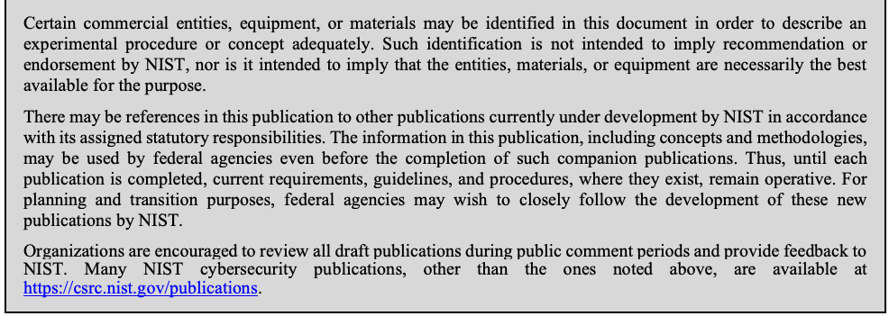
本書では、実験の手順や概念を適切に説明するために、特定の商業的な事業体、機器、または資材を挙げている場合があります。そのような記載は、NIST による推奨や保証を意味するものではなく、それらの事業体、資材、機器がその目的に利用できる最良のものであることを意味するものでもありません。
There may be references in this publication to other publications currently under development by NIST in accordance with its assigned statutory responsibilities. The information in this publication, including concepts and methodologies, may be used by federal agencies even before the completion of such companion publications. Thus, until each publication is completed, current requirements, guidelines, and procedures, where they exist, remain operative. For planning and transition purposes, federal agencies may wish to closely follow the development of these new publications by NIST.
本刊行物では、NIST が法令で定められた責務に従って現在策定中の他の刊行物に言及している場合があります。本刊行物の情報（概念や方法論を含む）は、そうした関連刊行物の完成前であっても、連邦機関が利用してもよいです。したがって、各刊行物が完成するまでは、現行の要件、ガイドライン、手順が存在する場合には、それらが引き続き有効です。計画および移行のため、連邦機関は、NIST によるこれらの新しい刊行物の策定状況を注意深く確認することができます。
Organizations are encouraged to review all draft publications during public comment periods and provide feedback to NIST. Many NIST cybersecurity publications, other than the ones noted above, are available at https://csrc.nist.gov/publications.
組織は、パブリックコメント期間中にすべてのドラフト刊行物を確認し、NIST にフィードバックを提供することが推奨されます。上記以外の NIST のサイバーセキュリティ関連刊行物の多くは、https://csrc.nist.gov/publications で入手できます。
Reports on Computer Systems Technology
コンピュータシステム技術に関する報告書
The Information Technology Laboratory (ITL) at the National Institute of Standards and Technology (NIST) promotes the U.S. economy and public welfare by providing technical leadership for the Nation’s measurement and standards infrastructure. ITL develops tests, test methods, reference data, proof of concept implementations, and technical analyses to advance the development and productive use of information technology. ITL’s responsibilities include the development of management, administrative, technical, and physical standards and guidelines for the cost-effective security and privacy of other than national security-related information in federal information systems.
米国国立標準技術研究所（NIST）の情報技術研究所（ITL）は、国の計測・標準インフラに技術的なリーダーシップを提供することで、米国経済と公共の福祉を促進しています。ITL は、情報技術の開発と生産的な利用を進めるため、テスト、テスト方法、参照データ、概念実証の実装、技術分析を開発しています。ITL の責務には、連邦情報システムにおける国家安全保障に関係しない情報について、費用対効果の高いセキュリティとプライバシーを確保するための、管理上、運用上、技術上および物理上の標準とガイドラインの策定が含まれます。
Abstract
要旨
Organizational security awareness programs experience a number of challenges, including lack of resources, difficulty measuring the impact of the program, and perceptions among the workforce that training is a boring, “check-the-box” activity. While prior surveys and research have examined programs in the private sector, there is little understanding of whether these findings also apply within the U.S. government. To address this gap and better understand the needs, challenges, practices, and necessary competencies of federal security awareness teams and programs, NIST conducted a research study that leveraged both qualitative and quantitative methodologies. This companion document to NISTIR 8420 “Federal Cybersecurity Awareness Programs: A Mixed Methods Research Study” reports on a subset of study results focused on identifying the current approaches and challenges of security awareness programs within the federal government. Insights gained from these results are informing guidance and other initiatives to aid federal organizations in building effective security awareness programs. While focused on the U.S. government, findings may also have implications for organizational security awareness programs in other sectors.
組織のセキュリティ意識向上プログラムは、リソースの不足、プログラムの影響を測定することの難しさ、トレーニングは退屈な「チェックボックス埋め」の作業だという従業員の認識など、多くの課題に直面しています。これまでの調査や研究は民間部門のプログラムを対象にしており、これらの知見が米国政府内にも当てはまるのかどうかは、ほとんど分かっていませんでした。この隔たりを埋め、連邦政府のセキュリティ意識向上チームおよびプログラムのニーズ、課題、実践、必要なコンピテンシーをよりよく理解するため、NIST は、定性的方法と定量的方法の両方を活用した研究を実施しました。本書は NISTIR 8420「Federal Cybersecurity Awareness Programs: A Mixed Methods Research Study」の関連文書であり、研究結果のうち、連邦政府内のセキュリティ意識向上プログラムの現在のアプローチと課題の特定に焦点を当てた一部を報告します。これらの結果から得られた洞察は、連邦組織が効果的なセキュリティ意識向上プログラムを構築することを支援するガイダンスやその他の取り組みに活用されています。本書は米国政府に焦点を当てていますが、知見は他の部門の組織のセキュリティ意識向上プログラムにも示唆を与える可能性があります。
Keywords
キーワード
cybersecurity; cybersecurity awareness; focus groups; measures of effectiveness; mixed methods; phishing; security professionals; survey; training; usable cybersecurity
cybersecurity; cybersecurity awareness; focus groups; measures of effectiveness; mixed methods; phishing; security professionals; survey; training; usable cybersecurity
Executive Summary
エグゼクティブサマリー
Security awareness programs aim to help employees recognize and appropriately respond to security issues, with a goal of achieving long-term behavior change. Industry and research surveys have revealed that organizational security awareness programs face a number of challenges, including lack of resources, difficulty measuring the impact of the program, and perceptions among the workforce that training is a boring, “check-the-box” activity. However, it is unclear if these challenges also apply to security awareness programs in the United States (U.S.) government.
セキュリティ意識向上プログラムは、従業員がセキュリティ上の問題を認識して適切に対応できるよう支援し、長期的な行動変容を達成することを目的としています。業界調査や研究調査により、組織のセキュリティ意識向上プログラムは、リソースの不足、プログラムの影響を測定することの難しさ、トレーニングは退屈な「チェックボックス埋め」の作業だという従業員の認識など、多くの課題に直面していることが明らかになっています。しかし、これらの課題が米国政府のセキュリティ意識向上プログラムにも当てはまるのかどうかは明らかではありませんでした。
To better understand the needs, challenges, practices, and necessary competencies of federal security awareness teams and programs, we conducted a “mixed methods” research study that leveraged both qualitative and quantitative methodologies. We first conducted eight focus groups of federal employees who had security awareness duties or were managers or executives who oversaw the programs within their organizations. The focus groups then informed an online survey completed by 96 federal employees with security awareness responsibilities.
連邦政府のセキュリティ意識向上チームおよびプログラムのニーズ、課題、実践、必要なコンピテンシーをよりよく理解するため、私たちは、定性的方法と定量的方法の両方を活用した「混合研究法（mixed methods）」の研究を実施しました。まず、セキュリティ意識向上の職務を担う連邦職員、またはその組織内でプログラムを統括する管理職・幹部職員を対象に、8回のフォーカスグループを実施しました。次に、フォーカスグループの結果をもとにオンライン調査を設計し、セキュリティ意識向上の責任を担う連邦職員96人が回答しました。
The research background and methodologies for these two phases are described in detail in NISTIR 8420 “Federal Cybersecurity Awareness Programs: A Mixed Methods Research Study.” This companion document reports on a subset of results focused on the approaches and challenges of federal security awareness programs. The following is a high-level overview of these results, with cited statistics from the survey.
これら2つのフェーズの研究の背景と方法論は、NISTIR 8420「Federal Cybersecurity Awareness Programs: A Mixed Methods Research Study」に詳しく記載されています。本関連文書は、結果のうち、連邦政府のセキュリティ意識向上プログラムのアプローチと課題に焦点を当てた一部を報告します。以下は、調査から引用した統計を交えた、これらの結果の概要です。
Required Annual Security Awareness Training
年次の必須セキュリティ意識向上トレーニング
•Two-thirds of survey participants said they develop at least some required security awareness training content in-house, with 80% updating content at least once a year. Focus group participants expressed frustration that each organization had to acquire or create their own training. Instead, they desired standardized government training and guidance that allow customization for the unique needs of each organization.
•調査参加者の3分の2は、必須のセキュリティ意識向上トレーニングのコンテンツの少なくとも一部を組織内で開発していると回答し、80%が少なくとも年1回コンテンツを更新していました。フォーカスグループの参加者は、各組織がそれぞれトレーニングを入手または作成しなければならないことに不満を示しました。その代わりに、各組織に固有のニーズに合わせてカスタマイズできる、標準化された政府共通のトレーニングとガイダンスを望んでいました。
•Automation was viewed as essential for efficient tracking of employees’ completion of training. However, some organizations lacked this automation, especially when tracking contractors, who may not have access to organizations’ learning management systems.
•従業員のトレーニング修了状況を効率的に追跡するには、自動化が不可欠だと考えられていました。しかし、特に、組織の学習管理システムにアクセスできない場合のある請負業者を追跡する際などに、この自動化が欠けている組織もありました。
•When dealing with individuals who do not complete their training by the deadline, many organizations disabled accounts of non-compliant employees, resulting in higher compliance numbers. Still, almost half (47%) said that getting employees to complete the required training was challenging, largely because employees were busy or disinterested.
•期限までにトレーニングを修了しない人への対応として、多くの組織は、要件に従わない従業員のアカウントを無効にしており、その結果、準拠者数が増加していました。それでも、ほぼ半数（47%）は、従業員に必須トレーニングを修了させることが困難だと答えており、その主な理由は、従業員が多忙であるか、関心がないことでした。
Security Awareness Approaches
セキュリティ意識向上のアプローチ
•In addition to the required annual training, 79% of surveyed programs held a variety of security awareness activities throughout the year, such as speaker events, instructor-led sessions, webinars, and interactive activities like escape rooms. Smaller programs were less likely to offer additional activities.
•年次の必須トレーニングに加えて、調査対象プログラムの79%は、講演イベント、講師による講習、ウェビナー、脱出ゲームのような対話型のアクティビティなど、さまざまなセキュリティ意識向上活動を年間を通じて実施していました。規模の小さいプログラムは、追加の活動を提供する傾向が低くなっていました。
•Programs often disseminated information that employees could use in both their work and personal lives, which was viewed as important for establishing consistent security habits. They have also recently introduced more topics relevant to teleworking.
•プログラムは、業務でも私生活でも従業員が活用できる情報を発信することが多く、これは一貫したセキュリティ習慣を確立するうえで重要だと考えられていました。また、最近はテレワークに関連するトピックも増やしています。
•Programs utilized a wide range of other communication channels, such as email, newsletters, posters, and videos. However, 56% of surveyed programs had difficulty providing security awareness information in an engaging way, 47% experienced challenges customizing security awareness information to a diverse workforce, and 40% struggle with ensuring materials are Section 508 compliant, especially when utilizing interactive approaches.
•プログラムは、電子メール、ニュースレター、ポスター、動画など、他のさまざまなコミュニケーションチャネルを活用していました。しかし、調査対象プログラムの56%は、セキュリティ意識向上の情報を魅力的な形で提供することに困難があり、47%は、多様な従業員に合わせて情報をカスタマイズすることに課題があり、40%は、特に対話型のアプローチを用いる場合に、資料が Section 508 に準拠していることの確保に苦労しています。
•85% of programs performed phishing simulations, which were often described as being one of the successful aspects of the security awareness program. While many focused on phishing click rates to gauge learning, others were more interested in reporting rates to demonstrate positive impacts on employee behavior.
•プログラムの85%はフィッシングのシミュレーションを実施しており、これはセキュリティ意識向上プログラムの成功している側面の一つだと説明されることが多くありました。学習の度合いを測るためにフィッシングのクリック率に注目するプログラムが多い一方で、従業員の行動への好影響を示すため、報告率により関心を持つプログラムもありました。
•44% of surveyed programs recognized employees for practicing good security behaviors via a variety of means, such as virtual awards, personal thank-yous, and formal recognitions. Several focus group participants described several successful incentive initiatives related to phishing simulations.
•調査対象プログラムの44%は、バーチャルな表彰、個別の感謝、正式な顕彰など、さまざまな手段で、優れたセキュリティ行動を実践した従業員を称えていました。フォーカスグループの参加者数人は、フィッシングのシミュレーションに関連する、成功したインセンティブの取り組みをいくつか紹介しました。
Informing the Security Awareness Program
セキュリティ意識向上プログラムへの情報提供
•Participants frequently collaborated with other groups in the organization to augment and inform their programs, most commonly other cybersecurity and IT teams, but also with others such as human resources and communications.
•参加者は、プログラムを補強し、プログラムに情報を提供するために、組織内の他のグループと頻繁に連携していました。最も多いのは他のサイバーセキュリティチームおよび IT チームであり、人事部門や広報部門などとも連携していました。
•Programs used a variety of government and non-government resources to inform security awareness topics and approaches, e.g., workforce feedback, organizational security incident trends, news stories, and security mailing lists.
•プログラムは、セキュリティ意識向上のトピックやアプローチに情報を提供するため、政府および非政府のさまざまなリソースを活用していました。たとえば、従業員からのフィードバック、組織のセキュリティインシデントの傾向、ニュース記事、セキュリティ関連のメーリングリストなどです。
•While only 27% of survey participants expressed challenges collaborating or sharing information with other federal security awareness professionals, focus group participants frequently highlighted their desire for increased collaboration. For example, they suggested the creation of a central repository of awareness materials, ongoing working groups, or real-time online forums.
•他の連邦政府のセキュリティ意識向上の専門家との連携や情報共有に課題があると答えた調査参加者は27%にとどまりましたが、フォーカスグループの参加者は、連携の強化を望むと頻繁に強調しました。たとえば、意識向上資料の中央リポジトリ、継続的なワーキンググループ、リアルタイムのオンラインフォーラムの創設を提案しました。
Program Success and Support
プログラムの成功と支援
•Training completion rates were the most common way programs try to determine their effectiveness (84%). Behavior based measures (e.g., phishing click rates, reporting of phishing emails or other incidents) were utilized by over half.
•プログラムが有効性を判断しようとする最も一般的な方法は、トレーニング修了率でした（84%）。行動に基づく指標（たとえば、フィッシングのクリック率や、フィッシングメールその他のインシデントの報告）は、半数を超えるプログラムが用いていました。
•Over half (56%) of survey participants thought their leadership viewed compliance metrics as the most important indicator of program success, with slightly fewer (47%) having the same opinion themselves. However, in qualitative remarks, many focus group and survey participants disagreed with this compliance focus, instead emphasizing that the real purpose of security awareness is to affect employees’ security behaviors; therefore, success should be measured in ways beyond training completion rates.
•調査参加者の過半数（56%）は、自組織の経営層がコンプライアンス指標をプログラムの成功の最も重要な指標とみなしていると考えており、参加者自身が同じ意見だった割合はやや少なくなっていました（47%）。しかし、定性的な意見として、フォーカスグループと調査の多くの参加者は、このコンプライアンス重視に同意せず、セキュリティ意識向上の真の目的は従業員のセキュリティ行動に影響を与えることであり、したがって成功はトレーニング修了率以外の方法でも測定すべきだと強調しました。
•77% rated their security awareness programs as moderately or very successful. However, 44% of survey participants expressed challenges determining how to measure program effectiveness. Survey and focus group participants desired more guidance on appropriate metrics and government-specific data for benchmarking their own program.
•77%は、自組織のセキュリティ意識向上プログラムを、ある程度または非常に成功していると評価しました。しかし、調査参加者の44%は、プログラムの有効性をどのように測定するかを決めることに課題があると答えました。調査とフォーカスグループの参加者は、適切な指標に関するガイダンスと、自組織のプログラムをベンチマークするための政府固有のデータをより多く求めていました。
•48% of survey participants indicated that correlating security incident data with behaviors targeted by the security awareness program was challenging. Yet managers taking the survey listed security incident data as the measure of effectiveness most preferred for helping them make decisions about the security awareness program, while training completion and phishing click rates were mentioned by much fewer.
•調査参加者の48%は、セキュリティインシデントのデータを、セキュリティ意識向上プログラムが対象とする行動と関連付けることが困難だと答えました。それでも、調査に参加した管理職は、セキュリティ意識向上プログラムに関する意思決定を行ううえで最も好まれている有効性の指標としてセキュリティインシデントのデータを挙げ、トレーニング修了率やフィッシングのクリック率を挙げた人ははるかに少数でした。
•Large majorities (70% and greater) thought that security was a priority for the organization, that security was understood by leadership and employees as important, and that leadership and employees supported the security awareness program. However, only 35% of survey participants thought the program had been provided adequate funding and staff.
•大多数（70%以上）は、セキュリティが組織の優先事項であること、セキュリティが重要であると経営層と従業員に理解されていること、経営層と従業員がセキュリティ意識向上プログラムを支持していることを考えていました。しかし、調査参加者のうち、プログラムに十分な資金と人員が提供されていると考えたのは35%にとどまりました。
Study results can inform federal security awareness professionals, organizational decision makers, policy makers, and guidance developers in their efforts to improve and advocate for federal security awareness programs. The results may also be valuable to security awareness professionals outside of the government who face similar challenges. Additionally, although this study refers to security awareness programs, its focus is not only relevant to awareness but also to security training issues as well.
研究結果は、連邦政府のセキュリティ意識向上の専門家、組織の意思決定者、政策立案者、ガイダンスの策定者が、連邦政府のセキュリティ意識向上プログラムを改善し、その重要性を訴える取り組みの参考になります。また、結果は、同様の課題に直面している政府外のセキュリティ意識向上の専門家にとっても有益である可能性があります。さらに、本研究はセキュリティ意識向上プログラムに言及していますが、その焦点は意識向上だけでなく、セキュリティトレーニングの課題にも関連しています。
Table of Contents
目次
List of Appendices
付録の一覧
List of Figures
図の一覧
1 Introduction
1 はじめに
Security awareness and training programs aim to help employees recognize and appropriately respond to security issues, with a goal of achieving long-term behavior change [WILSON]. Industry and research surveys have revealed that organizational security awareness programs may face a number of challenges, including lack of resources, difficulty measuring the impact of the program, and perceptions among the workforce that training is a boring, “check-the-box” activity [SANS][WOELK][BADA][STEWART][FERTIG]. However, it is unclear if these challenges also apply to security awareness programs in the United States (U.S.) government.
セキュリティ意識向上およびトレーニングのプログラムは、従業員がセキュリティ上の問題を認識して適切に対応できるよう支援し、長期的な行動変容を達成することを目的としています [WILSON]。業界調査や研究調査により、組織のセキュリティ意識向上プログラムは、リソースの不足、プログラムの影響を測定することの難しさ、トレーニングは退屈な「チェックボックス埋め」の作業だという従業員の認識など、多くの課題に直面する場合があることが明らかになっています [SANS][WOELK][BADA][STEWART][FERTIG]。しかし、これらの課題が米国政府のセキュリティ意識向上プログラムにも当てはまるのかどうかは明らかではありませんでした。
To better understand the needs, challenges, practices, and necessary competencies of federal security awareness teams and programs, we conducted a “mixed methods” research study that leveraged both qualitative and quantitative methodologies. The National Institute of Standards and Technology (NIST) Research Protections Office reviewed the protocol for this research project (ITL-2020-0238) and determined it meets the criteria for “exempt human subjects research” as defined in 15 CFR 27, the Common Rule for the Protection of Human Subjects.
連邦政府のセキュリティ意識向上チームおよびプログラムのニーズ、課題、実践、必要なコンピテンシーをよりよく理解するため、私たちは、定性的方法と定量的方法の両方を活用した「混合研究法（mixed methods）」の研究を実施しました。米国国立標準技術研究所（NIST）の研究保護室（Research Protections Office）は、この研究プロジェクトのプロトコル（ITL-2020-0238）を審査し、ヒト被験者保護に関する共通規則（Common Rule）である15 CFR 27で定義される「免除対象のヒトを対象とする研究」の基準を満たすと判断しました。
We conducted the study in two sequential phases from December 2020 – July 2021. In the first phase, we collected qualitative data via eight focus groups with federal employees who had security awareness duties or were managers or executives who oversaw the programs within their organizations. Focus groups provided an understanding of current security awareness approaches within the government and the concepts and challenges viewed as most important by participants. These insights then informed a second phase consisting of a follow-on, online survey completed by 96 federal employees involved in their security awareness programs.
この研究は、2020年12月から2021年7月にかけて、2つのフェーズを順に行う形で実施しました。第1フェーズでは、セキュリティ意識向上の職務を担う連邦職員、またはその組織内でプログラムを統括する管理職・幹部職員を対象に、8回のフォーカスグループを通じて定性データを収集しました。フォーカスグループにより、政府内の現在のセキュリティ意識向上のアプローチと、参加者が最も重要と考える概念や課題を把握することができました。これらの洞察をもとに、第2フェーズとして、自組織のセキュリティ意識向上プログラムに関わる連邦職員96人が回答するオンライン調査を、続けて実施しました。
The research background and methodologies (study design, recruitment, data collection, and data analysis) employed for these two phases are described in detail in NISTIR 8420 “Federal Cybersecurity Awareness Programs: A Mixed Methods Research Study.” This companion document, NISTIR 8420A, reports on a subset of results focused on the approaches and challenges of federal security awareness programs. Specifically, these results answer the following research questions:
これら2つのフェーズで用いた研究の背景と方法論（研究設計、募集、データ収集、データ分析）は、NISTIR 8420「Federal Cybersecurity Awareness Programs: A Mixed Methods Research Study」に詳しく記載されています。本関連文書の NISTIR 8420A は、結果のうち、連邦政府のセキュリティ意識向上プログラムのアプローチと課題に焦点を当てた一部を報告します。具体的には、これらの結果は次の研究課題に答えるものです。
1.What approaches and techniques do federal agencies employ in their security awareness programs?
1.連邦機関は、セキュリティ意識向上プログラムにどのようなアプローチや手法を用いていますか。
2.What’s working well with respect to security awareness training in federal agencies?
2.連邦機関のセキュリティ意識向上トレーニングにおいて、うまくいっていることは何か。
3.What’s not working well? What are the challenges and concerns of federal security awareness programs?
3.うまくいっていないことは何か。連邦政府のセキュリティ意識向上プログラムの課題や懸念は何か。
4.How do organizations determine the effectiveness of the security awareness program?
4.組織は、セキュリティ意識向上プログラムの有効性をどのように判断していますか。
5.What resources and guidance are used to inform the security awareness programs?
5.セキュリティ意識向上プログラムに情報を提供するために、どのようなリソースやガイダンスが用いられていますか。
6.What do teams feel like they need to be more successful? What kinds of resources would be most beneficial?
6.チームは、より成功するために何が必要だと感じていますか。どのような種類のリソースが最も有益ですか。
Study results will inform guidance and other resources (e.g., sharing forums) to aid federal organizations in building effective security awareness programs.
研究結果は、連邦組織が効果的なセキュリティ意識向上プログラムを構築することを支援するガイダンスやその他のリソース（たとえば、情報共有のためのフォーラム）に活用されます。
The report is organized as follows. Section 2 describes conventions used when reporting results. Section 3 describes study results related to security awareness approaches, including required security awareness training, communication channels, topics, and associated challenges. Section 4 provides results about sources of support for security awareness programs and resources that inform program topics and approaches. Section 5 summarizes how organizations determine program success and challenges in doing so. Section 6 describes results related to perceptions of program support. Section 7 summarizes key takeaways from the study related to program approaches and challenges.
本書の構成は次のとおりです。第2章では、結果を報告する際の表記上の規則を説明します。第3章では、必須のセキュリティ意識向上トレーニング、コミュニケーションチャネル、トピック、関連する課題など、セキュリティ意識向上のアプローチに関する研究結果を説明します。第4章では、セキュリティ意識向上プログラムへの支援の情報源と、プログラムのトピックやアプローチに情報を提供するリソースに関する結果を示します。第5章では、組織がプログラムの成功をどのように判断しているか、およびその際の課題をまとめます。第6章では、プログラムへの支援に対する認識に関する結果を説明します。第7章では、プログラムのアプローチと課題に関する、研究の主な要点をまとめます。
The target audience of this report consists of individuals involved with federal security awareness programs. The report can serve as a resource for federal security awareness professionals, managers, and organizational decision makers to improve and advocate for their organizations’ security awareness programs. Those who develop and manage federal security awareness guidance, policies, sharing forums, and initiatives may also benefit. The report may be valuable to security awareness professionals outside of the government who face similar challenges. Additionally, although this study refers to security awareness programs, its focus is not only relevant to awareness but also to security training issues as well.
本書の想定読者は、連邦政府のセキュリティ意識向上プログラムに関わる人々です。本書は、連邦政府のセキュリティ意識向上の専門家、管理職、組織の意思決定者が、自組織のセキュリティ意識向上プログラムを改善し、その重要性を訴えるためのリソースとして役立てることができます。連邦政府のセキュリティ意識向上のガイダンス、方針、情報共有フォーラム、取り組みを策定・管理する人々にも有益である可能性があります。本書は、同様の課題に直面している政府外のセキュリティ意識向上の専門家にとっても価値があるかもしれません。さらに、本研究ではセキュリティ意識向上プログラムを扱っていますが、その焦点は意識向上だけでなく、セキュリティトレーニングの課題にも関連しています。
2 Reporting Conventions
2 報告の規則
This section describes the organization and reporting of study results. Results are focused on and organized according to the survey structure, with all statistics based on survey data. Because participants had the option of skipping survey questions, participants may not have answered all questions. Therefore, we include the number of survey responses for each question (n) with our summary statistics.
本章では、研究結果の構成と報告のしかたを説明します。結果は調査の構成に沿って整理しており、すべての統計は調査データに基づいています。参加者は調査の質問を飛ばすことができたため、すべての質問に回答していない参加者がいる場合があります。そのため、要約統計とともに、各質問の調査回答数（n）を記載しています。
Inferential statistics were calculated for select questions to look for differences between the following groups:
一部の質問については、次のグループ間の差を調べるために推測統計を算出しました。
•Organization type
•組織の種類
•Department
•省庁
•Sub-component
•下位組織
•Independent agency
•独立機関
•Program size - based on number of employees (federal employees and contractors) covered under the organization’s security awareness program
•プログラムの規模 - 組織のセキュリティ意識向上プログラムの対象となる従業員（連邦職員および請負業者）の数に基づく
•Small – Less than 1,000 employees
•小 – 1,000人未満
•Medium – 1,000 – 4,999 employees
•中 – 1,000～4,999人
•Large – 5,000 – 29,999 employees
•大 – 5,000～29,999人
•Very Large – 30,000+ employees
•特大 – 30,000人以上
•Team size - the number of individuals directly tasked with security awareness duties
•チームの規模 - セキュリティ意識向上の職務を直接担う人数
•Very small – 1-2 people
•極小 – 1～2人
•Small – 3-5 people
•小 – 3～5人
•Medium – 6 – 10 people
•中 – 6～10人
•Large – More than 10 people
•大 – 10人超
See NISTIR 8420 for details on statistical tests and level of significance.
統計検定と有意水準の詳細は、NISTIR 8420 を参照してください。
The results of statistical analyses are highlighted in gray text boxes, with statements of statistically significant results in bold.
原本PDFの抜粋画像
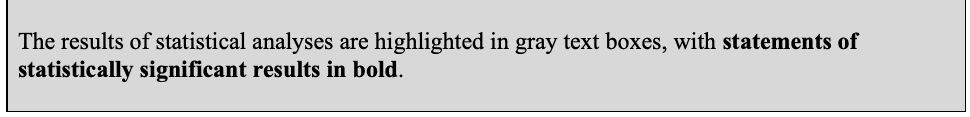
統計分析の結果は灰色のテキストボックスで強調して示し、統計的に有意な結果を述べた文は太字にしています。
Direct quotes from the focus groups and open-ended questions in the survey are included where appropriate to further support or provide more insight into quantitative survey results. Quotes from the survey are attributed to individual survey participants by denoting an anonymous identifier consisting of “Q” followed by the participant number (e.g., Q48). In attributing quotes to focus group participants, individuals from Independent agencies are identified as N01 – N12, Department-level organizations as D01 – D06, and Sub-components as S01 – S11.
フォーカスグループおよび調査の自由回答式の質問からの直接引用は、定量的な調査結果を補強し、より深い洞察を与えるために、適切な箇所に含めています。調査からの引用は、「Q」に参加者番号を続けた匿名の識別子（例: Q48）で、個々の調査参加者に帰属させています。フォーカスグループの参加者の発言については、独立機関の参加者を N01～N12、省庁レベルの組織の参加者を D01～D06、下位組織の参加者を S01～S11 と識別しています。
3 Security Awareness Approaches
3 セキュリティ意識向上のアプローチ
In this section, we describe the ways in which federal security awareness programs disseminate security awareness information to their workforce, including the annual required training, other security awareness activities, and phishing simulations. We also provide results related to security awareness topics, approaches for recognizing employees for good security behaviors, how programs have adjusted their approaches due to the pandemic, and challenges they face in disseminating information.
本章では、連邦政府のセキュリティ意識向上プログラムが、年次の必須トレーニング、その他のセキュリティ意識向上活動、フィッシングのシミュレーションなどを通じて、セキュリティ意識向上の情報を従業員にどのように伝えているかを説明します。あわせて、セキュリティ意識向上のトピック、優れたセキュリティ行動を称賛するアプローチ、パンデミックを受けてプログラムがアプローチをどのように調整したか、情報を伝える際に直面する課題に関する結果も示します。
3.1 Annual Required Training
3.1 年次の必須トレーニング
U.S. Government organizations are mandated to implement annual, mandatory security awareness training for all employees (federal employees and contractors). This section details responses specific to the mandatory training component of security awareness programs.
米国政府の組織は、すべての従業員（連邦職員および請負業者）に対して、年次の必須セキュリティ意識向上トレーニングを実施することが義務付けられています。本節では、セキュリティ意識向上プログラムのうち必須トレーニングの要素に固有の回答を詳述します。
3.1.1 Required Training Fulfillment
3.1.1 必須トレーニングの修了
We asked participants in what ways their employees could fulfill annual security awareness requirements (Figure 1). Online, computer-based courses were the most popular method at 65%. The next most popular method (23% of participants) was via a live training event held by the organization.
従業員が年次のセキュリティ意識向上の要件をどのような方法で満たせるかを参加者に尋ねました（図 1）。オンラインのコンピュータベースのコースが65%で最も多い方法でした。次に多かった方法（参加者の23%）は、組織が開催するライブのトレーニングイベントでした。
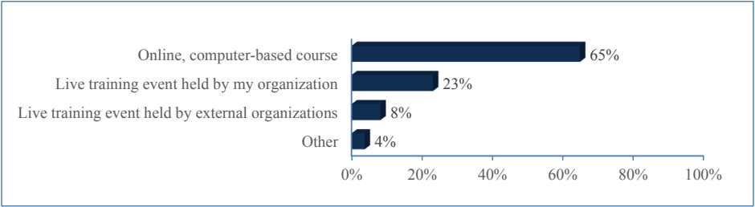
横棒グラフです。「オンラインのコンピュータベースコース」65%、「組織が実施する対面研修」23%、「外部組織が実施する対面研修」8%、「その他」4%。横軸は0%から100%です。
Figure 1: How training requirements can be fulfilled (n=89)
図 1: トレーニング要件を満たす方法（n=89）
Sixty-four percent only selected one option, i.e., their organizations only provide one way for employees to complete required security awareness training.
64%の参加者は選択肢を1つだけ選択しており、つまり、その参加者の組織は従業員が必須のセキュリティ意識向上トレーニングを修了する方法を1つしか提供していません。
For the number of ways in which employees could fulfill their training requirement, we found no statistically significant differences between groups (organization type, program size, team size) among those who only offer one way to complete training versus those that offer multiple ways.
原本PDFの抜粋画像
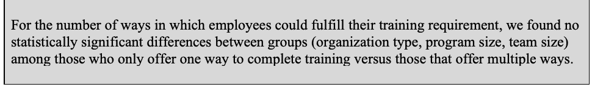
従業員がトレーニング要件を満たせる方法の数について、トレーニングを修了する方法を1つだけ提供している組織と複数提供している組織との間に、組織の種類、プログラムの規模、チームの規模のいずれのグループでも、統計的に有意な差は見られませんでした。
As mirrored in the survey, focus group participants’ organizations most often made use of computer-delivered security awareness training for the annual requirement:
調査結果と同様に、フォーカスグループの参加者の組織も、年次の要件に対して、コンピュータで提供されるセキュリティ意識向上トレーニングを最も多く利用していました。
“Since we have a lot of our personnel in remote areas, we've been doing it through our learning management system primarily for the annual security awareness training.” (D05)
「当組織では職員の多くが遠隔地にいるため、年次のセキュリティ意識向上トレーニングは、主に学習管理システムを通じて実施してきました。」（D05）
“For us, our general security awareness and training course is computer-based and it's online. We have a[n]…electronic learning management system. Everyone, all our employees and contractors have an account, and they log in and they complete it.” (S08)
「当組織では、一般的なセキュリティ意識向上トレーニングコースはコンピュータベースで、オンラインです。電子学習管理システムがあります。従業員と請負業者を含む全員がアカウントを持っており、ログインして受講します。」（S08）
“That's just delivered via e-mail, PowerPoint to the person.” (N11)
「それは単に、電子メールと PowerPoint で本人に配信しているだけです。」（N11）
Other organizations offer employees multiple options for completing their training:
従業員にトレーニングを修了するための複数の選択肢を提供している組織もあります。
“For our main enterprise network, it's computer-based training that's taken annually…But for those who don't have access to the enterprise network often for certain other networks that we might maintain,…those are physical briefings done by the ISSOs [information system security officers] to those personnel. And then they sign an acknowledgment form.” (D03)
「当組織のメインのエンタープライズネットワークでは、年1回のコンピュータベースのトレーニングを受講します。…しかし、エンタープライズネットワークにアクセスできない人、多くの場合は当組織が維持している特定の他のネットワークを利用する人には、…ISSO［情報システムセキュリティ担当官］が対面で説明します。その後、本人が確認書に署名します。」（D03）
“We have a computer-based training for the annual cybersecurity awareness training requirement, which we load into our – [Department] has a learning center. So those that have access to that take the training there. In addition, we also offer instructor-led annual cybersecurity awareness training. This past year, obviously, it was remote. Generally, those are in person.” (D04)
「年次のサイバーセキュリティ意識向上トレーニングの要件には、コンピュータベースのトレーニングがあり、それを当省の学習センターに読み込んでいます。アクセスできる人は、そこで受講します。それに加えて、講師による年次のサイバーセキュリティ意識向上トレーニングも提供しています。昨年は当然リモートで行いましたが、通常は対面です。」（D04）
“To accomplish their training, we do offer either online, or we typically – not this year because of the pandemic – but we typically host an annual IT Security Day event. And it's a one day, attend any one talk, and register. And then we process those registrations in our learning management system, actually, so that we have that artifact in our learning system that they attended that event.” (S11)
「トレーニングの修了方法として、オンラインを提供しています。また、通常は、今年はパンデミックのため開催できませんでしたが、毎年 IT セキュリティデーというイベントを開催しています。1日のイベントで、どれか1つの講演に出席して登録します。そして、その登録を学習管理システムで処理し、そのイベントに出席した記録が学習システムに残るようにしています。」（S11）
3.1.2 Obtaining Training Content
3.1.2 トレーニングコンテンツの入手
We asked how the participant’s organization obtained required security awareness training content (select all that apply) (see Figure 2). About two-thirds of the participants work in organizations that created training internally, with 31% purchasing training from outside their organization. Fewer obtain the content from other organizations.
参加者の組織が必須のセキュリティ意識向上トレーニングのコンテンツをどのように入手したかを尋ねました（該当するものをすべて選択）（図 2 を参照）。参加者の約3分の2は、トレーニングを組織内で作成している組織で働いており、31%は組織外からトレーニングを購入していました。他の組織からコンテンツを入手している割合はそれより低くなっていました。
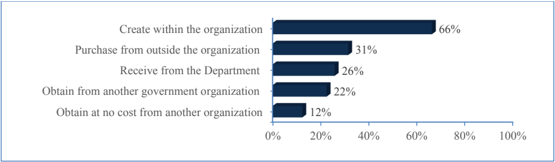
横棒グラフです。「組織内で作成」66%、「組織外から購入」31%、「省庁から受領」26%、「別の政府機関から入手」22%、「別の組織から無償で入手」12%。横軸は0%から100%です。
Figure 2: How required training is obtained (n=89)
図 2: 必須トレーニングの入手方法（n=89）
The only statistically significant finding was among different types of organizations for the selection of “Purchase from outside the organization.” For that option, there was a statistically significant difference between independent agencies (52% of 33 participants selecting this option) and sub-components (15% of 27 participants selecting this option). This result corresponds with data showing that many sub-components receive training directly from their Departments.
原本PDFの抜粋画像
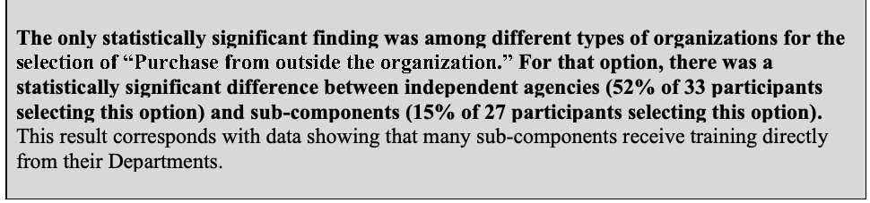
唯一の統計的に有意な結果は、「組織外から購入」の選択について、組織の種類の間で見られたものです。この選択肢を選んだ参加者の割合には、独立機関（33人中52%）と下位組織（27人中15%）の間で統計的に有意な差がありました。この結果は、多くの下位組織が所属省庁から直接トレーニングを受けていることを示すデータと整合します。
Focus group participants provided additional details on the sources of their required training. Many utilize training developed by other organizations:
フォーカスグループの参加者は、必須トレーニングの入手元について追加の詳細を述べました。多くは、他の組織が開発したトレーニングを利用しています。
“We use [other government agency’s] awareness training. We've kind of maintained a status quo throughout the years from that perspective.” (D04)
「当省では［他の政府機関］の意識向上トレーニングを使っています。その点では、長年にわたって現状を維持してきました。」（D04）
“For CSATs [cybersecurity awareness training], we use SANS as our provider, and we use those topics. So, whatever they offer as modules, we follow their guidance.” (N03)
「CSAT［サイバーセキュリティ意識向上トレーニング］には、提供元として SANS を使っており、そのトピックを使っています。つまり、SANS がモジュールとして提供しているものについては、そのガイダンスに従っています。」（N03）
“Our training is also web-based training. It's through the Department, through their learning management system, and they have a vendor designed training.” (S02)
「当組織のトレーニングもウェブベースのトレーニングです。所属省庁の学習管理システムを通じて受講するもので、ベンダーが設計したトレーニングです。」（S02）
“Check out free resources such as the IASE Cyber Awareness Challenge for material to include in your training” (Q57)
「トレーニングに含める資料として、IASE Cyber Awareness Challenge などの無料のリソースを確認してみてください」（Q57）
Others develop the content in-house:
コンテンツを組織内で開発している組織もあります。
“For IT security and privacy awareness training, I just do this huge PowerPoint that covers all the topics that you need to cover and all our policies and procedures. Anything that's new from the year gets incorporated in the annual update. I send that PowerPoint over to the learning management folks and they do the online version with the voice-over and all that.” (N11)
「IT セキュリティとプライバシーの意識向上トレーニングでは、扱う必要のあるすべてのトピックと当組織の方針・手順を網羅した、大部の PowerPoint 資料を作成しています。その年に新しくなったことは何でも、年次更新に組み込みます。その PowerPoint を学習管理の担当者に送ると、担当者がナレーションなどを付けたオンライン版を作ります。」（N11）
3.1.3 Update Frequency
3.1.3 更新頻度
Participants indicated how often their organization updates security awareness training content, with 80% answering that they update it at least once a year. No participants said they updated content more than every three years, and 4% did not know how often content was updated (see Figure 3).
参加者は、自組織がセキュリティ意識向上トレーニングのコンテンツをどのくらいの頻度で更新するかを回答し、80%が少なくとも年1回更新すると答えました。3年を超える間隔でコンテンツを更新すると答えた参加者はおらず、4%はコンテンツがどのくらいの頻度で更新されるのかを知りませんでした（図3を参照）。
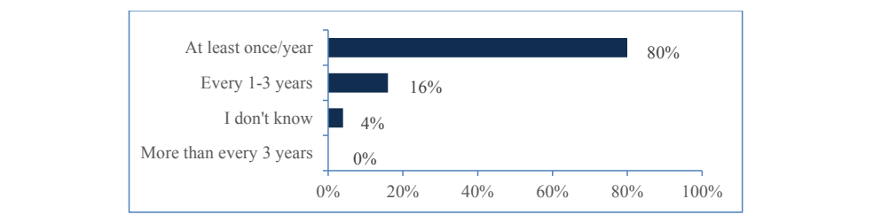
横棒グラフです。「At least once/year」（少なくとも年1回）80%、「Every 1-3 years」（1〜3年ごと）16%、「I don't know」（わからない）4%、「More than every 3 years」（3年より長い間隔）0%です。横軸は 0% から 100% まで 20% 刻みです。
Figure 3: Required training content update frequency (n=89)
図 3: 必須トレーニングコンテンツの更新頻度（n=89）
グループ間に統計的に有意な差は見られませんでした。
Participant quotes from the focus groups and open-ended questions in the survey provide insights into the range of responses. Participants’ comments reflect motivators for regularly updating annual training, such as addressing emerging threats and organizational feedback:
フォーカスグループと調査の自由回答式の質問からの参加者の引用は、回答の幅についての洞察を与えてくれます。参加者のコメントには、新たな脅威への対応や組織からのフィードバックなど、年次トレーニングを定期的に更新する動機が反映されています。
“Cybersecurity and related vulnerabilities are constantly changing so your program needs to be flexible.” (Q35)
「サイバーセキュリティと関連する脆弱性は絶えず変化しているため、プログラムは柔軟である必要があります。」（Q35）
“We update annually based on what's been going on the previous year.” (D02)
「前年に起きたことに基づいて、毎年更新しています。」（D02）
“I try to make sure that any messaging or any type of awareness information I'm sharing is current, and it's not stale.” (N10)
「私が共有するメッセージや意識向上の情報は、どのようなものでも最新で、古くなっていないようにしています。」（N10）
“To make sure to respond appropriately to any inquires (positive and negative) and make improvements that are visible to your stakeholders.” (Q40)
「問い合わせ（肯定的なものも否定的なものも）に適切に対応し、ステークホルダーから見える形で改善するため」（Q40）
3.1.4 Non-Compliance Actions and Consequences
3.1.4 非準拠への措置と結果
We asked participants what happens when employees do not complete their required training by the deadline designated by the organization (select all that apply question type). Figure 4 shows the non-compliance actions and consequences. The top three actions were: disabling accounts (74%), sending an email reminder (73%), and contacting the employee’s supervisor (70%). Few participants (6%) said that failure to complete required training impacts employees’ performance ratings. Three percent of respondents said their organization disables the employee’s internet access.
従業員が組織の定めた期限までに必須トレーニングを修了しなかった場合に何が起きるかを参加者に尋ねました（該当するものをすべて選択する形式の質問）。図 4 は、非準拠への措置と結果を示しています。上位3つの措置は、アカウントの無効化（74%）、電子メールによるリマインダーの送信（73%）、従業員の上司への連絡（70%）でした。必須トレーニングを修了しなかったことが従業員の業績評価に影響すると答えた参加者は少数でした（6%）。回答者の3%は、自組織が従業員のインターネットアクセスを無効にすると答えました。
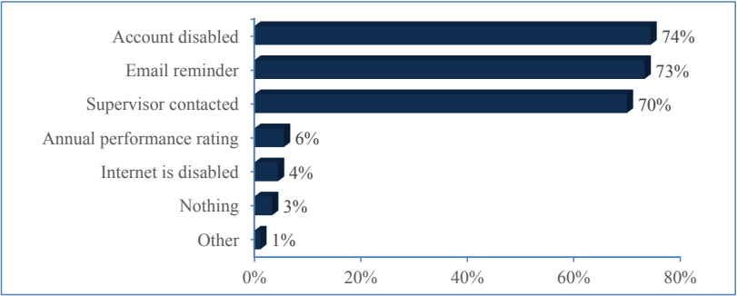
横棒グラフです。「アカウント無効化」74%、「メールでのリマインダー」73%、「上司への連絡」70%、「年次業績評価」6%、「インターネット無効化」4%、「なし」3%、「その他」1%。横軸は0%から80%です。
Figure 4: Required training non-compliance actions and consequences (n=90)
図 4: 必須トレーニングの非準拠への措置と結果（n=90）
Consequences for non-compliance was a popular topic of discussion during the focus groups. A program lead talked about alerting supervisors to employee non-compliance:
非準拠に対する結果は、フォーカスグループで盛んに議論された話題でした。あるプログラム責任者は、従業員の非準拠を上司に知らせることについて語りました。
“I do send out messaging to…leadership regarding their employees that have not completed it prior to the deadline before their access is shut off so that they have an opportunity to get it done. But that seems to help us very well with ensuring that the training is completed timely.” (N05)
「アクセスが遮断される前に、期限までに修了していない従業員について幹部に連絡し、トレーニングを終える機会を設けています。しかし、期限内にトレーニングが修了するよう徹底するうえで、これは非常に有効なようです。」（N05）
However, sending email reminders was not always easy for everyone:
しかし、電子メールによるリマインダーの送信は、誰にとっても容易なわけではありませんでした。
“With our LMS [Learning Management System], we also are not allowed to send automated emails to remind people to take their training. So, I have to do that manually,…and I end up sending emails to about 2,000 users to remind them to take the training.” (S10)
「当組織の LMS［学習管理システム］では、トレーニングを受けるよう促す自動メールの送信も認められていません。そのため手作業で行う必要があり、…結局、約2,000人のユーザーにトレーニングを受けるよう促すメールを送ることになります。」（S10）
Disabling accounts was by far the most explicitly mentioned consequence by participants and was touted as being quite effective.
アカウントの無効化は、参加者が明示的に挙げた結果として群を抜いて多く、非常に効果的だと評価されていました。
“[Training completion] went from darn-near 72-percent completion rate to 98 percent in like three days once we started disabling accounts…Disabling accounts and actually doing what you say you will do works well for the program.” (N06)
「アカウントを無効にし始めたところ、［トレーニングの修了率］は、ほぼ72%だったものが、3日ほどで98%になりました。…アカウントを無効にして、言ったとおりに実行することが、プログラムにはよく効きます。」（N06）
“We've been manually disabling people for years, and that's the reason why our numbers have been in the high 90s, between 98 and 99 point something.” (N09)
「何年も手作業で人々のアカウントを無効化してきました。そのため、数値は90%台後半、98%から99%を少し超える程度になっています。」（N09）
“I have only had to disable maybe 5 or 10 people in the past years. And last year, I think I had none because I'm very aggressive and letting them know, ‘Hey, you need to complete the training. If you don't require the training anymore, then you need to let me know’.” (S09)
「無効にする必要があったのは、過去数年で5人か10人くらいです。昨年は、おそらくゼロでした。私が非常に積極的に、『トレーニングを修了する必要があります。もうトレーニングが不要なら、教えてください』と伝えているからです。」（S09）
“In order to enforce this training, it's imperative to have that backend information and the means to cut people off or withhold their access until they meet the requirements.” (S11)
「このトレーニングを徹底させるには、バックエンドの情報と、要件を満たすまで利用者のアクセスを遮断したり保留したりする手段を持つことが不可欠です。」（S11）
“Non-compliance shutoff maintains 100% compliance.” (Q43)
「非準拠者の遮断により、100%の準拠を維持しています。」（Q43）
3.1.5 Challenges: Required Training
3.1.5 課題: 必須トレーニング
Participants rated their challenges with required training on a four-point scale ranging from “very challenging” to “not at all challenging,” with a “does not apply” (N/A) option (see Figure 5).
参加者は、必須トレーニングに関する課題を、「非常に困難」から「まったく困難ではない」までの4段階と、「該当しない」（N/A）の選択肢で評価しました（図 5 を参照）。
![100% stacked horizontal bar chart (0% to 100%) with the legend: “Very challenging”, “Moderately challenging”, “Slightly challenging”, “Not at all challenging”, “N/A”. Percentage labels shown on the segments, from left to right: “Getting employees to complete training (n=89)”: 10%, 37%, 34%, 18%, 1%; “Tracking federal employee completion (n=88)”: 5%, 11%, 30%, 51%, 3%; “Tracking contractor completion (n=88)”: 13%, 10%, 36%, 34%, 7%; “Finding courses/materials (n=89)”: 6%, 17%, 19%, 43%, 16%; “Finding guidance on what to include (n=89)”: 7%, 15%, 27%, 40%, 11%; “Updating training content (n=88)”: 7%, 19%, 28%, 35%, 10%.](assets/ir-8420a/p0018-figure-01.png)
100% 積み上げ横棒グラフ（0%〜100%）です。凡例は「非常に困難」「ある程度困難」「少し困難」「まったく困難ではない」「該当なし」です。各棒の区分に左から次の割合が表示されています。「従業員にトレーニングを修了させること (n=89)」10% / 37% / 34% / 18% / 1%、「連邦職員の修了状況を追跡すること (n=88)」5% / 11% / 30% / 51% / 3%、「請負業者の修了状況を追跡すること (n=88)」13% / 10% / 36% / 34% / 7%、「コース／教材を見つけること (n=89)」6% / 17% / 19% / 43% / 16%、「含める内容に関するガイダンスを見つけること (n=89)」7% / 15% / 27% / 40% / 11%、「トレーニングコンテンツを更新すること (n=88)」7% / 19% / 28% / 35% / 10%。
Figure 5: Challenges – Required training
図 5: 課題 – 必須トレーニング
The following provides more detail on survey results for each challenge while incorporating example supporting quotes from focus group and open-ended survey questions to provide additional, qualitative insights.
以下では、各課題に関する調査結果をより詳しく説明し、フォーカスグループと調査の自由回答式の質問からの裏付けとなる引用例を取り入れて、定性的な洞察を補います。
Getting employees to complete required training by the appointed deadline: Almost half (47%) of survey participants thought getting employees to complete required security awareness training by the organizational deadline was very or moderately challenging.
従業員に指定の期限までに必須トレーニングを修了させること: 調査参加者のほぼ半数（47%）は、従業員に組織の期限までに必須のセキュリティ意識向上トレーニングを修了させることが非常にまたはある程度困難だと考えていました。
グループ間に統計的に有意な差は見られませんでした。
Within the focus groups, participants voiced concerns that employees view required training as a generic, “check-the-box” exercise and may feel overwhelmed by having to complete numerous other mandatory organizational training courses:
フォーカスグループでは、参加者は、従業員が必須トレーニングを一般的な「チェックボックス埋め」の作業と見なし、他にも多数の必須の組織内トレーニングコースを修了しなければならないことに圧倒される場合があるという懸念を述べました。
“I could see how someone taking the training could say, ‘This is not applicable to me,’ and kind of just get through it to just get the training, get off the list, and be done with it.” (N10)
「トレーニングを受ける人が『これは自分には当てはまらない』と言って、とにかくトレーニングを終わらせて、リストから外れて、片付けてしまおうとするのは理解できます。」（N10）
“You’ve got IT security, physical security, personnel security, etc. And they have their own training requirements…It’s inefficient.” (S11)
「IT セキュリティ、物理セキュリティ、人事セキュリティなどがあり、それぞれに独自のトレーニング要件があります。…非効率です。」（S11）
“People are busy. They have all kinds of tasks to be doing. They have other trainings that are required, and we are still trying to figure out how to most seamlessly help our users want to do this training.” (S05)
「人々は忙しく、やるべき仕事がいろいろあります。必須の他のトレーニングもあり、どうすれば利用者に最もスムーズにこのトレーニングを受けたいと思ってもらえるか、今も模索しているところです。」（S05）
As a result, employees may put off taking the training until the last minute:
その結果、従業員がトレーニングの受講をぎりぎりまで先延ばしにする場合があります。
“They put it off, put it off even though it takes roughly an hour. They put it off throughout the year. Even though we're giving them messages throughout the year, they'll wait. And then when we had to come up with this big, long list of people we're disabling accounts, then it becomes a political nightmare.” (N08)
「1時間ほどで済むのに、先延ばしにし続けます。年間を通じてメッセージを送っているのに、待ってしまうのです。そして、アカウントを無効にする人の長大なリストを作らなければならなくなると、政治的な悪夢になります。」（N08）
“Our biggest problem is with our executives. They are the ones who are more than likely not to have taken the training in a timely manner, and we can't exactly lock them out.” (S03)
「最大の問題は幹部職員です。期限内にトレーニングを受けていない可能性が最も高いのは彼らですが、彼らを締め出すわけにもいきません。」（S03）
“It really shouldn't take them six, eight months to complete the course. But you got to know your user population to know that some people just wait until the last minute and then to know the technical constraints of your learning management system. Our system, even though we have 60,000 licenses, can really only handle 4,000 concurrent users at one time. So if everyone waits until August 15th, it overloads the system, it's just a total disaster.” (S08)
「本来、コースの修了に6か月も8か月もかかるべきではありません。しかし、ユーザー層をよく知って、ぎりぎりまで待つ人もいることを把握し、さらに学習管理システムの技術的な制約も知っておく必要があります。当組織のシステムは、6万ライセンスがあっても、実際には一度に同時利用できるのは4,000ユーザーだけです。ですから、全員が8月15日まで待つと、システムに過負荷がかかり、まったくの大惨事になります。」（S08）
To address this challenge, several organizations implemented rolling deadlines:
この課題に対処するため、いくつかの組織は期限を順次設定する方式（rolling deadline）を導入しました。
“Successfully implementing a rolling deadline made tracking completions much, much, much easier. Now completion rate by individual deadlines are higher than completion date for one annual deadline date was.” (Q45)
「期限を順次設定する方式をうまく導入したことで、修了の追跡がはるかに容易になりました。今では、個人ごとの期限での修了率は、年1回の期限日での修了率よりも高くなっています。」（Q45）
“We pick a certain line of business, a silo within our agency to focus on heavy with management reminders, individual reminders like every month. So that we're not waiting until August 1st, between August 1st and August 15th, sending out 40,000 reminders. We break that down as to not overload the system.” (S08)
「当機関の中の特定の事業部門、つまりサイロを選んで、管理職へのリマインダーや、毎月の個人へのリマインダーを重点的に行います。そうすれば、8月1日から8月15日の間に4万通のリマインダーを送るために8月1日まで待つ、ということがなくなります。システムに過負荷をかけないよう、そのように分割しています。」（S08）
Tracking which federal employees have completed their required training: Only 16% of survey participants thought that tracking federal employee completion of required training was very/moderately challenging.
どの連邦職員が必須トレーニングを修了したかを追跡すること: 連邦職員による必須トレーニングの修了の追跡が非常にまたはある程度困難だと考えた調査参加者は16%にとどまりました。
グループ間に統計的に有意な差は見られませんでした。
Some participants mentioned successes they had tracking who had completed training:
誰がトレーニングを修了したかの追跡で成果を挙げたと述べた参加者もいました。
“We eliminated a paper-based training option which streamlined our processes and made tracking completion and labor involved in providing the training much easier!” (Q45)
「紙ベースのトレーニングの選択肢を廃止したことで、プロセスが合理化され、修了の追跡やトレーニング提供にかかる労力がはるかに容易になりました。」（Q45）
“Automating the process, it's really got people to notice things, their due dates and when they need to have the training completed.” (N09)
「プロセスを自動化したことで、人々がさまざまなことに気づくようになり、期限や、いつまでにトレーニングを修了する必要があるかを意識するようになりました。」（N09）
“It's all about automation. And I used to track our five to eight thousand users on spreadsheets. And I was the single help desk. But we've since matured beyond that and now have automated tools…Our onboarding site is a self-registration site so that our new staff can go and self-register, take their training, and then that ties into our primary learning center once they're on board and approved. We reconcile those transcripts. So, we do have now the automated means where we do tie it into our backend account management system so that, truly, people aren't getting access to things before they've taken that training and signed the rules of behavior. So, automation is key because the level of effort for, particularly, smaller agencies, where they may not have access to tools or there's a single person, is really impactful and inefficient.” (S11)
「すべては自動化にかかっています。私は以前、5,000〜8,000人のユーザーをスプレッドシートで追跡していて、ヘルプデスクも私一人でした。しかしその段階は卒業し、今では自動化されたツールがあります。…当組織のオンボーディングサイトは自己登録サイトで、新規スタッフが自分で登録してトレーニングを受け、入職して承認された後は、それが主要な学習センターにつながります。そのトランスクリプトを突き合わせています。そのため、現在では、バックエンドのアカウント管理システムと連携する自動化された手段があり、トレーニングを受けて行動規則に署名する前にアクセス権を得る人が出ないようになっています。このように、自動化が鍵です。特に、ツールにアクセスできなかったり、担当者が一人だけだったりする小規模な機関では、作業の負担が非常に大きく、非効率だからです。」（S11）
In contrast, several focus group participants discussed issues they encountered with tracking, primarily due to non-automated or non-standard tracking methods:
これに対し、フォーカスグループの参加者数人は、主に自動化されていない、または標準化されていない追跡方法が原因で、追跡において直面した問題を語りました。
“Some of our processes are still manual as far as still working off Excel spreadsheets for tracking users’ completion of activities.” (S02)
「ユーザーの活動の修了を追跡するのに、いまだに Excel のスプレッドシートで作業するなど、手作業のプロセスも残っています。」（S02）
“Certain individuals are considered VIP [very important people] and screened and handled differently, adding overhead to the management/tracking.” (Q88)
「一部の人は VIP［要人］と見なされ、審査や取り扱いが異なるため、管理・追跡のオーバーヘッドが増えます。」（Q88）
One program lead commented on the impacts of human resource records not being updated in a timely manner to reflect employees leaving the organization:
あるプログラムの責任者は、従業員の退職が人事記録にタイムリーに反映されないことの影響について述べました。
“I don't know why it takes so long for people to get out of the system, but it skews our [security awareness training compliance] numbers. And our FISMA number is never going to be correct if the system's not right.” (S09)
「なぜシステムから人が抜けるのにこれほど時間がかかるのか分かりませんが、それが［セキュリティ意識向上トレーニングのコンプライアンスの］数字を歪めます。システムが正しくなければ、FISMA の数字も正しくなることはありません。」（S09）
Tracking which contractors have completed their required training: Twenty-three percent of survey participants felt that tracking contractor completion of training was moderately or very challenging.
どの請負業者が必須トレーニングを修了したかを追跡すること: 請負業者のトレーニング修了の追跡がある程度または非常に困難だと感じた調査参加者は23%でした。

グループ間に統計的に有意な差は見られませんでした。
Although less than a quarter of survey participants viewed contractor tracking as particularly challenging, this topic was repeatedly mentioned in the focus groups as a substantial problem. The difficulty was often due to contractors not having the same level of access to organizational networks or learning management systems or a lack of integration between systems; therefore, tracking could often not be automated:
請負業者の追跡を特に困難と見なした調査参加者は4分の1未満でしたが、このトピックは、フォーカスグループでは重大な問題として繰り返し言及されました。その困難は、請負業者が組織のネットワークや学習管理システムに対して同じレベルのアクセス権を持っていないこと、またはシステム間の統合が欠けていることに起因することが多く、そのため追跡を自動化できないことがよくありました。
“We have about 10,000 contractors that don't have network accounts that have to take training and being able to identify those and track is a nightmare.” (D01)
「ネットワークアカウントを持たない請負業者が約1万人おり、その人たちにトレーニングを受けさせなければなりませんが、彼らを特定して追跡することは悪夢です。」（D01）
“Only feds have access [to the Learning Management System], so contractors we have to handle separately is a lot of manual work, and that leads way to human error.” (D04)
「［学習管理システムに］アクセスできるのは連邦職員だけなので、請負業者は別に扱わなければならず、手作業が非常に多く、それがヒューマンエラーにつながります。」（D04）
“Tracking contractor compliance is an issue, specifically because they don't all have…licenses for our learning management system…[We need] some type of federal learning management system that each agency could have a piece of and load their contractors in and the content and track their compliance with some kind of exportable report to help us track compliance. And maybe even that report comes out in a common format that can be loaded into any internal systems because, again, tracking contractor compliance is a logistical nightmare across the board” (D06)
「請負業者のコンプライアンスの追跡は問題です。特に、全員が当組織の学習管理システムのライセンスを持っているわけではないためです。…［必要なのは］各機関が一部を持ち、請負業者とコンテンツを読み込み、コンプライアンスを追跡できるような、連邦共通の学習管理システムのようなものです。コンプライアンスの追跡を助けるエクスポート可能なレポートがあればなおよいでしょう。そのレポートが、どの内部システムにも読み込める共通形式で出力されるとさらによいかもしれません。繰り返しになりますが、請負業者のコンプライアンスの追跡は、全体として運用上の悪夢だからです。」（D06）
Finding courses/materials for required training: Twenty-three percent of survey participants experienced substantial challenge finding required training course materials, while 43% experienced no challenge at all in this area.
必須トレーニングのコース・資料を見つけること: 調査参加者の23%は、必須トレーニングのコース資料を見つけることに大きな課題を感じており、43%はこの点にまったく課題を感じていませんでした。
グループ間に統計的に有意な差は見られませんでした。
Open-ended responses in the survey and focus groups revealed more detail about the challenge of having to create/obtain relevant materials:
調査とフォーカスグループの自由回答からは、関連する資料を作成・入手しなければならないという課題について、より詳しいことが分かりました。
“We have a limited budget, so we tend to create our own training presentations, which are not very engaging or exciting. In the past, we've used [another government organization’s training], which received some positive feedback. Unfortunately, some of the information in that training is not relevant to our small agency.” (Q57)
「予算が限られているため、自前でトレーニングのプレゼンテーションを作成しがちですが、あまり魅力的でも刺激的でもありません。以前は［他の政府組織のトレーニング］を使っており、好意的なフィードバックもありました。しかし残念ながら、そのトレーニングの情報の一部は、当機関のような小規模な機関には関係がありません。」（Q57）
“I don't think that there's enough material that's commonly available such that we can grab it and then customize. (S11)
「一般に入手できて、それを取ってきてカスタマイズできるような資料は、十分にないと思います。」（S11）
Participants expressed frustration that each organization had to acquire or create their own training, with several recommending standardized government training that could be shared and customized to individual organizations:
参加者は、各組織がそれぞれトレーニングを入手または作成しなければならないことに不満を示し、共有して各組織向けにカスタマイズできる、標準化された政府共通のトレーニングを推奨する参加者も数人いました。
“There are some topics, probably 80% of the topics, everybody needs to know about. So, why are we buying that over and over again at each agency as opposed to give us the 80% solution and let us pay for the other 20%? That would be more efficient…There needs to be more coordination at the federal level to make sure we’re more efficient in how we spend money on this…Stop solving this problem agency by agency.” (D01)
「誰もが知っておくべきトピックがあり、おそらくトピックの80%がそうです。それなのに、なぜ各機関でそれを何度も購入するのでしょうか。80%の部分を提供してもらい、残りの20%だけ当方が支払うようにすれば、もっと効率的です。…この問題への資金の使い方がもっと効率的になるよう、連邦レベルでの調整がさらに必要です。…機関ごとにこの問題を解決するのはやめるべきです。」（D01）
“[We need] standardized documents across federal agencies to satisfy mandatory federal requirements to then allow agencies the flexibility to tailor more engaging content to their agency on their determined frequency.” (N01)
「［必要なのは］連邦の必須要件を満たすための、連邦機関に共通の標準化された文書です。そのうえで、各機関が自らの定める頻度で、より魅力的なコンテンツを自機関向けに調整できる柔軟性が得られるようにするのです。」（N01）
“We need quality training materials that can be shared.” (Q63)
「共有できる質の高いトレーニング資料が必要です。」（Q63）
Finding guidance on what to include in required security awareness training: Less than a quarter (22%) of survey participants indicated challenges finding guidance on what to include in required training.
必須のセキュリティ意識向上トレーニングに何を含めるかに関するガイダンスを見つけること: 調査参加者の4分の1未満（22%）は、必須トレーニングに何を含めるかに関するガイダンスを見つけることに課題があると答えました。
We found a statistically significant difference among groups for the “Finding guidance on what to include in training” challenge for: independent agencies and Departments (z = 2.959); and independents and sub-components (z = 3.374). Among participants from independents (n=33), 13 (39%) indicated that they were very or moderately challenged to find guidance, while only 10% (3/29) of Department participants and 11% (3/27) of sub-component participants experienced this level of challenge. There were no significant findings for organizations of different program or team sizes.
原本PDFの抜粋画像
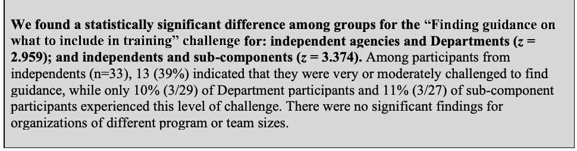
「トレーニングに何を含めるかに関するガイダンスを見つけること」という課題については、独立機関と省庁の間（z = 2.959）、および独立機関と下位組織の間（z = 3.374）で、グループ間に統計的に有意な差が見られました。独立機関の参加者（n=33）では13人（39%）がガイダンスを見つけることが非常にまたはある程度困難だと答えたのに対し、省庁の参加者でこのレベルの困難を感じたのは10%（3/29）、下位組織の参加者では11%（3/27）にとどまりました。プログラムやチームの規模が異なる組織については、有意な結果はありませんでした。
Several focus group participants commented on their desire to have more standard guidance on training:
フォーカスグループの参加者数人は、トレーニングに関するより標準的なガイダンスを望むとコメントしました。
“There are no best practices or organizational change management around this program. Agencies are left to their own means to do the best they can to implement this requirement.” (N04)
「このプログラムに関するベストプラクティスも、組織変革管理もありません。各機関は、この要件を実装するために、自力で最善を尽くすしかありません。」（N04）
“How long does the course have to be? Does it have to be specific?...We’ve asked for that guidance on a consistent basis, but all we have is the general guidance to pass down.” (S04)
「コースの長さはどれくらいにすべきか。具体的でなければならないのか。…そのガイダンスを一貫して求めてきましたが、あるのは下に伝えるべき一般的なガイダンスだけです。」（S04）
Updating required security awareness training content: Updates to required training were viewed as very/moderately challenging by 26% of survey participants.
必須のセキュリティ意識向上トレーニングのコンテンツを更新すること: 必須トレーニングの更新が非常にまたはある程度困難だと見なした調査参加者は26%でした。
グループ間に統計的に有意な差は見られませんでした。
Participants commented on their challenges:
参加者は、自らの課題についてコメントしました。
“More frequent updates to online CBT [computer-based training]. Some courses are dated and ‘corny’ – this doesn't represent the organization well as some CBT seems a little gimmicky bordering on childish.” (Q38)
「オンラインの CBT［コンピュータベースのトレーニング］をもっと頻繁に更新してほしい。コースの中には古くて『ダサい』ものがあり、CBT によっては少し子供じみた見せかけに近いものもあって、これは組織の印象を良くしません。」（Q38）
“Every year there are certain things that you have to keep telling people over and over. So, to a certain extent, for me, the training is going to be somewhat the same year after year because I have to cover these areas…There’s a lot to cover in that one hour and to make it relevant is always a challenge every year.” (N11)
「毎年、何度も伝え続けなければならないことがあります。ですから、ある程度は、扱うべき領域がある以上、トレーニングは毎年ほぼ同じようなものになります。…その1時間の中で扱うことは多く、それを関連性のあるものにすることは、毎年変わらず課題です。」（N11）
In the focus groups, challenges with training updates were often linked to a lack of resources, especially for smaller security awareness teams:
フォーカスグループでは、トレーニングの更新に関する課題は、特に小規模なセキュリティ意識向上チームでは、リソースの不足と結び付けて語られることが多くありました。
“We don't really have the resources to develop our own [sub-component] or Department-specific content every year, keep it up to date.” (D04)
「［下位組織］または省庁固有のコンテンツを毎年自力で開発し、最新の状態に保つためのリソースは、実際にはありません。」（D04）
3.2 Other Security Awareness Activities
3.2 その他のセキュリティ意識向上活動
In addition to the required security awareness training, programs may distribute information to their workforce throughout the year via a variety of means and communication channels. We sought to discover which approaches organizations take and what topics are covered.
必須のセキュリティ意識向上トレーニングに加えて、プログラムは、さまざまな手段とコミュニケーションチャネルを通じて、年間を通じて従業員に情報を配布している場合があります。私たちは、組織がどのようなアプローチをとっているか、どのようなトピックを扱っているかを明らかにしようとしました。
3.2.1 Number of Additional Activities
3.2.1 追加活動の数
We asked participants how many other security awareness activities or events their organizations offered per year in addition to required annual training (see Figure 6). Twenty-one percent had no additional activities, 43% had only one or two additional security awareness activities, and 24% had four or more activities.
年次の必須トレーニングに加えて、自組織が年間にその他のセキュリティ意識向上活動またはイベントをいくつ提供しているかを参加者に尋ねました（図 6 を参照）。21%は追加の活動がなく、43%は追加のセキュリティ意識向上活動が1つまたは2つだけで、24%は4つ以上の活動がありました。
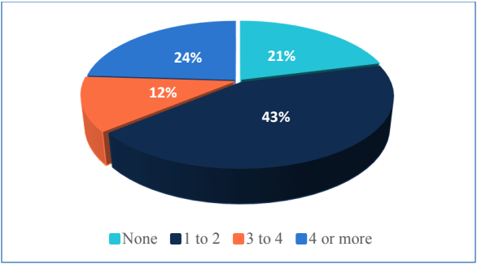
凡例付きの立体円グラフです。「なし」21%、「1～2」43%、「3～4」12%、「4以上」24%。
Figure 6: Number of additional security awareness activities or events (n=86)
図 6: 追加のセキュリティ意識向上活動またはイベントの数（n=86）
There was a statistically significant difference in the number of additional security awareness activities offered by programs of the following sizes: small and large (z = -2.039); small and very large (z = -3.266); and medium and very large (z = -2.482). In organizations with small program coverage (n = 18), 44% had no additional activities beyond the required annual security awareness training and 39% had 1-2 additional activities. Among those with medium program sizes (n = 22), 27% had no additional activities and 45% had 1-2 activities. This was in contrast to very large programs (n = 22) in which only one had no additional activities and 59% had three or more activities.
原本PDFの抜粋画像
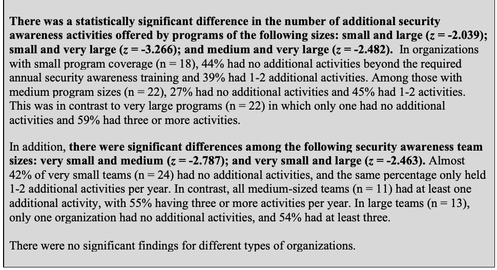
プログラムの規模が次の組み合わせの場合、提供される追加のセキュリティ意識向上活動の数に統計的に有意な差がありました。小規模と大規模（z = -2.039）、小規模と特大規模（z = -3.266）、中規模と特大規模（z = -2.482）です。プログラムの対象範囲が小さい組織（n = 18）では、44%に年次の必須セキュリティ意識向上トレーニング以外の追加活動がなく、39%が追加活動を1～2件行っていました。プログラムの規模が中程度の組織（n = 22）では、27%に追加活動がなく、45%が1～2件の活動を行っていました。これに対し、特大規模のプログラム（n = 22）では、追加活動がなかったのは1件のみで、59%が3件以上の活動を行っていました。
In addition, there were significant differences among the following security awareness team sizes: very small and medium (z = -2.787); and very small and large (z = -2.463). Almost 42% of very small teams (n = 24) had no additional activities, and the same percentage only held 1-2 additional activities per year. In contrast, all medium-sized teams (n = 11) had at least one additional activity, with 55% having three or more activities per year. In large teams (n = 13), only one organization had no additional activities, and 54% had at least three.
さらに、次のセキュリティ意識向上チームの規模の間にも有意な差がありました。極小と中（z = -2.787）、極小と大（z = -2.463）です。極小のチーム（n = 24）の約42%は追加の活動がなく、同じ割合が年間の追加の活動を1〜2件に限っていました。これに対し、中規模のチーム（n = 11）はすべて少なくとも1件の追加の活動を行っており、55%は年間3件以上でした。大規模なチーム（n = 13）では、追加の活動がなかった組織は1つだけで、54%が少なくとも3件を行っていました。
There were no significant findings for different types of organizations.
組織の種類の違いについては、有意な結果はありませんでした。
Focus group participants commented on the importance of distributing information multiple ways throughout the year, not just during the annual required training:
フォーカスグループの参加者は、年次の必須トレーニングのときだけでなく、年間を通じて複数の方法で情報を配布することの重要性についてコメントしました。
“That's generally our approach in terms of general awareness, just trying to keep the message out there all the time in front of the employees.” (D01)
「一般的な意識向上という点では、これが基本的なアプローチです。メッセージを常に従業員の目の前に出し続けるようにしています。」（D01）
“Don't just rely on that one or that core set of the security awareness trainings or material, have some other awareness campaigns that go on throughout the year just to try and keep it at the forefront of everybody's mind.” (S01)
「セキュリティ意識向上トレーニングや資料の1つ、または中核となる一連のものだけに頼るのではなく、年間を通じて他の意識向上キャンペーンも行い、誰もが常に意識できるようにしてください。」（S01）
“A standard or more guidance on the frequency of communication throughout the year would be really good. Sometimes, executive leadership really wants to limit the awareness training to that one hour at a lot of agencies, and it really needs to be more than that throughout the year…It could be different types of awareness activities throughout the year just to keep the concept fresh in your user's mind throughout the year and not just once a year.” (D06)
「年間を通じたコミュニケーションの頻度に関する標準やガイダンスがあれば、本当に助かります。多くの機関では、経営幹部が意識向上トレーニングをその1時間だけに限りたがることがありますが、年間を通じてそれ以上のことが本当に必要です。…ユーザーの意識の中で概念を新鮮に保てるよう、年1回だけでなく、年間を通じてさまざまな種類の意識向上活動を行うことができます。」（D06）
3.2.2 Communication Channels
3.2.2 コミュニケーションチャネル
Participants indicated how their organizations communicate and disseminate security awareness information. Figure 7 shows the frequencies of communication methods. Online, computer-based methods (89%) and email (84%) were the most popular methods. Over half used newsletters (55%) or websites (51%) to disseminate information. Less than a third made use of videos, pamphlets/handouts, activity fairs, or escape rooms.
参加者は、自組織がセキュリティ意識向上の情報をどのように伝達・配布しているかを答えました。図 7 は、コミュニケーション方法の頻度を示しています。オンラインのコンピュータベースの方法（89%）と電子メール（84%）が最も多く用いられていました。半数を超える組織が、情報の配布にニュースレター（55%）またはウェブサイト（51%）を使っていました。動画、パンフレット／配布物、アクティビティフェア、脱出ゲームを使っていたのは3分の1未満でした。
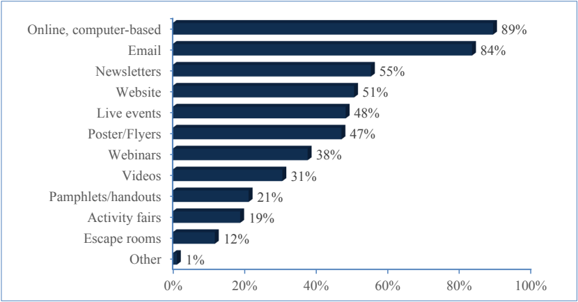
横棒グラフです。「オンライン、コンピュータベース」89%、「電子メール」84%、「ニュースレター」55%、「ウェブサイト」51%、「ライブイベント」48%、「ポスター／チラシ」47%、「ウェビナー」38%、「動画」31%、「パンフレット／配布資料」21%、「アクティビティフェア」19%、「脱出ゲーム」12%、「その他」1%。横軸は0%から100%までです。
Figure 7: Security awareness communication channels (n=85)
図 7: セキュリティ意識向上のコミュニケーションチャネル（n=85）
Participants provided more detail on the types of activities their organizations held, ranging from live events for the whole workforce to activities targeted at specific groups within the organization:
参加者は、組織が行った活動の種類について、従業員全体向けのライブイベントから、組織内の特定のグループを対象とする活動まで、さらに詳しく説明しました。
“We now do monthly cybersecurity brown bags where we talk on a cybersecurity topic.” (N06)
「現在は、サイバーセキュリティのトピックについて話す、月1回のサイバーセキュリティ・ブラウンバッグ（昼食を持ち寄る勉強会）を行っています。」（N06）
“Before the pandemic, we were organizing more events in person, some expos and things that were more fun for users that could count toward things like specialized training but would not replace the general training. And after COVID, we've already had one expo that was virtual which went over really well and was fun, I think, for anyone that wanted to participate in our organization…It includes speakers, it includes forums or maybe panelists.” (S05)
「パンデミックの前は、専門的なトレーニングとして数えられるものの、一般的なトレーニングの代わりにはならない、ユーザーにとってもっと楽しい対面のイベントや展示会などを多く開催していました。COVID の後は、すでに仮想の展示会を1回開催しており、これは非常に好評で、当組織で参加したい人にとって楽しいものだったと思います。…講演者や、フォーラム、パネリストなどが含まれます。」（S05）
“Smaller events or a large kind of instructor-led event to really heighten users’ awareness of various topics relative to security and now in privacy as well.” (S11)
「セキュリティ、そして今ではプライバシーに関するさまざまなトピックについてユーザーの意識を大いに高めるための、小規模なイベントや大規模な講師主導型イベント」（S11）
“Our monthly webinars where…users could come in and have an in-person discussion about the awareness topic. Or they could join virtually…and participate and ask questions on the particular cybersecurity awareness topic.” (D06)
「毎月のウェビナーでは、…ユーザーは来場して意識向上のトピックについて対面で議論できます。または、オンラインで参加し…その特定のサイバーセキュリティ意識向上のトピックについて、議論に加わったり質問したりできます。」（D06）
“We hold an annual cybersecurity awareness symposium. Usually, it's been a two-day event where we've had breakout sessions that are individualized focused areas within cybersecurity as well as generalized cybersecurity awareness. And sometimes we'll offer vendors to come in and speak, and then other times it's federal employees.” (D04).
「毎年、サイバーセキュリティ意識向上のシンポジウムを開催しています。通常は2日間のイベントで、サイバーセキュリティ全般の意識向上に加え、サイバーセキュリティの中の個別の重点分野を扱う分科会を設けています。ベンダーに来て講演してもらうこともあれば、連邦職員が講演する場合もあります。」（D04）
“We do a regional office training. We try to hit all of the regional offices at least every two years. And during that time, we will tour the workspaces, meet with IT specialists, conduct manager forums to conduct privacy and security programs' requirements.” (N12)
「地方事務所向けのトレーニングを行っています。少なくとも2年ごとに、すべての地方事務所を回るようにしています。その間に、職場を見て回り、IT専門家と面会し、プライバシーおよびセキュリティプログラムの要件について話し合う管理職向けフォーラムを開催します。」（N12）
Participants were particularly enthusiastic about interactive approaches to imparting security awareness information:
参加者は、セキュリティ意識向上の情報を伝えるための対話型のアプローチに、特に熱心でした。
“Each quarter we have a security awareness activity, whether it's a virtual scavenger hunt, or last month we had a speed dial where they had to send in an email once they found a certain item, it’s in what policy, and tell us what page it was on.” (N05)
「四半期ごとにセキュリティ意識向上の活動を行っています。バーチャルな宝探しのこともあれば、先月のように「スピードダイヤル」を行うこともあります。これは、特定の項目を見つけたら、それがどの方針のどのページにあるかをメールで送ってもらうものです。」（N05）
“We have done the escape rooms. So, they did some in person before the pandemic, but we've done the virtual escape rooms, which I thought were fun and one of the most fun educational approaches that I've noticed so far using our modern technology to deliver more of a game experience.” (S05)
「脱出ゲームを行いました。パンデミックの前に対面で行ったものもありましたが、バーチャルの脱出ゲームも行いました。これは楽しく、現代の技術を使ってゲーム体験をより多く提供するという点で、これまで気づいた中で最も楽しい教育的アプローチの一つだと思いました。」（S05）
Other organizations put out quick tips using various communication avenues:
さまざまなコミュニケーション手段で、短いヒントを発信している組織もあります。
“What we have done is try to inform our community of how important it is for them to understand cybersecurity and to take the training by using splash screens when they first log on.” (S03)
「私たちがしてきたのは、最初にログオンしたときにスプラッシュ画面を使って、サイバーセキュリティを理解し、トレーニングを受けることがいかに重要かをコミュニティに知らせることです。」（S03）
“Short, quick-hitting, videos and audio work the best. Nothing exceeds 15 minutes and most are 5 minutes or less. On demand streaming!” (Q58)
「短くて要点を突いた動画や音声が最も効果的です。15分を超えるものはなく、ほとんどは5分以内です。オンデマンドのストリーミングです。」（Q58）
“We also prepare biweekly tips. That's every other week. And these are tips that are sent to [agency groups] and they can display it on their electronic bulletins …And these tips are very short. They're only like one or two sentences just to kind of catch the eye and remind people that they need to be diligent and watch out for certain things.” (N09)
「隔週でヒントも用意しています。2週に1回です。これらのヒントは［機関内のグループ］に送られ、グループの電子掲示板に表示できます。…ヒントはとても短く、1〜2文だけで、目を引き、注意を怠らず特定のことに気を付ける必要があると思い出してもらうためのものです。」（N09）
Organizations often held events or sent out additional communications during the month of October, which has been designated as Cybersecurity Awareness Month (previously called National Cybersecurity Awareness Month) [CISA].
サイバーセキュリティ意識向上月間（以前はNational Cybersecurity Awareness Monthと呼ばれていました）として指定されている10月には、組織がイベントを開催したり、追加の情報を発信したりすることがよくありました [CISA]。
“We have our annual Cybersecurity Awareness Month program every October. This year, we were able to do that online, but we usually have a live program.” (N09)
「毎年10月にサイバーセキュリティ意識向上月間のプログラムを実施しています。今年はオンラインで行うことができましたが、通常はライブのプログラムです。」（N09）
“This past year, we created a little trivia game that we incorporated in our weekly tips that we send out to the enterprise. What we do is use the theme that's pushed out by, I think it's DHS [for Cybersecurity Awareness Month], for the whole month. Each week we center the broadcast on the theme and then we included the trivia game link where they get questions, and the more questions they get right, they get a little message at the end that they basically were cyber gurus or cyber ninjas or whatever the term we would do for that week to show that they were successful in answering the questions correctly.” (S02)
「昨年は、エンタープライズ全体に送る毎週のヒントに組み込む、ちょっとしたクイズゲームを作りました。月間を通じて、おそらくDHS［サイバーセキュリティ意識向上月間］が発信するテーマを使っています。毎週、そのテーマを中心に情報を配信し、クイズゲームへのリンクも付けました。クイズに答え、正解数が多いほど、最後に小さなメッセージが表示されます。その週に使う呼び名が何であれ、サイバーの達人やサイバー忍者などとして、正しく回答できたことを示すメッセージです。」（S02）
We also calculated the total number of communication channels used by participants’ programs. Figure 8 shows the percentages. Only 7% disseminated security awareness information in just one way, with the largest percentage (41%) utilizing 2 - 4 methods and 22% using eight or more methods.
参加者のプログラムが用いているコミュニケーションチャネルの総数も算出しました。図 8 に割合を示します。セキュリティ意識向上の情報を1つの方法だけで配布していたのは7%にとどまり、最も多いのは2〜4つの方法を用いる41%で、8つ以上の方法を用いるのは22%でした。
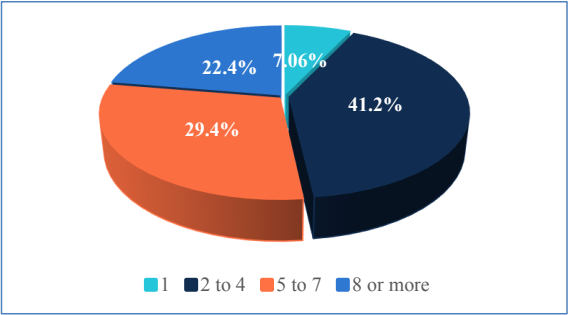
凡例付きの立体円グラフです。「1」7.06%、「2～4」41.2%、「5～7」29.4%、「8以上」22.4%。
Figure 8: Number of security awareness communication channels (n=85)
図 8: セキュリティ意識向上のコミュニケーションチャネルの数（n=85）
We found statistically significant differences for the number of dissemination methods between small and very large programs (z = -2.792), with 72% of small programs (n = 18) and only 27% of very large programs (n = 22) disseminating information in four or fewer ways.
原本PDFの抜粋画像
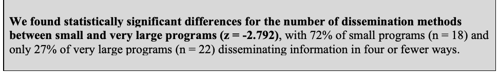
配布方法の数については、小規模なプログラムと特大のプログラムの間に統計的に有意な差が見られ（z = -2.792）、4つ以下の方法で情報を配布していたのは、小規模なプログラム（n = 18）の72%に対し、特大のプログラム（n = 22）では27%にとどまりました。
While using multiple communication channels was encouraged, participants acknowledged that distributing too much information could be counterproductive:
複数のコミュニケーションチャネルを使うことは推奨されていましたが、参加者は、情報を配布しすぎると逆効果になりうることを認めていました。
“In the role of CISO, I'm very hesitant to bombard people with a lot of information because I don't want them to ignore me when I need them to pay attention. So, I try to be very selective about what information I'm providing and how often that information gets provided.” (N10)
「CISO の立場としては、注意を向けてほしいときに無視されたくないので、人々に大量の情報を浴びせることには非常に慎重です。そのため、どのような情報を、どのくらいの頻度で提供するかを、非常に慎重に選ぶようにしています。」（N10）
“Balancing communications to keep people aware without kind of coming off as spam by producing too much material, which can get to a point where nobody's even reading it anymore.” (D03)
「資料を出しすぎてスパムのように見えないようにしながら、人々の意識を保てるよう、コミュニケーションのバランスを取ることです。出しすぎると、誰も読まなくなる段階に至ってしまいます。」（D03）
“Our big fear is that people will throw our − and we've seen it − that if we send too many notifications and stuff, they send it to either a junk box or they send it to a mailbox they never look at.” (N07)
「私たちが最も恐れているのは、通知などを送りすぎると、人々が通知を迷惑メール用のフォルダーに入れたり、決して見ないメールボックスに送ったりすることです。実際にそうなるのを見てきました。」（N07）
3.3 Topics
3.3 トピック
Participants indicated topics that their security awareness programs addressed via training courses, events, or other communications in the past 1 - 2 years. Figure 9 shows the security awareness topics and percentages of programs addressing those topics. All participants’ programs covered the topic of social engineering, and over 90% addressed passwords and authentication, malware, and privacy topics. Security considerations when installing or updating software was the least covered topic but still addressed by 64% of programs.
参加者は、過去1〜2年に、セキュリティ意識向上プログラムがトレーニングコース、イベント、その他のコミュニケーションを通じて取り上げたトピックを回答しました。図 9 は、セキュリティ意識向上のトピックと、それらのトピックを取り上げたプログラムの割合を示しています。すべての参加者のプログラムがソーシャルエンジニアリングを取り上げており、90%超がパスワードと認証、マルウェア、プライバシーのトピックを取り上げていました。ソフトウェアのインストールまたは更新時のセキュリティ上の考慮事項は、取り上げた割合が最も低いトピックでしたが、それでも64%のプログラムが取り上げていました。
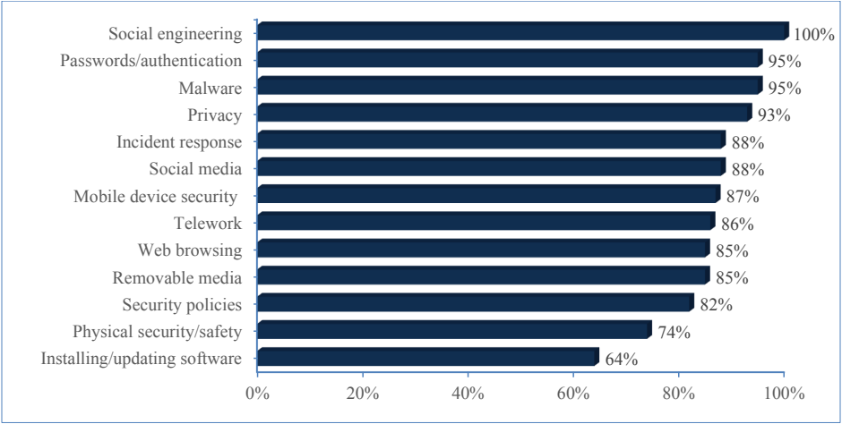
横棒グラフです。「ソーシャルエンジニアリング」100%、「パスワード／認証」95%、「マルウェア」95%、「プライバシー」93%、「インシデント対応」88%、「ソーシャルメディア」88%、「モバイルデバイスのセキュリティ」87%、「テレワーク」86%、「ウェブ閲覧」85%、「リムーバブルメディア」85%、「セキュリティポリシー」82%、「物理的セキュリティ／安全」74%、「ソフトウェアのインストール／更新」64%。横軸は0%から100%までです。
Figure 9: Security awareness topics (n=85)
図 9: セキュリティ意識向上のトピック（n=85）
We also wanted to know how often the participant’s security awareness program provided information applicable to their employees’ personal or home lives. Figure 10 shows the response results. Seventeen percent never or rarely provide topics that are applicable to employees’ personal or home lives. Forty-one percent provide it a moderate amount or a great deal.
また、参加者のセキュリティ意識向上プログラムが、従業員の私生活や家庭生活に当てはまる情報をどの程度提供しているかも知りたいと考えました。図 10 に回答結果を示します。従業員の私生活や家庭生活に当てはまる情報をまったく、またはほとんど提供していないプログラムは17%でした。ある程度、または大いに提供しているプログラムは41%でした。
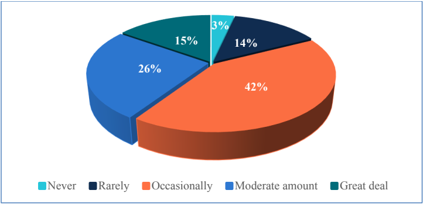
凡例付きの立体の円グラフです。「Never」3%、「Rarely」14%、「Occasionally」42%、「Moderate amount」26%、「Great deal」15%。
Figure 10: Frequency with which security awareness programs provide information applicable to employees’ personal lives (n=86)
図 10: セキュリティ意識向上プログラムが従業員の私生活にも当てはまる情報を提供する頻度（n=86）
As observed in participants’ open-ended responses, making a work-home connection was viewed as essential for habituating good security choices no matter where people are or what they’re doing. When asked what advice they have for making programs successful, several survey participants mentioned the work-home connection:
参加者の自由回答に見られたように、仕事と家庭を結び付けることは、人々がどこにいても何をしていても、適切なセキュリティ上の選択を習慣化するうえで不可欠だと考えられていました。プログラムを成功させるためのアドバイスを尋ねられた際、調査参加者数人が仕事と家庭の結び付きに言及しました。
“Use examples that the employees are likely to encounter in their daily work and personal experiences.” (Q42)
「従業員が日々の仕事や私生活で遭遇する可能性が高い例を使ってください。」（Q42）
“Get out of generic advice filled with platitudes and focus on specific activities that help employees in their daily lives (home and work).” (Q29)
「決まり文句ばかりの一般的なアドバイスはやめて、従業員の日常生活（家庭と仕事）に役立つ具体的な活動に焦点を当ててください。」（Q29）
“The most successful aspect of our security awareness program is the positive feedback that we receive from staff stating that the information provided also helps them in their personal lives. This makes us feel as though we are serving a dual purpose with the security awareness information that we are providing to those within our agency.” (Q32)
「当組織のセキュリティ意識向上プログラムで最も成功している点は、提供した情報が私生活にも役立っているという、職員からの好意的なフィードバックです。これにより、機関内の人々に提供しているセキュリティ意識向上の情報が、二重の目的を果たしていると感じられます。」（Q32）
“Start by focusing on helping people secure what they care about (such as their kids online) so they start developing awareness that they bring back to the office.” (Q50)
「まず、人々が大切にしているもの（たとえば、子供のオンライン利用）を守る手助けに焦点を当ててください。そうすれば、職場に持ち帰ることのできる意識が育ち始めます。」（Q50）
Focus group participants also discussed their efforts to integrate security information that could help employees in both their work and personal lives:
フォーカスグループの参加者も、従業員の仕事と私生活の両方に役立つ可能性のあるセキュリティ情報を組み込む取り組みについて話しました。
“We educate our end-users from a holistic perspective. It doesn't just touch your work life, it touches your personal lives as well. So, making sure that you have secured all of your devices, whether it's work or personal or your at-home computer. We also did some education around internet safety with kids and teenagers during our National Cybersecurity Awareness Month.” (N04)
「エンドユーザーには、包括的な観点から教育しています。仕事上の生活だけでなく、私生活にも関わることです。ですから、仕事用でも個人用でも自宅のコンピュータでも、すべてのデバイスを保護しているかを確認します。国家サイバーセキュリティ意識向上月間中には、子供や十代の若者のインターネットの安全に関する教育も行いました。」（N04）
“Especially with the times that we're in now, a lot of people are working from home constantly. So, we try to educate our users on how to help their families and stuff using the internet from home and your work computers from home.” (N02)
「特に今のような時期は、多くの人が常に在宅で働いています。そのため、ユーザーが自宅からインターネットや仕事用のコンピュータを使って家族を支援する方法について教育するようにしています。」（N02）
“In my mind, security awareness, it's not just about being educated. It is about actually creating a lifestyle, changing their mindset in your practices and your behaviors. And the only way, in my opinion, that that can happen is if I make it relevant, if I make what I'm telling you relevant to your everyday life, in meeting you where you're at. So, if I can't meet you where you're at, then I don't feel as if I'm doing an effective job.” (N10)
「私の考えでは、セキュリティ意識向上は、教育を受けることだけではありません。実際にライフスタイルを築き、実践や行動における考え方を変えることです。そして、それが起こりうる唯一の方法は、私が伝えることをあなたの日常生活に関連したものにし、あなたの状況に合わせることだと思います。あなたの状況に合わせられないなら、効果的な仕事をしているとは思えません。」（N10）
3.4 Phishing Simulations
3.4 フィッシングのシミュレーション
We asked participants if their organizations perform phishing simulations (sometimes called phishing exercises) in which employees receive fake phishing emails to teach them to recognize characteristics of actual phishing attacks. As Figure 11 shows, the majority of participant organizations (just over 85%) perform some type of phishing simulation.
従業員に偽のフィッシングメールを送り、実際のフィッシング攻撃の特徴を認識できるよう教えるフィッシングのシミュレーション（フィッシング演習と呼ばれることもあります）を、参加者の組織が実施しているかを尋ねました。図 11 のとおり、参加者の組織の大多数（85%強）が、何らかの種類のフィッシングのシミュレーションを実施しています。
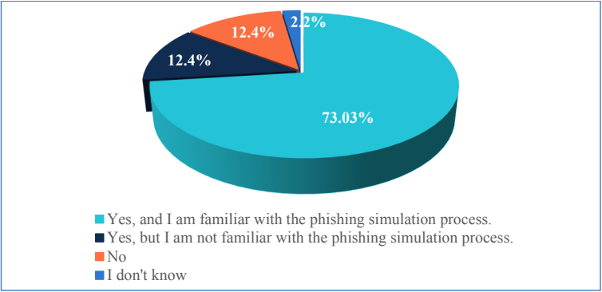
凡例付きの立体の円グラフです。「Yes, and I am familiar with the phishing simulation process.」73.03%、「Yes, but I am not familiar with the phishing simulation process.」12.4%、「No」12.4%、「I don't know」2.2%。
Figure 11: Organizations performing phishing simulations (n=89)
図 11: フィッシングのシミュレーションを実施している組織（n=89）
Participants provided more detail on their phishing simulations:
参加者は、フィッシングのシミュレーションについて、さらに詳しく説明しました。
“We are also doing phishing exercises. They are targeted phishing exercises, and we do report them on by clicks, and they are even broken down reported by organization and what area within the agency.” (N02)
「フィッシング演習も行っています。標的型のフィッシング演習で、クリックに基づいて報告結果を集計しており、組織別、機関内の部門別にも内訳を出して報告しています。」（N02）
“We also carry out the simulated spear phishing exercises to kind of gather data on how the Department is taking the phishing training and whether they're carrying that out.” (D03)
「省庁がフィッシングトレーニングをどう受け止め、それを実践しているかのデータを集めるために、模擬のスピアフィッシング演習も実施しています。」（D03）
“Since it has been on the annual FISMA report for the last several years now, we do phishing exercises, and it's really been a fairly recent activity.” (D05)
「ここ数年、年次の FISMA 報告書に含まれているため、フィッシング演習を実施していますが、これはごく最近始めた活動です。」（D05）
Participant quotes also provide insight about the intent of phishing simulations within organizations, including identification of a phishing email and subsequent reporting:
参加者の引用は、フィッシングメールの識別とその後の報告を含め、組織内でのフィッシングのシミュレーションの意図についての洞察も与えてくれます。
“Detection of phishing emails needs to become ordinary not extraordinary.” (Q61)
「フィッシングメールの検知は、特別なことではなく、当たり前のことにならなければなりません。」（Q61）
“What we also tried to get our employees aware of, that not only should you not click on the link, but you should also report it so that if it is a real phishing exercise, those that are responsible for looking into it and investigating are aware of it. So, we've gotten more tickets open based off of our phishing exercises, which is more participation and awareness that we've been able to determine from those exercises that we are putting out.” (S02)
「私たちが従業員に意識してもらおうとしているのは、リンクをクリックしてはならないだけでなく、報告もすべきだということです。そうすれば、それが本物のフィッシングである場合に、調査を担当する者がそれを把握できます。実際に、フィッシング演習をきっかけに開かれるチケットが増えました。これは、私たちが実施している演習から確認できた、参加と意識の高まりです。」（S02）
“We'll see an uptick in who reports what they don't know to be the phishing exercise to our security operations center. But it also depends on the topic and how clever the email is, too. So, the more clever, more relevantly tied to what resources they may currently be using at the Department, we may see more people get caught. But we do see where people do begin to recognize a little bit more and actually report it, which is what we also want to train.” (D04)
「フィッシング演習だと知らずにセキュリティオペレーションセンターへ報告する人が増えるでしょう。ただし、トピックやメールの巧妙さにも左右されます。より巧妙で、省庁で現在使っているリソースにより関連したメールほど、引っかかる人が増える場合があります。それでも、人々が少しずつ見分けられるようになり、実際に報告し始めていることは分かります。それこそ私たちが訓練したいことでもあります。」（D04）
Some organizations provide a reporting button within the email application to make it easy for employees to report suspected phishing emails:
従業員が不審なフィッシングメールを簡単に報告できるように、電子メールアプリケーション内に報告ボタンを用意している組織もあります。
“Part of the phishing program is the ability to report, and this year we were able to add a report phishing button so users could actually report the phishing exercises with just a click as opposed to having to send an email, and we saw phishing reporting rise. It was just overwhelming adding that technology. That has worked very well in terms of engaging employees. I would say that that's probably the area where we've seen the biggest increase.” (D01)
「フィッシングプログラムの一部は報告機能です。今年はフィッシング報告ボタンを追加できたため、ユーザーはメールを送る必要なく、クリック1回でフィッシング演習を報告できるようになり、フィッシングの報告が増えました。この技術を導入した効果は非常に大きく、従業員の関与を促すうえで非常にうまく機能しました。最も大きな増加が見られた分野は、おそらくここだと思います。」（D01）
“We've added a reporter button. So when they see that email, they just click it, and it goes straight to the service desk. And that has definitely helped our numbers go up with the reporting aspect of the phishing emails.” (N02)
「報告ボタンを追加しました。そのメールを見たときにクリックするだけで、サービスデスクに直接届きます。これは、フィッシングメールの報告件数を確実に増やすのに役立ちました。」（N02）
“Make it easy to check/mark spam and report questionable issues.” (Q33)
「スパムを確認してマークし、不審なメールを報告しやすくしてください。」（Q33）
Overall, phishing simulations were often viewed as one of the most successful aspects of security awareness programs:
全体として、フィッシングのシミュレーションは、セキュリティ意識向上プログラムの最も成功した側面の一つと見なされることが多くありました。
“I would say that the ethical phishing program is going really well. It took some time to get the buy-in of leadership to launch some of the tougher scenarios, but the users are getting it. The users are reporting the emails and recognizing them, and the susceptibility rate is going down really low.” (D06)
「倫理的なフィッシングプログラムは非常にうまくいっていると思います。より難しいシナリオを開始するために経営層の賛同を得るのに少し時間がかかりましたが、ユーザーは理解しつつあります。ユーザーはメールを報告し、それがフィッシングだと認識するようになり、引っかかる割合は非常に低くなっています。」（D06）
“And one thing that's come out in this talk is how important each of our phishing programs are to our awareness training program. So, if we had this conversation maybe three years ago, we wouldn't be talking about the phishing programs as much. But because that's such an area where people are most susceptible and most able to have our agencies compromised, that's become very important.” (D01)
「この議論で浮かび上がってきたことの一つは、私たち各々のフィッシングプログラムが、意識向上トレーニングプログラムにとっていかに重要かということです。3年前にこの話し合いをしていたら、フィッシングプログラムについてこれほど話していなかったでしょう。しかし、そこは人々が最も引っかかりやすく、機関が侵害される可能性が最も高い領域であるため、非常に重要になりました。」（D01）
“Over the past 2 years, we've seen a drop in our phishing click-thru rates likely because of our increase in phishing simulations.” (Q37)
「過去2年間で、フィッシングメールのクリックスルー率が低下しました。おそらく、フィッシングのシミュレーションを増やしたためです。」（Q37）
“One thing that's worked pretty well is the phishing exercise program that we introduced a few years ago. We actually used an open-source and borrowed the customizations from another agency and deployed it, basically, at very minimal cost.” (D05)
「かなりうまくいっていることの一つが、数年前に導入したフィッシング演習プログラムです。実際にはオープンソースを使い、他の機関のカスタマイズを借りて展開しましたので、基本的にごくわずかな費用で済みました。」（D05）
Participants who indicated that their organization had a phishing program with which they were familiar were then asked a series of follow-up questions about the program, with responses described next.
自組織にフィッシングプログラムがあり、それを把握していると答えた参加者には、続けてプログラムに関する一連のフォローアップ質問をしました。その回答を次に説明します。
3.4.1 Frequency of phishing simulations
3.4.1 フィッシングのシミュレーションの頻度
Participants indicated how often their organizations conducted phishing simulations. As seen in Figure 12, 75% conduct phishing simulations either monthly or quarterly, while just under 5% of organizations conduct simulations more frequently than once per month.
参加者は、自組織がフィッシングのシミュレーションをどのくらいの頻度で実施しているかを回答しました。図 12 のとおり、75%は毎月または四半期ごとにフィッシングのシミュレーションを実施しており、月1回より高い頻度で実施している組織は5%弱でした。
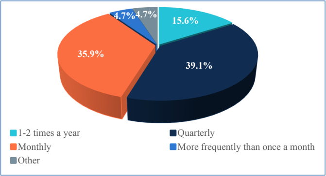
凡例付きの立体円グラフです。「年に1～2回」15.6%、「四半期ごと」39.1%、「毎月」35.9%、「月に1回より多い頻度」4.7%、「その他」4.7%。
Figure 12: Phishing simulation frequency (n=64)
図 12: フィッシングのシミュレーションの頻度（n=64）
We found significant differences in the frequency of phishing simulations based on program size, specifically between small and very large organizations (z = -2.208) and medium and very large organization (z = -2.726). Among very large programs, 50% conducted phishing simulations at least monthly, as compared to small programs with 33% and medium with 20%. There were no significant findings for organizations of different types or team sizes.
原本PDFの抜粋画像
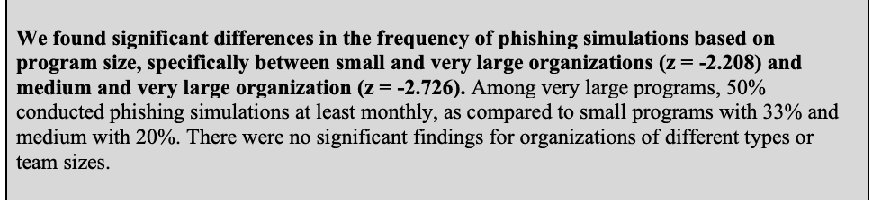
フィッシングのシミュレーションの頻度には、プログラムの規模に基づく有意な差が見られ、具体的には、小規模な組織と特大の組織の間（z = -2.208）、および中規模の組織と特大の組織の間（z = -2.726）でした。特大のプログラムでは50%が少なくとも月1回フィッシングのシミュレーションを実施していたのに対し、小規模なプログラムでは33%、中規模では20%でした。組織の種類やチームの規模が異なる組織については、有意な結果はありませんでした。
Focus group participants commented on the frequency of their phishing exercises, most often monthly or quarterly:
フォーカスグループの参加者は、フィッシング演習の頻度についてコメントし、最も多いのは毎月または四半期ごとでした。
“We do quarterly phishing tests as well. And we just select an audience, maybe rotate around the foundation or a group of people and put together phishing emails together and we send them.” (N11)
「フィッシングテストも四半期ごとに行っています。対象者を選び、財団や人々のグループを順番に回して、フィッシングメールをまとめて作成し、送信します。」（N11）
“We do that [phishing exercises] on a regular monthly basis to a subset of our employee population.” (D05)
「［フィッシング演習は］従業員の一部を対象に、毎月定期的に行っています。」（D05）
“Phishing entire workforce with email access…monthly” (Q61)
「電子メールを使える全従業員を対象に、毎月フィッシング演習を実施」（Q61）
3.4.2 Handling Repeat Clickers
3.4.2 繰り返しクリックする人への対処
We also asked participants what happens to repeat clickers in their organization (those who repeatedly fall victim to phishing). Participants selected all options that applied. Figure 13 shows the percentages for each response option. In 41% of organizations, repeat clickers had to complete additional training, and 26% notified clickers’ supervisors. However, in 8% of organizations, nothing is done at all for repeat clickers.
自組織で繰り返しクリックする人（繰り返しフィッシングの被害に遭う人）に何が起きるかも、参加者に尋ねました。参加者は該当するすべての選択肢を選びました。図 13 に各回答の割合を示します。41%の組織では、繰り返しクリックした人に追加のトレーニングの修了が求められ、26%はクリックした人の上司に通知していました。しかし、8%の組織では、繰り返しクリックする人に対して何も行われていません。
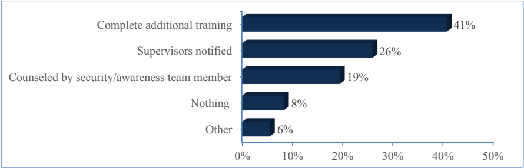
横棒グラフです。「追加のトレーニングを完了」41%、「上司に通知」26%、「セキュリティ／意識向上チームのメンバーによるカウンセリング」19%、「何もしない」8%、「その他」6%。横軸は0%から50%です。
Figure 13: Repeat clicker consequences (n=64)
図 13: 繰り返しクリックした人への措置（n=64）
In many organizations, repeat clickers are assigned additional training:
多くの組織では、繰り返しクリックする人に追加のトレーニングが割り当てられます。
“Part of those phishing exercises we also have a policy for behavioral escalation based on whether or not employees pass or fail those exercises. When employees exhibit unacceptable behavior, they have to take more training.” (D01)
「こうしたフィッシング演習の一環として、従業員が演習に合格したか不合格だったかに応じて、行動面で段階的に対応する方針もあります。従業員が許容できない行動を示した場合は、さらにトレーニングを受けなければなりません。」（D01）
“If there is a repeat offender when it comes to phishing exercises, we do assign them refresher training.” (N04)
「フィッシング演習で繰り返し違反する人がいれば、復習用のトレーニングを割り当てます。」（N04）
Some organizations follow up with clickers in other ways:
他の方法でクリックした人をフォローアップしている組織もあります。
“The most benefits I think we are going to see is the monthly debrief after phish emails are sent out. We have about 70% return rate, meaning folks report on the phishing about 70%. And so, at this point, we don't know what's going on with the rest, the 30% that don't report. And so we're sending out debriefs now on a monthly basis. We show why an email should have rung a bell with folks. So, we're hoping that that is going to change user's behavior because now they can see how they could have figured out that this was a red flag.” (N03)
「最も効果が見込めるのは、フィッシングメールを送信した後に毎月行う振り返りだと思います。報告率は約70%で、つまり約70%の人がフィッシングメールを報告します。現時点では、残りの報告しない30%の人に何が起きているのか分かりません。そこで、毎月振り返りの情報を送っています。そのメールなら警戒すべきだと気付いたはずの理由を示します。これが危険信号だとどうすれば見抜けたのかをユーザー自身が確認できるため、行動が変わることを期待しています。」（N03）
“If it looks like there's a lot of repeat offenders, then I think there's another conversation that takes place with the division or the staff that are doing the clicking.” (N11)
「フィッシング演習で繰り返し違反する人が多そうであれば、クリックしている部門またはスタッフと別途話し合うことになると思います。」（N11）
Others recognize the need to address repeat clickers, but have yet to implement any specific procedures:
繰り返しクリックする人への対応の必要性を認識しながら、具体的な手順をまだ実施していない組織もあります。
“We are currently working on some enforcement training for those who are clicking on these exercises. Right now, we are just giving them information once they have clicked on them, what to do, and that. But we are looking into incorporating training to those who are continuously clicking on these links.” (N02)
「現在、こうした演習でクリックした人に対する、措置としてのトレーニングに取り組んでいます。今は、クリックした後にどうすればよいかといった情報を伝えているだけです。ただ、こうしたリンクを繰り返しクリックする人向けのトレーニングを組み込むことを検討しています。」（N02）
“What we do is look at how to advise them on additional training. We haven't decided on what that means outside of those tools that are available to us through either other cybersecurity awareness training videos or opportunities, but we haven't created anything internally ourselves.” (S02)
「私たちは、追加のトレーニングについてどう助言するかを検討しています。他のサイバーセキュリティ意識向上トレーニングの動画や機会を通じて利用できるツール以外に、それが何を意味するのかはまだ決めていません。また、内部で独自に作成したものもありません。」（S02）
3.5 Recognizing Positive Security Behaviors
3.5 望ましいセキュリティ行動の称賛
We asked participants if their programs rewarded or recognized employees for practicing positive security behaviors (see Figure 14). Over half of the programs did not recognize employees, whereas less than a third provided a certificate or badge or personal thank you. Other organizational recognitions were only awarded by 14%.
望ましいセキュリティ行動を実践した従業員に報酬を与えたり称賛したりしているかを、参加者に尋ねました（図 14 を参照）。半数を超えるプログラムは従業員を称賛しておらず、修了証やバッジ、個人的な感謝を提供しているのは3分の1未満でした。その他の組織としての顕彰を行っていたのは14%にとどまりました。
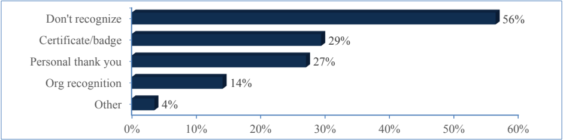
横棒グラフです。「表彰しない」56%、「修了証／バッジ」29%、「個人的な感謝」27%、「組織としての顕彰」14%、「その他」4%。横軸は0%から60%です。
Figure 14: Ways in which good security behaviors are recognized (n=85)
図 14: 望ましいセキュリティ行動を称賛する方法（n=85）
Incentive programs and rewards were discussed by survey and focus group participants. Survey participants reflected on the value of acknowledging good security behaviors:
インセンティブプログラムと報酬については、アンケート参加者とフォーカスグループの参加者が議論しました。アンケート参加者は、優れたセキュリティ行動を認めることの価値について考えを述べました。
“[Security] is sometimes an overwhelming challenge, and atta-girl, atta-lady, and atta-boy pats on the back have to be issued BUT NOT superficially.” (Q73) (emphasis theirs)
「［セキュリティは］ときに圧倒されるほどの課題であり、「よくやった」といった称賛の言葉をかける必要があります。ただし、表面的であってはなりません。」（Q73）（強調は原文）
“Focus less on bad behaviors and highlight good behaviors -- help employees learn from model employees, not through negative examples.” (Q29)
「悪い行動にはあまり焦点を当てず、良い行動を強調してください。否定的な例からではなく、模範となる従業員から従業員が学べるようにしてください。」（Q29）
“Finding a way to recognize folks for doing the right thing or being more strategic in our employees ability to recognize and build a stronger security awareness program and bond with the employees. I am not sure how to do this, but I believe it may be a great alternative way to get employees more engaged.” (Q93)
「正しいことをした人を称賛する方法を見つけること、あるいは、従業員がセキュリティを認識する能力や、より強力なセキュリティ意識向上プログラムを築いて従業員との絆を深める能力を高めるうえで、より戦略的になることです。どうすればよいかは分かりませんが、従業員の関与を高める優れた別の方法になり得ると考えています。」（Q93）
One focus group participant explained why her organization does not broadly recognize employees for their positive security behaviors:
フォーカスグループの参加者の一人は、自組織が望ましいセキュリティ行動について従業員を広く称賛していない理由を説明しました。
“Our leadership has been a little hesitant to display any names. I guess that there might be a union issue as well. So, I send specific info only to the directors of the respective divisions, that's about as far as we go concerning names for anything.” (N03)
「経営層は、名前を公表することに少しためらいがあるようです。労働組合の問題もあるのかもしれません。そのため、各部門の部長にだけ具体的な情報を送っています。名前の扱いについては、私たちがしているのはそこまでです。」（N03）
Other focus group participants elaborated on incentive programs linked to their organizations’ phishing simulation efforts:
他のフォーカスグループの参加者は、自組織のフィッシングのシミュレーションの取り組みと関連付けたインセンティブプログラムについて詳しく述べました。
“We've implemented something that we call [NAME]. [NAME] Program is based off of our phishing exercise results…The [NAME] program gives you level one through five. So, as you move up in your levels, you become more robust with your education and knowledge when you receive a phishing email. So just from reporting, which is your level one, that's the number of times that you actually report a phishing email, versus getting up to a level five where you're actually helping out your fellow co-workers to identify phishing, or how to identify maybe not a phishing exercise email, but maybe an email from the wild… That program has been pretty successful. The [organization is] very competitive internally. So, they like to get those [rewards] at their desk when we can provide it to them physically, or they get those in an email. Then we actually have an overall division board for the best rating for the phishing exercise for that quarter. So, the divisions get recognition as well.” (N04)
「［NAME］と呼ぶものを導入しました。［NAME］プログラムは、フィッシング演習の結果に基づいています。…［NAME］プログラムにはレベル1から5まであります。レベルが上がるにつれて、フィッシングメールを受け取ったときの教育と知識がより確かなものになります。レベル1は報告のみで、フィッシングメールを実際に報告した回数に応じます。レベル5になると、同僚がフィッシングを見分けるのを手伝ったり、演習用のフィッシングメールではなく、実際に届くメールを見分ける方法を手伝ったりします。…このプログラムはかなり成功しています。［組織］は内部で非常に競争心が強いため、実物で渡せるときには［報酬］を自分の机で受け取ることを好みますし、メールで受け取る場合もあります。さらに、その四半期のフィッシング演習で最高評価を得た部門を示す全体の部門別ランキングもあります。そのため、部門も表彰されます。」（N04）
“We're analyzing those phishing results, so we do agency-wide phishing exercises as well as specialized spear phishes against targeted groups. And we'll post a leaderboard that is available to all of our components as well as, we've worded it, a ‘[NAME] award’…So, they get emails of recognition, certificate recognition as a shark award for successfully following our reporting process. And we introduced a phish hunter program, which is actually a phish hunter badge, and it's an icon that employees can display on their signature icon in Outlook, as well as on our agency organizational chart.” (N01)
「フィッシングの結果を分析しており、機関全体のフィッシング演習に加え、対象グループに対する標的型スピアフィッシングも行っています。すべての構成組織が閲覧できるリーダーボードを公開し、私たちの言い方では『［NAME］賞』も設けています。…報告プロセスに従った人には、シャーク賞として、称賛メールや証明書による表彰を送ります。また、フィッシュハンタープログラムを導入しました。実際にはフィッシュハンターのバッジで、従業員がOutlookの署名欄のアイコンや機関の組織図に表示できるものです。」（N01）
3.6 Changes Due to Pandemic
3.6 パンデミックによる変化
We asked participants about changes to their security awareness program approaches due to the pandemic and if they anticipated continuing those changes after the pandemic. Sixty participants answered this open-ended question. Focus group participants also commented on these program changes.
パンデミックによるセキュリティ意識向上プログラムのアプローチの変更と、パンデミック後もその変更を継続する予定かを、参加者に尋ねました。60人の参加者がこの自由回答式の質問に答えました。フォーカスグループの参加者もこれらのプログラムの変更についてコメントしました。
Unsurprisingly, because most organizations moved to telework during the height of the pandemic, in-person events had been put on hold, with virtual events taking their place. Many participants touted the success of their virtual programs and planned to continue having a virtual component after employees return to in-person work:
パンデミックの最盛期にはほとんどの組織がテレワークに移行したため、対面のイベントは保留され、代わりにバーチャルのイベントが行われたことは、驚くことではありません。多くの参加者は、バーチャルのプログラムの成功を強調し、従業員が対面勤務に戻った後もバーチャルの要素を継続する計画でした。
“We have gotten great feedback from the virtual environment. We will potentially keep the virtual environment because it is convenient for users.” (Q47)
「バーチャル環境からは大変良いフィードバックを得ています。ユーザーにとって便利なので、バーチャル環境を維持する可能性があります。」（Q47）
“We were able to reach people outside of the [headquarters] area and increase our attendance from 100 to over 500 participants.” (Q40)
「［本部］の地域外の人々にも届けることができ、参加者数が100人から500人以上に増えました。」（Q40）
“I would say engagement is increasing. I don't know this year if it was because of the virtualness and they're looking for something to do or not, but we had record attendance at our National Cyber Security Awareness Month events in 2020.” (D06)
「エンゲージメントは高まっていると思います。今年については、オンライン開催だったことが理由なのか、あるいは人々が何かすることを探していたからなのか分かりませんが、2020年の国家サイバーセキュリティ意識向上月間のイベントは過去最高の参加者数でした。」（D06）
However, several participants, although in the minority, indicated that virtual events had not been as well-received:
しかし、少数派ではあるものの、バーチャルのイベントはあまり好評ではなかったと答えた参加者も数人いました。
“We virtualized everything. It wasn’t as popular. We will resume…in-person options upon return.” (Q56)
「すべてをバーチャルにしましたが、あまり人気がありませんでした。復帰したら、対面の選択肢を再開します。」（Q56）
“Attendance is lowered due to everything being a virtual meeting.” (Q44)
「すべてがバーチャルな会議になったため、参加者が減りました。」（Q44）
Several participants indicated that their organizations had increased or improved other types of secure awareness communications, such as email or the organization’s cybersecurity website. Others stated that their security awareness programs had added new topics relevant to a remote workforce, such as: connecting personal devices to work laptops; virtual private networks (VPNs) and encryption of communications; wireless security; secure use of online collaboration tools; operational/physical security when teleworking; proper handling of controlled unclassified information; and security information that could be used in employees’ personal lives.
参加者数人は、自組織が電子メールや組織のサイバーセキュリティのウェブサイトなど、他の種類のセキュリティ意識向上コミュニケーションを増やしたり改善したりしたと答えました。また、セキュリティ意識向上プログラムに、リモートの従業員に関連する新しいトピックを追加したと述べた参加者もいました。たとえば、個人のデバイスの仕事用ノートパソコンへの接続、仮想プライベートネットワーク（VPN）と通信の暗号化、ワイヤレスセキュリティ、オンラインコラボレーションツールの安全な使用、テレワーク時の運用上／物理的なセキュリティ、管理対象非機密情報（CUI）の適切な取り扱い、従業員の私生活でも使えるセキュリティ情報などです。
3.7 Challenges: Security Awareness Approaches
3.7 課題: セキュリティ意識向上のアプローチ
We asked participants to rate their level of challenge with respect to various facets of security awareness approaches on a five-point scale ranging from “very challenging” to “not at all challenging,” with a “does not apply” (N/A) option. Figure 15 shows the challenge ratings.
参加者には、セキュリティ意識向上のアプローチのさまざまな側面について、「非常に困難」から「まったく困難ではない」までの5段階と、「該当しない」（N/A）の選択肢を用いて、課題の度合いを評価してもらいました。図 15 に課題の評価を示します。
![100% stacked horizontal bar chart (0% to 100%) with the legend: “Very challenging”, “Moderately challenging”, “Slightly challenging”, “Not at all challenging”, “N/A”. Percentage labels shown on the segments, from left to right: “Providing info in engaging way (n=84)”: 17%, 39%, 33%, 11%; “Customizing to diverse workforce (n=83)”: 19%, 28%, 36%, 14%, 2%; “Communicating to distributed workforce (n=84)”: 6%, 23%, 29%, 43%; “Finding existing materials (n=84)”: 8%, 17%, 37%, 32%, 6%; “Ensuring 508 compliance (n=83)”: 12%, 28%, 23%, 29%, 8%. Some thin segments carry no label.](assets/ir-8420a/p0035-figure-01.png)
100%積み上げ横棒グラフ（0%〜100%）です。凡例は「非常に困難」「ある程度困難」「やや困難」「まったく困難ではない」「該当しない」です。各棒の区分に左から次の割合が表示されています。「魅力的な方法で情報を提供 (n=84)」17% / 39% / 33% / 11%、「多様な従業員に合わせて調整 (n=83)」19% / 28% / 36% / 14% / 2%、「分散した従業員に情報を伝達 (n=84)」6% / 23% / 29% / 43%、「既存の資料を見つける (n=84)」8% / 17% / 37% / 32% / 6%、「508準拠を確保 (n=83)」12% / 28% / 23% / 29% / 8%。細い区分には割合が表示されていないものがあります。
Figure 15: Challenges – Security awareness approaches
図 15: 課題 – セキュリティ意識向上のアプローチ
For all challenges, no statistically significant differences were found between groups.
原本PDFの抜粋画像
いずれの課題についても、グループ間に統計的に有意な差は見られませんでした。
The remainder of this section provides more detail on survey results for each challenge while incorporating example supporting quotes from focus group and survey participants to provide additional, qualitative insights.
本節の残りでは、各課題に関する調査結果をより詳しく説明し、フォーカスグループと調査の参加者からの裏付けとなる引用例を取り入れて、定性的な洞察を補います。
Providing security awareness information in an engaging way: Over half (56%) of survey participants indicated that being able to provide security awareness information in an engaging way was very or moderately challenging. Only 11% rated it as not challenging at all.
セキュリティ意識向上の情報を魅力的な形で提供すること: 調査参加者の半数超（56%）は、セキュリティ意識向上の情報を魅力的な形で提供できることが非常にまたはある程度困難だと答えました。まったく困難ではないと評価したのは11%のみでした。
Focus group participants elaborated on challenges they have engaging their workforce:
フォーカスグループの参加者は、従業員を引き付ける際の課題について詳しく述べました。
“If a user clicks on a phish − an authorized phishing exercise − an education page comes up, and we see that users don't linger. They click away within seconds. They cannot possibly have read all of that information. Also, for the October Cybersecurity Month, we sent out weekly messages. We had a poster board. So, we've tried a variety of things. And we received one single response saying this was nice or interesting. So, I think we just have a bit of an issue with users not lingering on the material.” (N03)
「ユーザーがフィッシングメール（許可されたフィッシング演習）をクリックすると、教育用ページが表示されますが、ユーザーはそこにとどまらず、数秒でページを離れてしまいます。その情報をすべて読めたはずがありません。また、10月のサイバーセキュリティ月間には毎週メッセージを送り、ポスターボードも用意しました。このようにいろいろ試しましたが、これが良かった、面白かったという反応はたった1件だけでした。ですから、ユーザーが資料にとどまらないという問題が少しあると思います。」（N03）
“A couple of concerns for us is keeping the awareness training engaging. So, our users, definitely, they're tired of death by PowerPoint. They don't want to see it delivered that way. But that puts us in a difficult spot sometimes because of resource constraints and the frequency that we have to deliver the training. So, we can't typically create something that is new in that turnaround that's required of us.” (N01)
「当組織の懸念の一つは、意識向上トレーニングを魅力的に保つことです。ユーザーは間違いなく、PowerPoint による「退屈死」にうんざりしており、そのような形で提供されることを望んでいません。しかし、リソースの制約と、トレーニングを提供しなければならない頻度のために、それが難しい状況に置かれることがあります。ですから、求められる短い期間で新しいものを作ることは、通常できません。」（N01）
“In the commercial area in the same kind of field, it seems like they're a lot more technologically forward. They have a lot more tools and a lot more bells and whistles in what they can present to their people that can present information to them related to security than I'm finding, at least with my agency. Some of our training previously were PowerPoint slides that were totally boring, that people really don't want to sit and read through or listen to, and doesn't have the whole splash that you can get for some of the external or commercial environments. So, I wish we had a lot more of that resources available to us here in the government.” (S02)
「民間の同じような分野では、技術的にはるかに進んでいるようです。少なくとも私の機関で見られるものよりも、セキュリティ関連の情報を人々に提示するためのツールや目を引く機能がはるかに多くあります。以前の当機関のトレーニングの一部は、まったく退屈なPowerPointのスライドで、人々は座って読んだり聞いたりしたがらず、外部や民間の環境で得られるような華やかさもありませんでした。ですから、政府でも、そのようなリソースをもっと利用できればと思います。」（S02）
Several survey participants expressed advice for overcoming current challenges in delivering engaging material:
調査参加者数人は、魅力的な資料を提供する際の現在の課題を克服するためのアドバイスを述べました。
“Actually prepare people for what they need to know, not try to make people sit through multiple hours of online courses where they retain little and there is so much superfluous information that the key points get lost.” (Q63)
「人々が知る必要のあることを実際に身につけられるようにしてください。何時間ものオンラインコースを受けさせても、ほとんど身につかず、余計な情報が多すぎて要点が埋もれてしまうようなことはしないでください。」（Q63）
“Interactive programs have proven much more effective then [sic] slideshow-based programs.” (Q25)
「対話型のプログラムは、スライドショーベースのプログラムよりも[sic]はるかに効果的であることが分かっています。」（Q25）
“Engaging people IRL [in real life] more instead of over the computer screen.” (Q37)
「コンピュータの画面越しではなく、IRL［実生活］でもっと人々と関わってください。」（Q37）
Customizing security awareness information to people with varying needs and levels of IT and security knowledge (diverse workforce): Security awareness information is meant for the general workforce, but that workforce is made up of individuals with varying backgrounds and job roles.
ニーズやIT・セキュリティ知識のレベルがさまざまな人々（多様な従業員）に合わせてセキュリティ意識向上の情報をカスタマイズすること: セキュリティ意識向上の情報は一般の従業員を対象としていますが、その従業員は、経歴や職務の異なる個人で構成されています。
Customizing information to be understandable and relevant to a diverse workforce was seen as challenging by 47% of survey participants. Several participants commented on the need to tailor security awareness content to different roles and groups of individuals within the organization:
多様な従業員にとって理解しやすく、関連性のある情報となるようカスタマイズすることは、調査参加者の47%が困難だと感じていました。参加者数人は、組織内のさまざまな役割や個人グループに合わせてセキュリティ意識向上コンテンツを調整する必要性についてコメントしました。
“Separate the ‘new employee needs to know’ from the refresher training. One size courses do not fit all.” (Q29)
「『新入社員が知っておくべきこと』と復習用のトレーニングを分けてください。画一的なコースは全員には合いません。」（Q29）
“One of our biggest challenges is the diversity of our workforce. We have people that are out [working in the field]. We have people at an office such as…a supervisor, then we have people at a district office that strictly do administrative duties, and then we have headquarters and leadership folks that have a more sensitive role…With our phishing campaigns, one of the attributes we track is what their job is. And we are finding that people that are the busiest and the most pressed for time are the ones that click on our phishing emails the most. So, we have narrowed it down to about three work groups that are the repeat clickers and cause us the most pain. So, our challenge is to find ways to make an impression on those people that they need to slow down and really look at the email before they click.” (N05)
「最大の課題の一つは、従業員の多様性です。［現場で働いている］人もいれば、…監督者のようにオフィスにいる人もいて、さらに、純粋に事務を担当する地方事務所の人たちや、より機微な役割を持つ本部や経営層の人たちもいます。…フィッシングキャンペーンでは、追跡している属性の一つが職務です。そして、最も忙しく、最も時間に追われている人が、フィッシングメールを最もクリックしていることが分かっています。そのため、繰り返しクリックして最も頭を悩ませる職務グループを、3つほどに絞り込みました。ですから私たちの課題は、そうした人々に、クリックする前に立ち止まってメールをよく見る必要があるという印象を与える方法を見つけることです。」（N05）
“Many personnel in the organization are cyber experts, difficult to balance the program.” (Q25)
「組織内にはサイバーの専門家が多く、プログラムのバランスを取るのが困難です。」（Q25）
“I have been doing research on different learning styles amongst people in different generations and trying to offer training in accordance with that.” (N09)
「世代ごとの学習スタイルの違いを調べていて、それに合わせてトレーニングを提供しようとしています。」（N09）
“I would have a program that adapts the content based on the knowledge level of the individual. Like learning programs that will continue to challenge your understanding of a particular topic until you master it. For example, some individuals have difficulty understanding how to identify a phishing email. The ideal training program would continue to demonstrate/test the individual until they could easily identify a phishing email without fail regardless of how complex it may be.” (N10)
「個人の知識レベルに基づいてコンテンツを調整するプログラムがあればよいと思います。たとえば、特定のトピックを習得するまで理解に挑戦し続ける学習プログラムです。たとえば、フィッシングメールの識別方法の理解に苦労する人がいます。理想的なトレーニングプログラムは、メールがどれほど複雑でも、その人が間違いなく簡単にフィッシングメールを識別できるようになるまで、実演やテストを続けます。」（N10）
Communicating security awareness information to a distributed work force: Some of the organizations represented in our study had a workforce stationed in multiple areas of the country or world. A pandemic-induced transition to a remote workforce also introduced challenges similar to those experienced with distributed workforces. Twenty-nine percent of survey respondents said that they were very or moderately challenged when trying to communicate security awareness information to their distributed workforces. Several focus group participants also encountered this challenge:
分散した従業員にセキュリティ意識向上の情報を伝えること: 私たちの研究で対象となった組織の中には、国内外の複数の地域に従業員を配置しているところもありました。パンデミックによるリモートの従業員への移行も、分散した従業員で経験するものと同様の課題をもたらしました。調査回答者の29%は、分散した従業員にセキュリティ意識向上の情報を伝えようとする際に、非常にまたはある程度困難を感じていると答えました。フォーカスグループの参加者数人も、この課題に直面していました。
“One of our challenges is that we have employees all over the world, which is challenging – not from a language barrier perspective, but from the perspective that some people have trouble with internet access in certain parts of the world. Also, there is a large portion of our population who don’t work in a normal office setting – they’re out in the field, so they aren’t on their computer on a regular basis.” (S10)
「課題の一つは、従業員が世界中にいることです。これは、言語の壁という観点ではなく、世界の一部の地域ではインターネットへのアクセスに問題がある人がいるという観点で、困難です。また、通常のオフィス環境で働かない人も多く、彼らは現場に出ているため、日常的にコンピュータを使っていません。」（S10）
“In the past, everything is just PDFs and documents that don't really work in the remote environment, especially when people are now accessing things through their phones.” (D03)
「以前は、すべてが PDF や文書で、リモート環境、特に今のように人々が携帯電話でさまざまなものにアクセスするときには、あまり機能しません。」（D03）
Finding existing security awareness materials to use: A quarter of survey participants rated finding existing security awareness materials to be very or moderately challenging, as echoed by several focus group participants:
利用できる既存のセキュリティ意識向上資料を見つけること: 調査参加者の4分の1は、既存のセキュリティ意識向上資料を見つけることが非常にまたはある程度困難だと評価しており、フォーカスグループの参加者数人も同様でした。
“If there was a central repository within the federal government even, of various trainings and awareness pamphlets, flyers, presentations, stuff like that, that the various agencies could actually share and leverage back and forth, I think that would definitely better help us make use of what limited resources we do have.” (S01)
「連邦政府内だけでも、さまざまなトレーニングや意識向上用のパンフレット、チラシ、プレゼンテーションなどの中央リポジトリがあって、各機関が実際に相互に共有して活用できれば、限られたリソースをより有効に使えると思います。」（S01）
“We’ve been holding off on assigning additional training to repeat phish offenders because we are fearful of the months that lie ahead. What will we do with the same staff members 4 clicks from now? We don’t have that much material which we could suck into our Learning Management System in order to assign to users.” (N03)
「繰り返しフィッシングに引っかかる人への追加トレーニングの割り当てを保留してきました。この先数か月が不安だからです。同じ職員があと4回クリックしたら、どうするのでしょうか。ユーザーに割り当てるために学習管理システムに取り込める資料が、それほど多くありません。」（N03）
“I don't think that there's enough material that's commonly available such that we can grab it and then customize. So, it would be nice if there were more government-wide topics where those agencies that are identifying the regulations would produce some training relative to cybersecurity or privacy…If there were more government-wide or more small vignettes of training that we could tap into to create some greater training material, that would be very useful.” (S11)
「一般に入手できて、それを取ってきてカスタマイズできるような資料は、十分にないと思います。ですから、規制を特定している機関が、サイバーセキュリティやプライバシーに関するトレーニングを作成するような、政府全体のトピックがもっとあれば助かります。…政府全体の、あるいはもっと小さな短いトレーニングの事例集を利用して、より充実したトレーニング資料を作ることができれば、非常に役立つでしょう。」（S11）
Ensuring security awareness materials are 508 compliant: When ensuring that security awareness communications and materials are compliant with Section 508 of the Rehabilitation Act, 40% of survey respondents encountered challenges. Survey and focus group participants offered additional insights on this challenge:
セキュリティ意識向上資料が 508 に準拠していることを確保すること: セキュリティ意識向上のコミュニケーションと資料がリハビリテーション法 Section 508 に準拠していることを確保する際、調査回答者の40%が課題に直面していました。調査とフォーカスグループの参加者は、この課題についてさらなる洞察を示しました。
“Supporting offices like 508 must be properly staffed to adequately fulfill request for review and editing to make content 508 compliant.” (Q96)
「コンテンツを508に準拠させるためのレビューや編集の依頼に十分に対応できるよう、508などの支援部門には適切な人員が配置されていなければなりません。」（Q96）
“We did cybersecurity escape rooms, and that was a huge win for us. Users loved the idea of that. But, unfortunately, some of those things cannot be delivered to the masses or are not 508 compliant.” (N01)
「サイバーセキュリティの脱出ゲームを行い、大成功でした。ユーザーはその発想を気に入りました。しかし残念ながら、そうしたものの一部は、大勢に提供できなかったり、508 に準拠していなかったりします。」（N01）
“With the videos or with all communications, 508 compliance is generally a challenge. And I think there needs to be, on a whole, a larger compromise to allow the production of content that is not 508 compliant for users that don't require the use of assistive technologies and to allow a complement communication that is Section 508 compliant. For instance, I wanted to introduce some virtual reality type scenario training. Well, there's no way that you're going to make a 3D environment Section 508 compliant. So, there's a large part of the population that could benefit from that interactivity because that's their learning nature. It's more engaging. It's different, and you can make it a little bit more specific. And you can take that same concept and you can put it into a format for those users that do require the use of assistive technology.” (D06)
「動画でも、あらゆるコミュニケーションでも、508への準拠は一般に課題です。支援技術を必要としないユーザー向けには508に準拠しないコンテンツの制作を認め、Section 508に準拠した補完的なコミュニケーションも認めるような、全体としてのより大きな折衷が必要だと思います。たとえば、仮想現実型のシナリオトレーニングを導入したいと考えました。しかし、3D環境をSection 508に準拠させる方法はありません。そのため、学習の仕方が対話型である大勢の人々は、その対話性から恩恵を受けられる可能性があります。より魅力的で、異なり、もう少し具体的にもできます。そして、同じ概念を、支援技術を必要とするユーザー向けの形式にすることもできます。」（D06）
4 Aiding and Informing the Security Awareness Program
4 セキュリティ意識向上プログラムの支援と情報提供
This section reports on results related to which internal and external resources (e.g., information, forums, and other groups) influence and inform federal security awareness programs or aid in the delivery of security awareness information.
本節では、どのような内部および外部のリソース（情報、フォーラム、その他のグループなど）が連邦政府のセキュリティ意識向上プログラムに影響を与え、情報を提供しているか、またセキュリティ意識向上の情報提供をどのように支援しているかに関する結果を報告します。
4.1 Department Influence
4.1 省庁の影響
For participants whose organization was a sub-component (i.e., agency under a Department), we wanted to know what best described their security awareness program’s relationship with their departmental security awareness program. Figure 16 shows that over half (56%) of sub-components were required to use the security awareness training from the Department. For 31%, the Department provided the training, but use is optional. In 6% of cases, the Department either provided topics but no training or did not provide sub-components with any materials or guidance.
組織が下位組織（すなわち、省庁の下にある機関）である参加者には、自組織のセキュリティ意識向上プログラムと省庁のセキュリティ意識向上プログラムとの関係を最もよく表すものは何かを尋ねました。図 16 は、下位組織の過半数（56%）が省庁のセキュリティ意識向上トレーニングを使うことを求められていることを示しています。31%では、省庁がトレーニングを提供していますが、利用は任意です。6%では、省庁がトピックは提供するもののトレーニングは提供していないか、下位組織に資料もガイダンスもまったく提供していません。
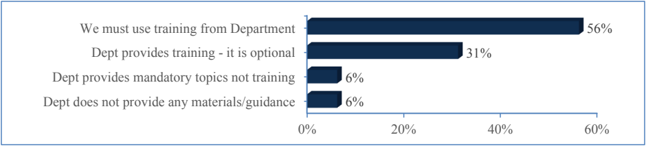
横棒グラフです。「省庁のトレーニングを使用しなければならない」56%、「省庁がトレーニングを提供するが任意」31%、「省庁は必須トピックを提供するがトレーニングは提供しない」6%、「省庁は資料やガイダンスを一切提供しない」6%。横軸は0%から60%までです。
Figure 16: Subcomponents’ security awareness relationships with their Departments (n = 32)
図 16: 下位組織のセキュリティ意識向上における所属省庁との関係（n = 32）
Focus group participants from sub-component organizations had very different experiences related to what security awareness material was passed down from or mandated by their Departments, ranging from complete to no autonomy.
下位組織のフォーカスグループ参加者は、どのようなセキュリティ意識向上資料が所属省庁から引き継がれたり義務付けられたりするかについて、全面的に委ねられる場合からまったく裁量がない場合まで、非常に異なる経験をしていました。
“We really don't get a whole lot of guidance on our training from [the Department].” (S04)
「［省庁］からは、トレーニングに関するガイダンスをあまり多くは受けていません。」（S04）
“We basically are able to tailor our training on our own. We do get input from Department, but we are not dictated by Department on our security awareness program.” (S03)
「基本的に、トレーニングは自分たちで調整できます。省庁からの意見は受けますが、セキュリティ意識向上プログラムについて省庁から指示されることはありません。」（S03）
“Our Department, they create their own security awareness course and we sort of have the flexibility to use it or create our own and seems like they give us complete flexibility regarding creating our own.” (S06)
「私たちの省庁は独自のセキュリティ意識向上コースを作成しており、私たちはそれを使うか、自分たちで作成するかをある程度柔軟に選べます。自分たちで作成することについては、完全な柔軟性が与えられているようです。」（S06）
“They [the Department team] start with the same approach every year where they are developing the annual training at the Department level and the agencies are providing input for improvement and development before it's released to users, so we can provide ideas for topics directly for the training.” (S05)
「［省庁のチーム］は、毎年同じ方法で、省庁レベルで年次トレーニングを開発し、ユーザーに公開される前に、各機関が改善や開発のための意見を出します。そのため、トレーニングについて、トピックの案を直接出すことができます。」（S05）
“[The Department] handles the program. We don’t really have room to… contribute any…response to the content…We're kind of limited. I wish we had more leeway, whether it's money, having the capability to get either a contract with a vendor, independent of the Department, to design our own training tools. We don't have that right now. I wish we did.” (S02)
「［省庁］がプログラムを運営しています。私たちには、…コンテンツに何らかの…意見を出す余地があまりありません。…私たちはある程度制約されています。もっと裁量があればと思います。それがお金であれ、省庁とは独立して自分たちのトレーニングツールを設計するためにベンダーと契約できる能力であれ、です。今はそのような能力がありません。あればよいのですが。」（S02）
For those participants who worked at the Department level, we asked if their organizations provided security awareness training or materials to sub-component agencies (see Figure 17). Over half of the Departments (53%) provided security awareness training that their sub-component agencies must use, and 17% provided optional training. Seven percent did not provide any materials or guidance, and 3% provided topics but no training.
省庁レベルで働く参加者には、自組織が下位組織の機関にセキュリティ意識向上トレーニングや資料を提供しているかを尋ねました（図 17 を参照）。省庁の過半数（53%）は、下位組織の機関が使わなければならないセキュリティ意識向上トレーニングを提供しており、17%は任意のトレーニングを提供していました。7%は資料もガイダンスもまったく提供しておらず、3%はトピックを提供するもののトレーニングは提供していませんでした。
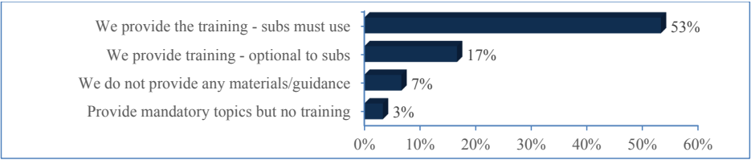
横棒グラフです。「トレーニングを提供し、下位組織は使用必須」53%、「トレーニングを提供するが、下位組織には任意」17%、「資料やガイダンスを一切提供しない」7%、「必須トピックは提供するがトレーニングは提供しない」3%。横軸は0%から60%までです。
Figure 17: Departments' security awareness relationships with their sub-components (n = 30)
図 17: 省庁のセキュリティ意識向上における下位組織との関係（n = 30）
Department-level participants from the focus groups commented on this relationship:
フォーカスグループの省庁レベルの参加者は、この関係についてコメントしました。
“All of the content that we produce is available for all of the subagencies. About [half of the] subagencies use our content, and another [half] or so are large enough where they'll use a portion or they'll create their own that's a little bit more targeted and branded to their mission.” (D06)
「当省が作成するコンテンツはすべて、すべての下位機関が利用できます。［約半数の］下位機関が当省のコンテンツを使い、残り［半数］ほどは規模が大きいため、一部を使うか、自分たちの任務にもう少し的を絞り、その組織らしさを反映した独自のものを作成します。」（D06）
“Departmental sets out minimum requirements for all security controls, including training. And if the agencies within the Department go above and beyond that's great, and that's encouraged.” (D05)
「省は、トレーニングを含むすべてのセキュリティ管理策の最低限の要件を定めています。そして、省内の各機関がそれを超えて取り組むなら、それは素晴らしいことで、奨励されています。」（D05）
“In regard to broader like our [security awareness] symposium, we've started taking the approach of wrapping in our [sub-components] to try to see what their needs are to get more of a collaborative effort to get something consolidated at the departmental level.” (D04)
「［セキュリティ意識向上］シンポジウムのような、より広い取り組みについては、［下位組織］を巻き込んで、そのニーズを把握し、省庁レベルで統合されたものを作るための協働を進めるというアプローチを取り始めました。」（D04）
4.2 Internal Sources
4.2 内部の情報源
4.2.1 Collaborations with Internal Groups
4.2.1 組織内グループとの連携
Participants were asked what other teams/groups within their organization they collaborate with or consult in their security awareness mission (Figure 18). Over 70% collaborated with the incident response team (77%), the privacy team (73%), and the IT team (71%). Much fewer work with the General Counsel (39%) and Human Resources (HR) (38%).
参加者には、セキュリティ意識向上の任務において、自組織内のどの他のチーム／グループと連携または相談しているかを尋ねました（図 18）。70%を超える参加者が、インシデント対応チーム（77%）、プライバシーチーム（73%）、IT チーム（71%）と連携していました。法務顧問（39%）や人事部門（HR）（38%）と連携している割合は、はるかに少なくなっていました。
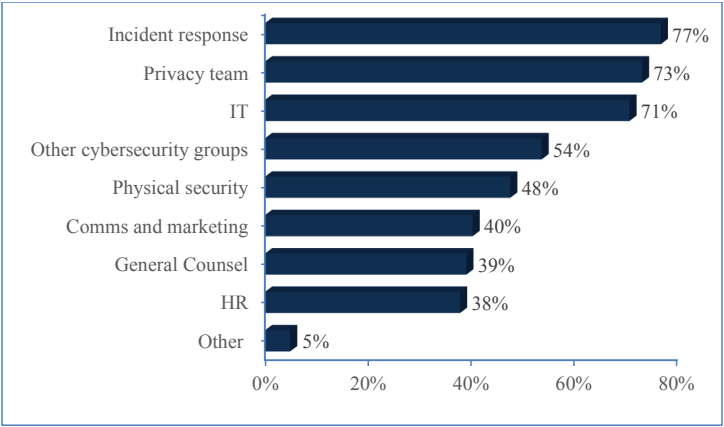
横棒グラフです。「インシデント対応」77%、「プライバシーチーム」73%、「IT」71%、「その他のサイバーセキュリティグループ」54%、「物理的セキュリティ」48%、「広報およびマーケティング」40%、「法務顧問」39%、「人事部門」38%、「その他」5%。横軸は 0% から 80% までです。
Figure 18: Internal groups collaborating with security awareness programs (n=81)
図 18: セキュリティ意識向上プログラムと連携する組織内グループ（n=81）
Internal collaboration was discussed extensively within the focus groups. Not surprisingly, security awareness teams often consulted with other security or IT groups:
組織内の連携は、フォーカスグループで広く議論されました。当然ながら、セキュリティ意識向上チームは、他のセキュリティグループや IT グループに相談することが多くありました。
“I do consult with members of the SOC [Security Operations Center] to see if there's anything glaring that I need to include in my training each year.” (N09)
「SOC［セキュリティオペレーションセンター］のメンバーに相談して、毎年のトレーニングに含めるべき重大な事項がないかを確認しています。」（N09）
“Also working with the help desk, just what type of problems our users encounter that are related to security issues.” (S05)
「ヘルプデスクとも連携して、ユーザーがセキュリティの問題に関連してどのような問題に遭遇しているかを把握しています。」（S05）
“Being tied directly to the cybersecurity policy team has made it easier because the awareness team always has whatever the latest guidance is and can push that out very quickly.” (D03)
「サイバーセキュリティ方針チームと直接つながっていることで、意識向上チームが常に最新のガイダンスを把握し、それを非常に迅速に発信できるため、やりやすくなりました。」（D03）
“We've worked closely with the information security officials” (N08)
「情報セキュリティの担当官と緊密に連携してきました。」（N08）
“I'm located in the chief information security office, and there are…divisions in that office that provide a wide range of cybersecurity services to the Department. And those managers have responsibilities for things such as identity management, internet response, data loss prevention. So, within any year, I reach out to those stakeholders to ask, ‘What's important for the user to understand about cybersecurity awareness? What do you want to talk to the customer about? What kind of behaviors are you seeing that you want us to help encourage them to do or not to do?.” (D01)
「私は最高情報セキュリティ責任者室に所属しており、その室には、省に幅広いサイバーセキュリティサービスを提供する…部門があります。それらの管理職は、アイデンティティ管理、インシデント対応、データ損失防止などを担当しています。そのため毎年、それらの関係者に連絡して、『サイバーセキュリティ意識向上について、ユーザーが理解すべき重要なことは何ですか。顧客に何について話したいですか。どのような行動が見られ、ユーザーにどの行動を促したり控えさせたりする手助けを私たちに求めますか』と尋ねます。」（D01）
“Build relationships with offices within your organization- Incident Response, Help Desk,…FISMA Compliance.” (Q24)
「組織内の各部署（インシデント対応、ヘルプデスク、…FISMA コンプライアンスなど）と関係を築いてください。」（Q24）
Beyond other technology-focused teams, participants also commented on the value of working with other groups in the organization:
参加者は、技術に重点を置く他のチーム以外にも、組織内の他のグループと連携する価値についてコメントしました。
“The learning management folks help me out on some of the communication aspects.” (N11)
「学習管理の担当者が、コミュニケーションの一部の面で助けてくれます。」（N11）
“Partner with many, varied internal organizations to minimize the burden on staff and create a routine process across the varied internal organizations. For example, processes should be the same for security, as for privacy, physical security, ethics, etc.” (S11)
「職員の負担を最小限にし、さまざまな内部組織にわたる定型的なプロセスを作るために、多様な内部組織と連携してください。たとえば、セキュリティと、プライバシー、物理セキュリティ、倫理などとで、プロセスを同じにすべきです。」（S11）
“I gave the example of just my legal counterparts and human resource counterparts, for a variety of different reasons, making sure that course material doesn't promote or say something that would contradict a legal requirement, not to mention human resources – their training requirement is from a federal human resource perspective, so they're just – certainly might have also good resources to collaborate with and leverage in terms of ideas and platforms.” (D04)
「さまざまな理由から、法務担当者と人事担当者を例に挙げました。コース資料が法的要件に反することを推奨したり、そのような内容を述べたりしていないかを確認するためです。言うまでもなく、人事部門のトレーニング要件は連邦政府の人事の観点から定められているため、アイデアやプラットフォームの面で連携し、活用できる有益なリソースも確かにあるかもしれません。」（D04）
“Build bridges with your communication teams and the communication workflow and develop a smooth, repeatable process so that once your communications are produced, that the production and the distribution is standardized.” (D06)
「広報チームやコミュニケーションのワークフローとの橋渡しをして、円滑で再現可能なプロセスを築いてください。そうすれば、コミュニケーションが作成された後の制作と配布が標準化されます。」（D06）
4.2.2 Sources for Topics and Approaches
4.2.2 トピックとアプローチの情報源
We asked participants what sources within their own organization inform security awareness topics and approaches (Figure 19).
自組織内のどのような情報源が、セキュリティ意識向上のトピックやアプローチの決定に役立っているかを参加者に尋ねました（図 19）。
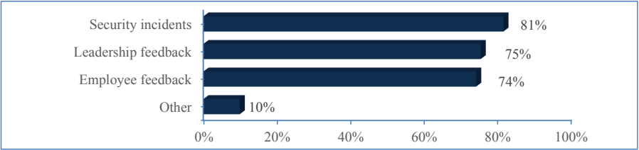
横棒グラフです。「セキュリティインシデント」81%、「リーダーシップからのフィードバック」75%、「従業員からのフィードバック」74%、「その他」10%。横軸は 0% から 100% までです。
Figure 19: Internal sources informing security awareness topics and approaches (n=81)
図 19: セキュリティ意識向上のトピックとアプローチに情報を提供する内部の情報源（n=81）
Security incidents: Security incidents experienced by the organization were a common source driving security awareness content (81% of survey participants). Participants provided additional details:
セキュリティインシデント: 組織が経験したセキュリティインシデントは、セキュリティ意識向上コンテンツの内容を決める一般にみられる情報源でした（調査参加者の81%）。参加者は、さらに詳しく述べました。
“Security incident reports that are used to influence the topics in the training. This way, you may be able to see a difference in behavior.” (Q53)
「トレーニングのトピックに影響を与えるために、セキュリティインシデント報告を使っています。こうすることで、行動の違いを確認できるかもしれません。」（Q53）
“Pick general security awareness topics based on the incidents that the Department experienced over the previous year.” (D06)
「省が前年に経験したインシデントに基づいて、一般的なセキュリティ意識向上のトピックを選びます。」（D06）
“If we see our monitoring tool might be catching a lot of emails going out that maybe unencrypted or people not following specific policies that we have, then we'll put out a reminder or something related to that.” (N12)
「監視ツールが、暗号化されていないメールが多数送信されていること、または私たちの特定の方針に従っていない人々がいることを検知しているようであれば、それに関連するリマインダーなどを発信します。」（N12）
Leadership feedback: Leadership direction and feedback was selected by 75% of participants. This input often drives the priorities of the security awareness program:
経営層のフィードバック: 経営層の指示とフィードバックは、参加者の75%によって選択されました。この情報が、セキュリティ意識向上プログラムの優先事項を決めることがよくあります。
“Sometimes it would be based on priorities for the Department that the Secretary or even the CIO will have.” (D02)
「長官や CIO が持つ省の優先事項に基づくこともあります。」（D02）
“If there's a certain type of breach or attack somewhere, we'll get a request from the Secretary or somebody to say, ‘Hey, we want you to stop everything you're doing and create an article or create a e-blast on this topic’.” (D06)
「どこかで特定の種類の侵害や攻撃があると、長官や誰かから、『今やっていることをすべて止めて、このトピックについての記事やメールを作成してほしい』という依頼が来ます。」（D06）
Employee feedback: Almost ¾ of survey participants indicated that employee feedback informs their program. Several organizations discussed how they adjusted their security awareness content based on direct feedback from the workforce:
従業員のフィードバック: 調査参加者のほぼ4分の3が、従業員からのフィードバックがプログラムの内容に反映されると回答しました。複数の組織が、従業員から直接寄せられたフィードバックに基づいて、セキュリティ意識向上のコンテンツをどのように調整したかを述べました。
“We ask our employees for topics that they may be interested in.” (S09)
「従業員に、関心のありそうなトピックを尋ねています。」（S09）
“Feedback from the customers, too, or the people that take the training. If they have any feedback about something that needs to be improved or something that I overlooked, then I will incorporate that into the training as appropriate.” (N11)
「顧客、つまりトレーニングを受ける人々からのフィードバックもあります。改善が必要な点や私が見落とした点についてフィードバックがあれば、適宜トレーニングに取り入れます。」（N11）
“With our different groups, they are very vocal throughout our agencies just asking for help. The various groups that we have will come up with their own themes about what they want more guidance on, actually. And that often does dictate the types of presentations or other ideas for information that we need to get out to them and then maybe the whole agency.” (S05)
「私たちのさまざまなグループは、機関内のあちこちで、助けを求めて積極的に声を上げています。実際、そうしたグループはそれぞれ、どのようなことについてもっと指導を受けたいか、独自のテーマを考え出します。そしてそれによって、彼ら、さらには機関全体に伝える必要があるプレゼンテーションやその他の情報の内容が決まることがよくあります。」（S05）
“There is a more formal effort with the voice of the customers that my management office uses on an annual basis.” (N09)
「私の管理部門が毎年利用している、顧客の声に関する、より正式な取り組みがあります。」（N09）
4.3 External Sources
4.3 外部の情報源
We asked participants to indicate the external sources that help inform their organizations’ security awareness program. Figure 20 shows the response frequencies for this select-all-that-apply question.
組織のセキュリティ意識向上プログラムに情報を提供する外部の情報源を、参加者に挙げてもらいました。図 20 は、この該当するものをすべて選ぶ形式の質問の回答頻度を示しています。
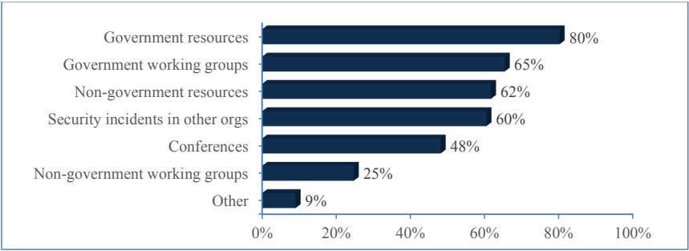
横棒グラフです。「政府のリソース」80%、「政府のワーキンググループ」65%、「非政府のリソース」62%、「他の組織でのセキュリティインシデント」60%、「カンファレンス」48%、「非政府のワーキンググループ」25%、「その他」9%。横軸は0%から100%までです。
Figure 20: External sources informing security awareness content and approaches (n=81)
図 20: セキュリティ意識向上のコンテンツとアプローチに情報を提供する外部の情報源（n=81）
Government resources and working groups: A large majority of organizations (80%) were informed by government resources, with 60% informed by government working groups. Participants mentioned specific resources:
政府のリソースとワーキンググループ: 組織の大多数（80%）が政府のリソースから情報を得ており、60%が政府のワーキンググループから情報を得ていました。参加者は、具体的なリソースを挙げました。
“I think historically in terms of topics or for the October Cybersecurity Awareness Month, we definitely leverage what's being done at the federal level and push that out.” (D04)
「トピックについて、あるいは10月のサイバーセキュリティ意識向上月間については、従来、連邦レベルで行われていることを確実に活用し、それを発信しています。」（D04）
“For me, usually my first go-to is what is CISA [Cybersecurity and Infrastructure Security Agency] about, right, because they kind of got the scope on the entire .gov space. At the same time, they work with industry as well. So, anything that they are bringing to light, I try to emulate that and try to kind of go, ‘Hey, this is something that CISA's saying is important as a threat. You, as an individual, need to know that this is a threat. This way you are aware of what's going on the other way’.” (N10)
「私の場合、通常、まず確認するのは CISA［サイバーセキュリティ・社会基盤安全保障庁］が何を取り上げているかです。.gov の領域全体を把握しているからです。同時に、産業界とも連携しています。ですから、CISA が明らかにしたことは何でも、それにならうようにしています。『CISA が脅威として重要だと言っていることがあります。個人として、これが脅威だと知っておく必要があります。そうすれば、ほかで何が起きているかも把握できます。』と伝えるようにしています。」（N10）
“The NIST SP [Special Publication] 800 publications are useful” (Q78)
「NIST SP［Special Publication］800 の各刊行物は有用です。」（Q78）
Participants also talked about direct interactions they have with other government organizations:
参加者は、他の政府組織との直接のやり取りについても話しました。
“We also created a Department level Security Awareness Training Working Group which has benefited the security awareness programs throughout the Department.” (Q23)
「省レベルのセキュリティ意識向上トレーニング・ワーキンググループも作りました。これは省内のセキュリティ意識向上プログラムに役立っています。」（Q23）
“We bring in speakers from outside. We've had speakers from [other government agencies]. We've partnered with [a Department] to join their annual event in October as well.” (N08)
「外部から講演者を招いています。［他の政府機関］の講演者もいました。また、10月の［ある省の］年次イベントにも、連携して参加しました。」（N08）
“Building friendships with our counterparts at other agencies, we then do some information sharing so that we can kind of help each other with, ‘Okay. What were the challenges that you had this past year? What were the things that worked well? And what would you need to change?’…If we kind of ask ourselves this throughout the year and share the results, we can help each other build more efficient programs for our respective agencies.” (D02)
「他の機関の担当者との友好関係を築くことで、情報共有を行い、互いに助け合えます。『昨年の課題は何でしたか。うまくいったことは何でしたか。何を変える必要がありますか。』といったことです。…年間を通じてこのことを自問し、その結果を共有すれば、それぞれの機関でより効率的なプログラムを構築するのに互いに助け合えます。」（D02）
Non-government resources: Non-government security resources were used by 62% of survey participants’ organizations. Sources most often included news stories and online security resources:
非政府のリソース: 調査参加者の組織の62%が、非政府のセキュリティリソースを利用していました。情報源として最も多かったのは、ニュース記事とオンラインのセキュリティリソースでした。
“The other things that I would get topics from which is just general news stories. Something that kicks off in the news, like when Equifax had the breach, that was one. It was like, ‘Hey, here's what happened with Equifax. Here's how it could potentially impact you. And here's how we can avoid it’.” (N10)
「トピックの情報源としては、一般的なニュース記事もあります。ニュースで話題になったもの、たとえば Equifax の侵害事件がありました。『Equifax で何が起きたのか、あなたにどのような影響があり得るのか、そしてそれをどう防げるのかを紹介します』という感じでした。」（N10）
“We do a lot of Googling, just to find out what's going on out there. Cybersecurity online magazines, things like that, we pull from those resources as well.” (N04)
「何が起きているかを知るために、Google で多くの検索をしています。サイバーセキュリティのオンライン雑誌などからも情報を得ています。」（N04）
Security incidents in other organizations: Sixty percent of survey respondents utilize information on security incidents in other organizations, as reflected in the focus groups:
他の組織でのセキュリティインシデント: 調査回答者の60%が、他の組織でのセキュリティインシデントに関する情報を活用していました。フォーカスグループでも、同様のことが確認されました。
“We annually meet with [an external organization’s] computer security incident response center, and I get them to produce a list of user-induced or incidents that could have been prevented by users, kind of by category. And I take a compilation of those, the most recent Verizon data breach report, and the IBM threat report and kind of take a mix of the top threats from those three sources and kind of whittle them down into about eight or so topics for the cybersecurity awareness training.” (D06)
「毎年、［ある外部組織の］コンピュータセキュリティインシデント対応センターと会合を持ち、ユーザーが原因のインシデントや、ユーザーによって防げたインシデントの一覧を、カテゴリ別に作成してもらっています。そして、その集計と、最新の Verizon のデータ侵害報告書、IBM の脅威レポートを取り上げ、その3つの情報源から上位の脅威を組み合わせて、サイバーセキュリティ意識向上トレーニングのための8つほどのトピックに絞り込んでいます。」（D06）
Security awareness topics frequently were attuned to seasonal security incidents/attacks, for example attempted impersonations of the Internal Revenue Service during tax season or online shopping incidents during holidays:
セキュリティ意識向上のトピックは、たとえば確定申告の時期の内国歳入庁のなりすましの試み、ホリデーシーズンのオンラインショッピングのインシデントなど、季節的なセキュリティインシデントや攻撃に合わせることがよくありました。
“We use seasonal messages and also relevant topics of observed activity within the cyber security realm. For instance, when we see an uptick in ransomware activity nationally/internationally we may develop an awareness article about that.” (N05)
「季節ごとのメッセージや、サイバーセキュリティ分野で観察された活動に関連するトピックを使っています。たとえば、国内外でランサムウェアの活動が増えているのを見たら、それについての意識向上記事を作成することがあります。」（N05）
“We do seasonal things or get our information mostly by the Weekly Wire, I'd say, during the tax season and the holiday season. And certainly, when COVID started, we had a brief campaign, in the beginning, asking people to watch out for certain types of phishing emails.” (N11)
「確定申告の時期やホリデーシーズンには、季節に応じたことを行ったり、主に Weekly Wire から情報を得たりしています。そして確かに、COVID が始まったときは、最初に、特定の種類のフィッシングメールに注意するよう呼びかける短いキャンペーンを行いました。」（N11）
Conferences and non-government groups: Fewer survey respondents selected conferences (48%) or non-government working groups or forums. A participant mentioned an industry forum for security awareness professionals:
カンファレンスと非政府グループ: カンファレンス（48%）や非政府のワーキンググループまたはフォーラムを選んだ調査回答者は少数でした。ある参加者は、セキュリティ意識向上の専門家向けの業界フォーラムを挙げました。
“SANS Secure the Human. It's an online forum…and they have people from all over the world, and they share ideas, share solutions, share lessons learned.” (S10)
「SANS Secure the Human です。オンラインフォーラムで、…世界中の人々が参加し、アイデア、解決策、教訓を共有しています。」（S10）
4.4 NIST Security Awareness Resources
4.4 NIST のセキュリティ意識向上リソース
In the survey, we asked participants if they used security awareness and training resources sponsored by NIST. The Federal Information Security Educators (FISSEA) [FISSEA] is a government organization assisting federal agencies in strengthening cybersecurity awareness and training programs. The group holds an annual conference or seminar series. To gauge familiarity with FISSEA, we asked participants if they had heard of FISSEA and attended any FISSEA events. While 62% had heard of FISSEA, only a third had attended a FISSEA event. Figure 20 shows the responses for FISSEA attendance.
調査では、NIST が後援するセキュリティ意識向上およびトレーニングのリソースを利用しているかを参加者に尋ねました。連邦情報セキュリティ教育者（FISSEA）[FISSEA] は、連邦機関がサイバーセキュリティ意識向上およびトレーニングのプログラムを強化するのを支援する政府組織です。このグループは、年次のカンファレンスまたはセミナーシリーズを開催しています。FISSEA の認知度を測るため、FISSEA を聞いたことがあるか、FISSEA のイベントに参加したことがあるかを参加者に尋ねました。62%は FISSEA を聞いたことがありましたが、FISSEA のイベントに参加したことがあるのは3分の1にとどまりました。図 20 は、FISSEA への参加に関する回答を示しています。
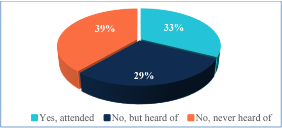
凡例付きの立体円グラフです。「はい、参加した」33%、「いいえ、参加していないが、聞いたことがある」29%、「いいえ、聞いたことがない」39%。
Figure 21: FISSEA awareness and attendance (n=80)
図 21: FISSEA の認知度と参加状況（n=80）
Several participants mentioned FISSEA specifically:
複数の参加者が、特に FISSEA に言及しました。
“I have for many years been involved with FISSEA and get approaches that way.” (D05)
「長年 FISSEA に関わっており、そこからアプローチを得ています。」（D05）
“I would say get involved with the NIST FISSEA group to attend that conference, yearly conference. I've gotten a lot of great ideas attending that conference and also looking on the FISSEA website. They have a contest and looking at all the submissions people turn in for those contests will give you a lot of great ideas for security awareness.” (S06)
「NIST の FISSEA グループに参加して、その年次カンファレンスに出席することをお勧めします。そのカンファレンスに出席し、FISSEA のウェブサイトを見ることで、多くの素晴らしいアイデアを得ました。コンテストがあり、人々がそのコンテストに提出した作品をすべて見ると、セキュリティ意識向上のための素晴らしいアイデアが数多く得られます。」（S06）
We also asked participants if they had ever used the NIST Special Publication 800-50 “Building an Information Technology Security Awareness and Training Program” to inform their security awareness program. While the large majority (84%) had heard of the publication, less than half (48%) had used it. Figure 22 shows the response frequencies.
また、セキュリティ意識向上プログラムに情報を提供するために、NIST Special Publication 800-50「Building an Information Technology Security Awareness and Training Program」を使ったことがあるかも参加者に尋ねました。大多数（84%）がこの刊行物を聞いたことがありましたが、使ったことがあるのは半数未満（48%）でした。図 22 に回答頻度を示します。
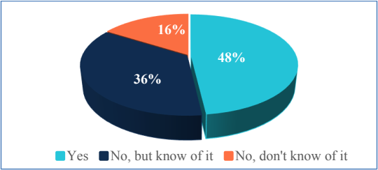
凡例付きの立体円グラフです。「はい」48%、「いいえ、存在を知っている」36%、「いいえ、存在を知らない」16%。
Figure 22: NIST Special Publication 800-50 awareness and use (n=81)
図 22: NIST Special Publication 800-50 の認知度と利用状況（n=81）
4.5 Challenges: Informing the Security Awareness Program
4.5 課題: セキュリティ意識向上プログラムへの情報提供
Participants were asked to rate the level of challenge experienced when trying to collaborate and use security awareness resources on a five-point scale ranging from “very challenging” to “not at all changing,” with a “does not apply” (N/A) option (see Figure 23).
参加者には、連携やセキュリティ意識向上リソースの利用を試みる際に経験する課題のレベルを、「非常に困難」から「まったく困難ではない」までの5段階と、「該当しない」（N/A）の選択肢で評価してもらいました（図 23 を参照）。
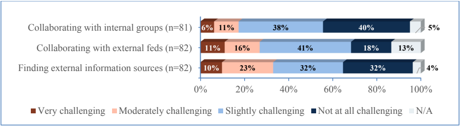
100%積み上げ横棒グラフ（0%〜100%）です。凡例は「非常に困難」「ある程度困難」「やや困難」「まったく困難ではない」「該当しない」です。各棒の区分に左から次の割合が表示されています。「組織内グループとの連携 (n=81)」6% / 11% / 38% / 40% / 5%、「他の連邦機関との連携 (n=82)」11% / 16% / 41% / 18% / 13%、「外部の情報源を見つけること (n=82)」10% / 23% / 32% / 32% / 4%。
Figure 23: Challenges - Informing the security awareness program
図 23: 課題 - セキュリティ意識向上プログラムへの情報提供
For all challenges, no statistically significant differences were found between groups.
原本PDFの抜粋画像
いずれの課題についても、グループ間に統計的に有意な差は見られませんでした。
The following provides detail on survey results for each challenge while incorporating example supporting quotes from focus group and survey participants.
以下では、各課題について、調査参加者とフォーカスグループ参加者の裏付けとなる引用例を交えながら、調査結果を詳しく説明します。
Collaborating/sharing information with other groups in my organization: Only 17% of survey participants indicated that collaborating with internal groups was very or moderately challenging. A few focus group participants discussed this challenge as it related to division of training responsibility within the organization:
自組織内の他のグループと連携／情報共有すること: 調査参加者のうち、内部グループとの連携を非常に困難またはある程度困難と答えたのは、わずか17%でした。フォーカスグループの参加者数人は、組織内でのトレーニング責任の分担に関連する課題について述べました:
“Our biggest challenge is that we have a disparate training program in place. It doesn't all fall under a single umbrella. Consequently, it makes it difficult to coordinate and collaborate with each of the different leads.” (S03)
「最大の課題は、トレーニングプログラムがばらばらに存在していることです。すべてが単一の傘下に置かれているわけではありません。そのため、それぞれの責任者と調整し連携することが難しくなります。」（S03）
“Bifurcation's a problem because we're depending on another group to put that tool [a phishing tool] in place. And when it's not in place, we can't actually carry out the exercise in a way that won't overwhelm our incident response team that handles phishing reporting.” (D03)
「二分されていることが問題です。［フィッシングツールという］ツールを導入するのを別のグループに頼っているからです。それが導入されていないと、フィッシングの報告を担当するインシデント対応チームに過度の負荷をかけない形で、実際に演習を行うことができません。」（D03）
Collaborating/sharing information with other federal security awareness professionals: Twenty-seven percent of survey respondents thought collaborating or sharing with other government security awareness professionals was very/moderately challenging.
他の連邦政府のセキュリティ意識向上の専門家と連携／情報共有すること: 調査回答者の27%は、他の政府のセキュリティ意識向上の専門家との連携や共有が非常にまたはある程度困難だと考えていました。
While participants saw value in collaborating with other federal employees in similar roles, this collaboration was not always achieved. After benefiting from hearing the experiences and lessons learned of their counterparts during the focus groups, many participants expressed a desire for more collaboration and information sharing across government organizations:
参加者は、同様の役割にある他の連邦職員と連携する価値を認めていましたが、その連携が必ずしも実現していたわけではありませんでした。フォーカスグループで同じ立場の人々の経験や教訓を聞いて有益だったことから、多くの参加者が、政府機関間でさらに連携し、情報を共有したいという意向を示しました:
“There's a lot of things that we're doing across Departments that's the same. If we could coordinate more of that so that we could spend more money on the things that are more targeted to help improve our organizations, that would be a definitely nice to have.” (D01)
「各省庁で同じことをしている例がたくさんあります。そのような取り組みをもっと調整できれば、組織の改善により的を絞った取り組みにもっと資金を使えるでしょう。そうした調整ができれば、間違いなくありがたいです。」（D01）
“I would like working groups or content posted on a website.” (N04)
「ワーキンググループや、コンテンツを掲載するウェブサイトがあるとよいと思います。」（N04）
“I really would like to see or hear what other people are doing as far as the content. Are they doing things on site? Are they doing things internally in the…learning management system. Are they doing stuff in the cloud? How does that work for your organization?” (N07)
「コンテンツについて、他の人たちが何をしているのか、本当に見たり聞いたりしたいです。現地で行っているのでしょうか。…学習管理システム内で行っているのでしょうか。クラウドで行っているのでしょうか。あなたの組織では、それはどのように機能していますか。」（N07）
“I think resources available to the entire government to help either create the material or promote the material or some sort of resource pool like that as well as talking amongst ourselves. And I've picked up several good tidbits from everybody else in the phone call today that I can go back and probably implement almost immediately. So, having this type of forum, maybe on an ongoing basis would be a big help as well.” (N08)
「教材の作成や普及を支援する、政府全体で利用できるリソースがあるとよいと思います。そのようなリソースプールのようなものに加え、私たち同士で話し合える場もあるとよいです。今日の電話会議では、他の皆さんからすぐに持ち帰って実践できそうな良いヒントをいくつか得ました。このようなフォーラムを継続的に設けることも、大きな助けになるでしょう。」（N08）
“Right now we kind of see what other agencies are doing at FISSEA once a year. But if there are general ongoing open channels, that would be very helpful.” (S06)
「今は、FISSEAで年に1回、他の機関が何をしているかを知る程度です。一般に利用できる継続的なオープンチャネルがあれば、とても助かります。」（S06）
“Too bad there is not a working group that meets periodically so we can share our best practices” (S09)
「定期的に集まって、ベストプラクティスを共有できるワーキンググループがないのは残念です。」（S09）
“Having a federal forum for federal program managers would be useful to exchange best practices but must omit contractors as to avoid the push to use their products/services.” (S11)
「連邦のプログラム管理者向けの連邦フォーラムがあれば、ベストプラクティスを交換するのに有用でしょう。ただし、自社製品／サービスの利用を推し進めようとする動きを避けるため、請負業者は除外する必要があります。」（S11）
Finding external sources of information relevant to my security awareness program: A third of survey participants experienced challenge finding information sources relevant to the unique needs of their own program. Focus group participants echoed this challenge:
自分のセキュリティ意識向上プログラムに関連する外部情報源を見つけること: 調査参加者の3分の1は、自分のプログラム固有のニーズに関連する情報源を見つけることに困難を感じていました。フォーカスグループの参加者も同じ課題に言及しました:
“There's a lot of resources out there to leverage. It's just the challenge is to be able to integrate it into your organization and not make it look like it's so out of place.” (D05)
「活用できるリソースは数多くあります。課題は、それを組織に統合し、浮いたものに見えないようにできることです。」（D05）
“While there are multiple trainings that are available out there, many are outdated and in need to be refreshed for the current threat landscape.” (S01)
「利用できるトレーニングは複数ありますが、その多くは時代遅れで、現在の脅威の状況に合わせて刷新する必要があります。」（S01）
5 Determining Program Success
5 プログラムの成功の判断
This section describes results about how organizations gauge the success of their security awareness programs.
このセクションでは、組織がセキュリティ意識向上プログラムの成功をどのように測定しているかに関する結果を説明します。
5.1 Measures of Effectiveness
5.1 有効性の指標
We asked participants in what ways their organizations try to measure or determine the effectiveness of their security awareness program (Figure 24). Security awareness training completion rates (84%) and phishing simulation click rates (72%) were the most popular measures of effectiveness, followed by program audits/evaluations with 67% of participants. Less than 30% selected attendance at security awareness events, employee surveys, and online views of security awareness materials. Four percent said that they do not attempt to measure program effectiveness.
自組織がセキュリティ意識向上プログラムの有効性をどのような方法で測定または判断しようとしているかを、参加者に尋ねました（図 24）。セキュリティ意識向上トレーニングの修了率（84%）とフィッシングのシミュレーションのクリック率（72%）が有効性の指標として最も一般的で、次いでプログラムの監査／評価が参加者の67%でした。セキュリティ意識向上イベントへの参加、従業員調査、セキュリティ意識向上資料のオンライン閲覧を選んだのは30%未満でした。4%は、プログラムの有効性を測定しようとしていないと答えました。
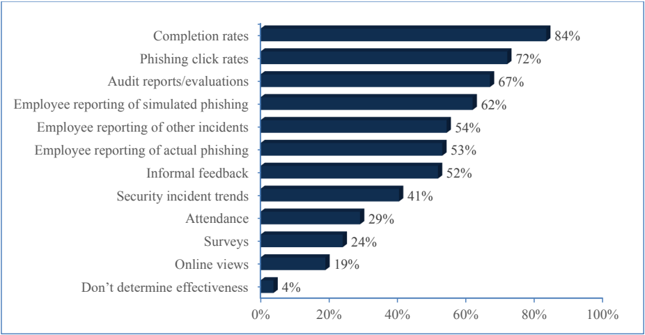
横棒グラフです。「修了率」84%、「フィッシングのクリック率」72%、「監査報告／評価」67%、「模擬フィッシングに関する従業員の報告」62%、「その他のインシデントに関する従業員の報告」54%、「実際のフィッシングに関する従業員の報告」53%、「非公式のフィードバック」52%、「セキュリティインシデントの傾向」41%、「出席」29%、「アンケート」24%、「オンラインでの閲覧数」19%、「有効性を判定していない」4%。横軸は0%〜100%です。
Figure 24: Measures of effectiveness (n=79)
図 24: 有効性の指標（n=79）
We also examined the number of effectiveness measures that participants selected (Figure 25). The majority (64%) use at least five different measures, and only 4% selected just one measure of effectiveness.
参加者が選択した有効性の指標の数も調べました（図 25）。大多数（64%）が少なくとも5種類の指標を用いており、有効性の指標を1つだけ選んだのは4%でした。
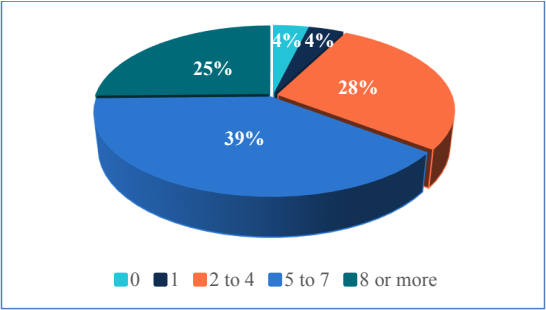
凡例付きの立体円グラフです。「0」4%、「1」4%、「2〜4」28%、「5〜7」39%、「8以上」25%。
Figure 25: Number of measures of effectiveness (n = 79)
図 25: 有効性の指標の数（n = 79）
For the number of ways organizations measure effectiveness, no statistically significant differences were found between groups.
原本PDFの抜粋画像
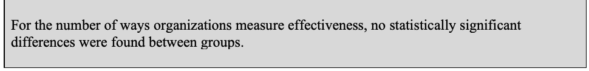
組織が有効性を測定する方法の数について、グループ間に統計的に有意な差は見られませんでした。
In the focus groups and survey, participants provided more details on the variety of methods they employ to determine the effectiveness of their security awareness programs. Training completion rates and independent inspector general (IG) audits were used to demonstrate compliance with security awareness training mandates (usually, FISMA):
フォーカスグループと調査で、参加者は、セキュリティ意識向上プログラムの有効性を判断するために用いている多様な方法について、さらに詳しく述べました。トレーニング修了率と独立した監察総監（IG）の監査は、セキュリティ意識向上トレーニングの義務（通常は FISMA）への準拠を示すために使われていました。
“We have to collect statistics on it because I think you have to report it in your CIO FISMA metrics quarterly.” (N11)
「統計を収集しなければなりません。CIO の FISMA 指標として四半期ごとに報告する必要があると思うからです。」（N11）
“We do have to track completion metrics, and we determine our agency success as 98% of our users complete it within the agency's time frame.” (N01)
「修了の指標を追跡しなければなりません。そして、ユーザーの98%が機関の期間内に修了することを、機関の成功と判断しています。」（N01）
“First is FISMA evaluation from IG. Normally, they'll tell us that they think we did a good job with training awareness or not.” (N06)
「第一に、IG による FISMA 評価です。通常、トレーニングの意識向上がうまくいったかどうかを、彼らが教えてくれます。」（N06）
Several participants indicated that they review user-generated security incidents and security operations trends to help determine whether certain security topics are being effectively taught and translated into action by the workforce.
参加者数人は、特定のセキュリティトピックが効果的に教えられ、従業員によって実際の行動に移されているかを判断するため、ユーザーから報告されたセキュリティインシデントや、セキュリティ運用の傾向を確認していると答えました。
“Current internal program is in the first year of monthly education flyers, however so far reportable incidents have declined significantly. Next step is for the team to figure out how to develop the analytics reports to support the effectiveness of the program and identify topics that need more training.” (Q65)
「現在の内部プログラムは、毎月の教育用チラシの1年目ですが、これまでのところ、報告対象のインシデントは大幅に減少しています。次のステップは、プログラムの有効性を裏付ける分析レポートをどう作成し、さらなるトレーニングが必要なトピックを特定するかを、チームが考えることです。」（Q65）
“Really it goes to how many violations and incidents we're actually seeing within our environment. So, I mean, as we see more and more of those go down, both for the real-world ones and any of our test red teaming type ones, error thing, that for us is probably the best indicator that it's actually having an effect in a positive manner.” (S01)
「結局のところ、環境内で実際にどれだけの違反やインシデントが発生しているかということです。つまり、実環境でのものも、レッドチーム形式のテストでのものも、そうしたものがどんどん減っていくのを確認できれば、それがおそらく、プログラムが実際に良い効果をもたらしていることを示す最良の指標です。」（S01）
“I would look more to our incidents and questions that we get from our help desk in terms of IT security to identify whether or not our audiences really understand that general awareness content.” (S11)
「対象者が一般的な意識向上コンテンツを本当に理解しているかどうかを判断するには、インシデントや、IT セキュリティに関してヘルプデスクに寄せられる質問を、より重視して見ます。」（S11）
Participants often used phishing simulation click rates as well as reporting of simulated and real-world phishing to determine the effectiveness of phishing-related training:
参加者は、フィッシング関連のトレーニングの有効性を判断するために、フィッシングのシミュレーションのクリック率に加え、シミュレーションと実際のフィッシングの報告も使うことが多くありました。
“The Phishing campaign we have in place with a 3rd party vendor…is measurable through their tracking of employees opening, clicking on and/or reporting test messages.” (Q78)
「サードパーティのベンダーと実施しているフィッシングキャンペーンは、…従業員がテストメッセージを開く、クリックする、報告するといった行動をベンダーが追跡することで、測定できます。」（Q78）
“We analyze the metrics that come back from our phishing exercises, the reporting of those. We look at the uptick across the type of phish that we're doing, across the incentives that we're offering, if there's an uptick in users interacting appropriately.” (N01)
「フィッシング演習から返ってくる指標、つまりその報告を分析しています。実施しているフィッシングの種類や、提供しているインセンティブごとに、ユーザーが適切に対応する割合が増えているかを見ています。」（N01）
“We'll see an uptick in who reports what they don't know to be the phishing exercise to our security operations center.” (D04)
「フィッシング演習だと知らずにセキュリティオペレーションセンターに報告する人が増えるのが分かります。」（D04）
Several organizations make use of informal or formal employee feedback to determine if their security awareness efforts are perceived as valuable:
複数の組織が、セキュリティ意識向上の取り組みが価値あるものと受け止められているかを判断するために、非公式または公式の従業員フィードバックを活用しています。
“For all of our virtual events and at the end of our training, we have surveys for all of the participants. And it gives them a rating scale and asks them, was the training effective? Was the content effective? Was the delivery or the presenter's delivery effective? And we use that feedback to measure our training.” (D06)
「すべてのバーチャルイベントとトレーニングの終了時に、全参加者へのアンケートを実施しています。評価尺度を用意して、トレーニングは効果的だったか、コンテンツは効果的だったか、提供方法や講師の話し方は効果的だったかを尋ねます。そのフィードバックを使ってトレーニングを測定しています。」（D06）
“We do get, actually, feedback from users who did click or were concerned about the [phishing] exercise, and they'll give us their opinion about certain things that they think would be more beneficial, so we started including some of that information.” (S02)
「実際に、［フィッシング］演習でクリックした、あるいは演習を気にしたユーザーからフィードバックがあり、どのような点が有益だと思うかについて意見をくれるので、そうした情報の一部を取り入れるようになりました。」（S02）
“I personally try to visit a lot of people or at least talk to them virtually throughout the year. I try to talk to as many people in my organization as possible just to get a feel for what they find out. And one of the things I usually kind of bring up at some point is security awareness. And I'll ask them, ‘Do you look at the emails from our information security email? Do you read our articles?’.” (N07)
「私個人としては、年間を通じて多くの人を訪ねるか、少なくともバーチャルで話すようにしています。組織内でできるだけ多くの人と話し、彼らが何を知ったかを把握しようとしています。そして、ほぼ必ずどこかで話題にすることの一つが、セキュリティ意識向上です。『情報セキュリティからのメールを見ていますか。私たちの記事を読んでいますか。』と尋ねます。」（N07）
“Listen to employee feedback on what they like and dislike about the program, and actually adapt to that feedback.” (Q29)
「プログラムについて従業員が気に入っている点と気に入らない点に関するフィードバックに耳を傾け、そのフィードバックに実際に合わせてください。」（Q29）
Participants elaborated on other measures of effectiveness used in their organizations, such as event attendance and views of online materials:
参加者は、イベントへの参加やオンライン資料の閲覧など、自組織で用いている他の有効性の指標についても詳しく述べました。
“We keep tally of whenever we have a speaker, we make sure that we determine all the people that are there and sort of use those as some rough stats as to success with the campaign.” (S04)
「講演者を招くたびに集計しており、そこにいた人全員を把握して、キャンペーンの成功についての大まかな統計として使っています。」（S04）
“The attendance is trending upward indicating interest in topics, presenters, and discussions.” (Q35)
「参加者数は増加傾向にあり、トピック、講演者、議論への関心が示されています。」（Q35）
“We started actually posting all of our various awareness newsletters and flyers and whatnot within our SharePoint environment. And we're using Microsoft Office 365 Dynamics to actually track everything in the interaction of our users with those to determine how many people are even going out and reading them, how long they're actually spending on them.” (S01)
「さまざまな意識向上ニュースレターやチラシなどを SharePoint 環境内に掲載し始めました。そして、Microsoft Office 365 Dynamics を使って、ユーザーとそれらとのやり取りをすべて追跡し、実際に読みに行く人がどれだけいるのか、どのくらいの時間を費やしているのかを把握しています。」（S01）
“For the news articles on the internet, we have questions of the week, and we use the results of the questions of the week that are posted after the article is posted with the hope that the user has read the article and then is able to successfully answer the question.” (D06)
「インターネット上のニュース記事については、今週の質問を用意しており、記事の公開後に掲載される今週の質問の結果を使っています。ユーザーが記事を読んでいて、質問に正しく答えられることを期待してのことです。」（D06）
5.2 Compliance as Indicator of Success
5.2 成功の指標としてのコンプライアンス
To determine if compliance with government mandatory training requirements (e.g., as measured by training completion rates) was regarded as the most important indicator of program success, in the survey we asked participants to rate their agreement with two statements on a five-point scale ranging from strongly disagree to strongly agree (see Figure 26).
政府の必須トレーニング要件への準拠（たとえば、トレーニング修了率で測定されるもの）が、プログラムの成功の最も重要な指標と見なされているかを判断するため、調査では、参加者に2つの記述への同意度を、「強く反対」から「強く賛成」までの5段階で評価してもらいました（図 26 を参照）。
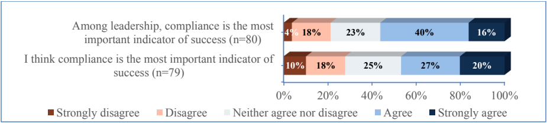
100% 積み上げ横棒グラフ（0%〜100%）です。凡例は「強く反対」、「反対」、「どちらともいえない」、「賛成」、「強く賛成」です。各棒の区分には左から次の割合が表示されています。「経営層において、コンプライアンスは成功の最も重要な指標である（n=80）」：4%、18%、23%、40%、16%。「コンプライアンスは成功の最も重要な指標であると思う（n=79）」：10%、18%、25%、27%、20%。
Figure 26: Agreement that compliance is the most important indicator of success
図 26: コンプライアンスが成功の最も重要な指標であるという意見への同意
Among leadership, compliance is the most important indicator of success: In the first statement, participants were asked to indicate whether they believed their organization’s leadership thinks compliance is the most important indicator of security awareness program success. Over half of responding participants (56%) agreed or strongly agreed with this statement, and 22% either disagreed or strongly disagreed.
経営層においては、コンプライアンスが成功の最も重要な指標である: 最初の記述では、自組織の経営層がコンプライアンスをセキュリティ意識向上プログラムの成功の最も重要な指標だと考えていると思うかどうかを、参加者に尋ねました。回答した参加者の過半数（56%）がこの記述に賛成または強く賛成し、22%が反対または強く反対しました。
In the focus groups, several participants commented on how compliance metrics garner leadership attention:
フォーカスグループでは、参加者数人が、コンプライアンス指標が経営層の注意をどのように引くかについてコメントしました。
“We have found that, yes, management pays attention to things with compliance, but that, in my mind, doesn't really identify effectiveness…We've also really found audits to be effective in helping push the cause. Now, that doesn't identify effectiveness either, but it does help increase management awareness and attention to supporting these programs.” (S11)
「確かに、経営陣はコンプライアンスに関わるものに注意を払いますが、私の考えでは、それは有効性を実際に示すものではありません。…また、監査は、この取り組みを後押しするのに効果的だということも分かりました。もちろん、これも有効性を示すものではありませんが、これらのプログラムを支援することに対する経営陣の認識と注意を高める助けにはなります。」（S11）
“When FISMA scores are involved, I think management looks at FISMA being green as effectiveness.” (S10)
「FISMA のスコアが絡むと、経営陣は FISMA がグリーンであることを有効性と見なしていると思います。」（S10）
I think compliance is the most important indicator of success: In the second statement, participants were asked to rate their agreement related to their own opinion on compliance being the most important indicator of program success. As compared to the leadership perspective, fewer (47%) agreed or strongly agreed with this statement and more (28%) disagreed or strongly disagreed.
私は、コンプライアンスが成功の最も重要な指標だと考える: 2番目の記述では、コンプライアンスがプログラムの成功の最も重要な指標であるという参加者自身の意見について、同意度を評価してもらいました。経営層の見方と比べると、この記述に賛成または強く賛成した割合は低く（47%）、反対または強く反対した割合は高くなっていました（28%）。
No statistically significant differences for the two compliance statements were found between groups.
原本PDFの抜粋画像
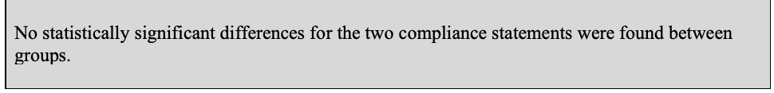
2つのコンプライアンスに関する記述について、グループ間に統計的に有意な差は見られませんでした。
Despite almost half of survey participants believing compliance is the most important indicator of success, many participants in both the focus groups and survey voiced a concern that compliance metrics in the form of training completion rates, although required, do not demonstrate long-term attitude or behavior change, which should be the real goals of security awareness training.
調査参加者のほぼ半数がコンプライアンスを成功の最も重要な指標だと考えているにもかかわらず、フォーカスグループと調査の多くの参加者は、トレーニング修了率という形のコンプライアンス指標は、要求されているものではあるものの、長期的な態度や行動の変容を示しておらず、それこそがセキュリティ意識向上トレーニングの真の目標であるはずだという懸念を述べました。
“Completion of training is one statistic, but that doesn't really tell you whether anything's sunk in. It tells you that they got through the course, and they took it in record time, maybe, and they're done.” (N11)
「トレーニングの修了は一つの統計ですが、何かが身に付いたかどうかは実際には分かりません。コースを終えたこと、おそらく記録的な速さで受講して終わったことが分かるだけです。」（N11）
“We do not want to offer training just to check the box just for compliance. We know that there is a compliance piece, but I have been working very hard to try to offer training that kind of coincides with different people's learning styles because I want the training to be effective. I want to change user behavior. I want us to be safe.” (N09)
「コンプライアンスのためだけにチェックボックスを埋めるようなトレーニングは提供したくありません。コンプライアンスの側面があることは分かっていますが、トレーニングが効果的であってほしいので、人それぞれの学習スタイルに合ったトレーニングを提供しようと、非常に努力してきました。ユーザーの行動を変えたいのです。私たちが安全であってほしいのです。」（N09）
“[Security awareness is] ensuring that they [employees] are receiving appropriate training, obviously, to meet federal requirements, but also to kind of go above and beyond that to actually ensure that that training is effective.” (D03)
「［セキュリティ意識向上とは］従業員が適切なトレーニングを受けられるようにすることです。当然、連邦の要件を満たすためですが、それを超えて、そのトレーニングが本当に効果的であることを確実にすることでもあります。」（D03）
“I believe that training is a mechanism to inform and change behavior rather than being just a compliance measure.” (Q53)
「トレーニングは、単なるコンプライアンス対策ではなく、情報を伝え、行動を変えるための仕組みだと考えています。」（Q53）
“Audits are not tying training to outcomes, so leadership is focused on what the auditors are measuring and making recommendations to improve (e.g. did everyone take training?). Auditors rarely comment on the quality or likely effectiveness of training content, or use their own testing (e.g. phishing, knowledge testing of sample of users) to find out what is really going on (actual effectiveness/outcomes, versus presence of checklist items that might or might not be achieving the desired outcomes).” (Q43)
「監査はトレーニングを成果に結び付けて評価していないため、経営層は監査人が測定し、改善を勧告していること（たとえば、全員がトレーニングを受けたか）に注目しています。監査人がトレーニング内容の質や有効性の見込みについてコメントすることはまれです。また、実際に何が起きているのか（望ましい成果を達成しているかどうか分からないチェックリスト項目があるかどうかではなく、実際の有効性や成果）を把握するために、自らテスト（たとえば、フィッシングや、サンプルユーザーへの知識テスト）を行うこともほとんどありません。」（Q43）
“Given that 95% of major Federal incidents were caused by negligent or indifferent staff,…we need to move beyond awareness and compliance and get to a full Organizational Change Management Approach (perhaps ADKAR [Awareness, Desire, Knowledge, Ability and Reinforcement]) that is based on measuring changing mindsets and behavior. Annual training is not enough to move the needle.” (Q56)
「連邦の主要なインシデントの95%が、不注意または無関心な職員が原因だったことを踏まえると、…意識向上とコンプライアンスを超えて、考え方や行動の変化の測定に基づく、組織変革管理アプローチ全体（たとえば ADKAR［Awareness（認知）、Desire（願望）、Knowledge（知識）、Ability（能力）、Reinforcement（強化）］）に進む必要があります。年次トレーニングだけでは状況を動かすのに十分ではありません。」（Q56）
5.3 Using Effectiveness Data
5.3 有効性データの活用
We asked participants how their security awareness program uses the program effectiveness data (Figure 27). Most commonly, programs use the data to demonstrate training compliance (78%). or to improve or inform the program (70%). Over half use the data to demonstrate the value of their program to leadership (58%). Less than a quarter provide the data to employees (24%) or pass on the data to help other groups in the organization (22%).
セキュリティ意識向上プログラムが有効性データをどのように使っているか、参加者に尋ねました（図 27）。最も多かったのは、トレーニングへの準拠を示すため（78%）、またはプログラムの改善や検討に役立てるため（70%）にデータを使うことでした。半数を超えるプログラムは、経営層にプログラムの価値を示すためにデータを使っています（58%）。従業員にデータを提供したり（24%）、組織内の他のグループを支援するためにデータを共有したり（22%）しているプログラムは、4分の1未満です。
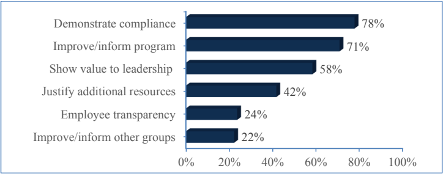
横棒グラフです。「準拠の実証」78%、「プログラムの改善／検討への活用」71%、「経営層への価値の提示」58%、「追加リソースの正当化」42%、「従業員への透明性」24%、「他のグループの改善／検討への活用」22%。横軸は0%から100%です。
Figure 27: How effectiveness data is used (n=72)
図 27: 有効性データの使い方（n=72）

グループ間に統計的に有意な差は見られませんでした。
Participants provided examples of how they use effectiveness data:
参加者は、有効性データの使い方の例を示しました。
“We do have compliance metrics that we report. Management does pay attention to that, and it does heighten awareness with staff that.” (S11)
「報告しているコンプライアンス指標があります。経営陣はそれに注意を払っており、それが職員の意識を高めてもいます。」（S11）
“I pretty much monitor the type of incidents that come in. And there's two threat vectors that generally indicate how well the user base is aware of what's going on, particularly around improper usage and with email-based threat vectors. So, [if] those numbers are low and it makes sense, fantastic.” (N06)
「私は主に、発生するインシデントの種類を監視しています。特に不適切な使用や電子メールを介した脅威に関して、ユーザー全体が状況をどの程度認識しているかを一般に示す脅威ベクトルが2つあります。ですから、［もし］その数値が低く、状況に照らして妥当であれば、素晴らしいことです。」（N06）
“Capture metrics to show where you started (e.g. phishing susceptibility, training rates, incident data), inform your program's strategy and tactics, and show progress.” (Q43)
「出発点を示す指標（たとえば、フィッシングへの感染しやすさ、トレーニング率、インシデントデータ）を収集し、プログラムの戦略と戦術に情報を提供し、進捗を示してください。」（Q43）
5.4 Manager Preferences for Demonstrating Effectiveness
5.4 有効性を示すための管理職の選好
For those participants who were managers or executives involved in making decisions about the security awareness program, we asked an open-ended question about what data would help demonstrate the value and effectiveness of the program to them. Twenty-nine participants answered this question. Table 1 shows the types of data mentioned by participants, example responses, and the number of participants indicating that this type of data would be helpful to them.
セキュリティ意識向上プログラムに関する意思決定に関わる管理職または幹部職員である参加者には、プログラムの価値と有効性を自分たちに示すうえで、どのようなデータが役立つかを、自由回答式の質問で尋ねました。29人の参加者がこの質問に答えました。表 1 は、参加者が挙げたデータの種類、回答例、およびこの種類のデータが自分たちに役立つと答えた参加者の数を示しています。
Security incidents were the most frequently mentioned type of valuable data (59% of those responding to this question). In addition, the mapping of relationships between different data types (e.g., completion rates, security incidents, phishing click rates) was mentioned by four participants (14%) as being valuable in identifying trends and areas needing additional attention. However, in the previous question on measures of effectiveness, only 41% said that their security awareness program uses security incident data, possibly demonstrating a gap in current measures. Compliance metric data in the form of phishing metrics (31%) and training completion rates (24%) were other commonly mentioned data types. This differs from the 56% of survey participants who believed that their management thinks compliance is the most important indicator of success.
セキュリティインシデントは、価値あるデータとして最も多く挙げられました（この質問に回答した人の59%）。さらに、異なる種類のデータ（たとえば、修了率、セキュリティインシデント、フィッシングのクリック率）の関係のマッピングは、傾向や追加の注意が必要な領域を特定するのに価値があるとして、4人の参加者（14%）が挙げました。しかし、有効性の指標に関する前の質問では、自組織のセキュリティ意識向上プログラムがセキュリティインシデントデータを使っていると答えたのは41%にとどまり、現在の指標にギャップがあることを示している可能性があります。フィッシング指標（31%）とトレーニング修了率（24%）という形のコンプライアンス指標データが、他によく挙げられたデータの種類でした。これは、自組織の経営陣がコンプライアンスを成功の最も重要な指標だと考えていると思うと答えた調査参加者の56%とは異なります。
Table 1: Manager perspective - Data demonstrating security awareness program value (n = 29)
表 1: 管理職の見方 - セキュリティ意識向上プログラムの価値を示すデータ（n = 29）
| Type of Data | Example Responses | Number Participants |
|---|---|---|
| Security incidents | “We also need incidents more granularly analyzed and categorized as to the types of human actions/inactions that contributed, and who, so we can adjust both general training and targeted follow-up training with individuals (i.e. organizational and individual needs assessment).” (Q43) | 17 |
| Phishing data | “Effectiveness is generally measured by phishing reporting to the security team or phishing clicks during a phishing exercise.” (Q74) | 9 |
| Completion rates | “Metrics for timely completion of training” (Q38) | 7 |
| Employee/user feedback | “We also review feedback of the training.” (Q39) “Surveys” (Q88) | 6 |
| Other employee demonstrations of behavior | “Ability to recognize areas of concern” (Q93) “Adhering to the rules of behavior” (Q39) | 6 |
| Data relationships | “The data that would be most beneficial to demonstrate the value and effectiveness of the security awareness program would be the annual CSAT [cybersecurity awareness training], IT Professional/Role Based Training, and Phishing Click data graphed with the Network Monitoring data and Helpdesk reporting data on attempted non-approved access, Phishing and Spam email blocks, and other similar type data to show and compare between user knowledge and actions.” (Q17) | 4 |
| Training topics | “Categories of questions pertaining to each area of operations (e.g., HR, Legal, Program & Project operations, Scientific & Engineering groups, IT specialties, Business Intelligence & Decision management, etc). Topical areas help to identify the practical application of cybersecurity across the organization and in each phase of lifecycle management/operations.” (Q38) | 4 |
| Employee reporting | “The number of staff who actually recognized an incident, report them, and follow recommended practices. If staff don't do these basic things then they have not learned and the program is not successful.” (Q30) | 3 |
| Participation, attendance | “Event attendance” (Q24) | 3 |
| External data | “Other federal data on compliance with training mandates” (Q41) “peer agency metrics” (Q83) | 3 |
| Knowledge testing | “Exam scores, number of times a course is repeated, most likely failed questions, most often passed questions” (Q38) | 3 |
| データの種類 | 回答例 | 参加者数 |
|---|---|---|
| セキュリティインシデント | 「一般的なトレーニングと、個人に対するフォローアップのトレーニング（すなわち、組織および個人のニーズアセスメント）の両方を調整できるように、インシデントを、寄与した人間の行為／不作為の種類とその当事者別に、より細かく分析し分類する必要もあります。」（Q43） | 17 |
| フィッシングデータ | 「有効性は一般に、セキュリティチームへのフィッシングの報告や、フィッシング演習中のフィッシングのクリックによって測定されます。」（Q74） | 9 |
| 修了率 | 「トレーニングを期限内に修了した割合の指標」（Q38） | 7 |
| 従業員／ユーザーのフィードバック | 「トレーニングのフィードバックも確認しています。」（Q39） 「アンケート」（Q88） | 6 |
| 従業員のその他の行動の実証 | 「懸念される領域を認識する能力」（Q93） 「行動規則の遵守」（Q39） | 6 |
| データの関係 | 「セキュリティ意識向上プログラムの価値と有効性を示すのに最も有益なデータは、年次の CSAT［サイバーセキュリティ意識向上トレーニング］、IT 専門職／役割別トレーニング、フィッシングのクリックデータを、ネットワーク監視データや、承認されていないアクセスの試み、フィッシングおよびスパムメールのブロックに関するヘルプデスクの報告データ、その他の同様の種類のデータとあわせてグラフ化し、ユーザーの知識と行動を示して比較することです。」（Q17） | 4 |
| トレーニングのトピック | 「業務の各領域（たとえば、人事、法務、プログラム・プロジェクト運営、科学・工学グループ、IT の専門分野、ビジネスインテリジェンス・意思決定管理など）に関する質問カテゴリー。トピック領域は、組織全体およびライフサイクル管理／運用の各フェーズにおけるサイバーセキュリティの実践的な適用を特定するのに役立ちます。」（Q38） | 4 |
| 従業員の報告 | 「実際にインシデントを認識し、報告し、推奨される実践に従った職員の数。職員がこうした基本的なことをしないなら、学習できておらず、プログラムは成功していません。」（Q30） | 3 |
| 参加、出席 | 「イベントへの出席」（Q24） | 3 |
| 外部データ | 「トレーニングの義務への準拠に関する他の連邦のデータ」（Q41） 「同等の機関の指標」（Q83） | 3 |
| 知識テスト | 「試験の点数、コースを繰り返した回数、最も不正解になりやすい質問、最も正解になりやすい質問」（Q38） | 3 |
5.5 Overall Program Success
5.5 プログラム全体の成功
We asked participants to rate the success of their security awareness program on a four-point scale ranging from “very unsuccessful” to “very successful.” As shown in
セキュリティ意識向上プログラムの成功を、「まったく成功していない」から「非常に成功している」までの4段階で評価してもらいました。図 28 に示すとおり、
Figure 28, 77% rated their programs as moderately or very successful. Only 4% rated their programs as very unsuccessful.
図 28 のとおり、77%が自組織のプログラムをある程度または非常に成功していると評価しました。「まったく成功していない」と評価したのは4%にとどまりました。
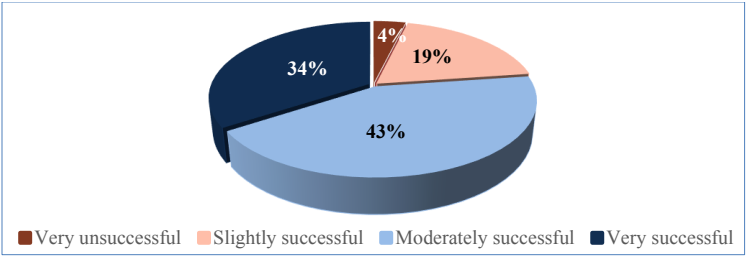
凡例付きの立体円グラフです。「まったく成功していない」4%、「やや成功している」19%、「ある程度成功している」43%、「非常に成功している」34%。
Figure 28: Program success ratings (n=80)
図 28: プログラムの成功の評価（n=80）
グループ間に統計的に有意な差は見られませんでした。
During the focus groups, participants differed on the ultimate indicator of success for their security awareness program. Many emphasized compliance:
フォーカスグループでは、セキュリティ意識向上プログラムの最終的な成功指標について、参加者の意見が分かれました。多くの参加者はコンプライアンスを強調しました。
“Our ability to get 99% of our workforce compliant with their annual security awareness training.” (Q23)
「従業員の99%に年次のセキュリティ意識向上トレーニングを遵守させられたことです。」（Q23）
“Our most successful aspect is our 99.9% completion rate with over 40K employees.” (Q39)
「最も成功している点は、4万人超の従業員で修了率99.9%を達成していることです。」（Q39）
“100% training compliance before the deadline.” (S06)
「期限前のトレーニングコンプライアンス100%。」（S06）
However, others saw overall success as being grounded in a tangible reduction in incidents:
しかし、全体としての成功は、インシデントの具体的な減少に根ざしていると見る参加者もいました。
“It is the reduction, the elimination or reduction, mitigation of all those threats and vulnerabilities, those incidents that have to be reported and even those that don't have to be reported just you want to make sure that we have smooth sailing as far as our daily operations, that there's no impact to the way– the service that we're supposed to provide for the federal government.” (S08)
「報告しなければならないものも、報告する必要がないものも含めて、そうした脅威や脆弱性、インシデントのすべてが減ること、なくなること、緩和されることです。日々の運用が円滑に進み、連邦政府に提供することになっているサービスに影響が出ないようにしたいのです。」（S08）
“That is really the number of incidents that we end up having and tracked throughout the year and ultimately, not to be on the five o'clock news for some type of compromise or breach.” (S01)
「実際のところ、年間を通じて発生し追跡したインシデントの数であり、最終的には、何らかの危殆化や侵害で夕方5時のニュースに出ないことです。」（S01）
5.6 Challenges: Determining Program Success
5.6 課題: プログラムの成功の判断
We asked participants to rate challenges experienced by their programs related to determining program success on a five-point scale ranging from “very challenging” to “not at all challenging” with a “does not apply” (N/A) option (Figure 29). The remainder of this section provides detail on survey results for each challenge and includes example supporting quotes from focus group and survey participants.
プログラムの成功の判断に関連して各プログラムが経験する課題を、「非常に困難」から「まったく困難ではない」までの5段階と、「該当しない」（N/A）の選択肢で評価してもらいました（図 29）。本節の残りでは、各課題に関する調査結果を詳しく説明し、フォーカスグループと調査の参加者からの裏付けとなる引用例を含めます。
![100% stacked horizontal bar chart (0% to 100%) with the legend: “Very challenging”, “Moderately challenging”, “Slightly challenging”, “Not at all challenging”, “N/A”. Percentage labels shown on the segments, from left to right: “Determining what/how to measure (n=74)”: 12%, 32%, 39%, 14%, 3%; “Effectively presenting data to leadership (n=76)”: 11%, 26%, 30%, 30%, 3%; “Integrating data with other groups' data (n=76)”: 20%, 28%, 26%, 11%, 16%; “Benchmarking against other fed orgs (n=76)”: 30%, 26%, 18%, 14%, 11%.](assets/ir-8420a/p0057-figure-01.png)
100% 積み上げ横棒グラフ（0%〜100%）です。凡例は「非常に困難」、「ある程度困難」、「やや困難」、「まったく困難ではない」、「該当なし」です。各項目の割合は左から順に示されています。「測定する内容／方法を決める (n=74)」12% / 32% / 39% / 14% / 3%、「経営層にデータを効果的に提示する (n=76)」11% / 26% / 30% / 30% / 3%、「他グループのデータと統合する (n=76)」20% / 28% / 26% / 11% / 16%、「他の連邦機関とベンチマークする (n=76)」30% / 26% / 18% / 14% / 11%。
Figure 29: Challenges – Determining program success
図 29: 課題 – プログラムの成功の判断
For all challenges, no statistically significant differences were found between groups.
原本PDFの抜粋画像
いずれの課題についても、グループ間に統計的に有意な差は見られませんでした。
Determining what and how to measure: Forty-four percent of survey participants thought that determining what to measure and how to measure program effectiveness was very or moderately challenging. Only 14% found it not at all challenging.
何を、どのように測定するかを決めること: 調査参加者の44%は、何を、どのようにプログラムの有効性を測定するかを決めることが非常にまたはある程度困難だと考えていました。まったく困難ではないと答えたのは14%のみでした。
Although most programs make at least some attempt to determine success, almost half of focus group participants expressed uncertainty about how to gauge effectiveness:
ほとんどのプログラムは成功を判断しようとする何らかの試みを行っていますが、フォーカスグループの参加者のほぼ半数は、有効性をどのように測るかについて不確かだと述べました。
“How do we determine whether or not it is effective? We have not come up with that solution yet, but that's one of the things that we're taking a look at as we roll out these trainings. To see how are we making an impact? How are we making a difference when we educate our workforce?” (N04)
「有効かどうかをどう判断するのか。その解決策はまだ見つかっていませんが、これらのトレーニングを展開するにあたって検討していることの一つです。自分たちがどのような影響を与えているのか。従業員を教育することで、どのような違いを生んでいるのか。」（N04）
“How effective? That's a very, very difficult thing to determine. With some training, you might include an assessment of how well the participant listened, based upon a test or something like that, but when you train someone in an activity, unless you circle back to see how well they are employing what they've learned, I just don't know how you are going to really bonify the effectiveness of your program.” (S03)
「どれだけ有効か。それを判断するのは非常に、非常に難しいことです。トレーニングによっては、テストなどに基づいて、参加者がどれだけ注意深く聞いていたかを評価できます。しかし、ある活動について誰かをトレーニングした場合、学んだことをどれだけうまく実践しているか後で確認しない限り、プログラムの有効性を実際にどう確かめるのか、私には分かりません。」（S03）
“From my agency that's been kind of one of my gripes personally, is that we really don't do kind of an effective type of measurements, we don't really have the baseline. We kind of figure out what the requirement is and what we know people have to do. But we really don't do a whole bunch of the other side of the feedback loop.” (S08)
「個人的に不満の一つなのですが、当機関では実際には有効な種類の測定をしておらず、ベースラインもありません。要件が何か、人々が何をしなければならないかは把握しています。しかし、フィードバックループのもう一方の側はほとんど行っていません。」（S08）
“We run security awareness campaigns and…we really have no idea how much of it is absorbed” (S04).
「セキュリティ意識向上キャンペーンを実施していますが、…その内容がどのくらい吸収されているのか、まったく分かりません」（S04)。
Participants expressed a desire for more government guidelines on how to measure effectiveness:
参加者は、有効性の測定方法に関する政府のガイドラインがもっと欲しいと述べました。
“I feel a lot of people are really challenged by this is metrics, everything as far as metrics for effectiveness of the programs, coming up with something standard that all the departments and agencies could actually end up measuring or have measured for them to try and really determine whether or not the programs that are out there are effective or what parts need to actually be focused on.” (S01)
「多くの人が、これに本当に苦労していると感じます。つまり指標です。プログラムの有効性に関する指標のすべてについて、すべての省庁や機関が測定できる、あるいは測定してもらえる標準的なものを考え出して、実施されているプログラムが有効かどうか、どの部分に実際に注力すべきかを本当に判断することです。」（S01）
“Government standards on…measuring effectiveness.” (Q75)
「有効性の測定に関する政府の標準。」（Q75）
“Analysis procedures on phishing data would be useful. Outside of individual campaigns, it is difficult to analyze and understand issue areas that phishing campaigns could assist in identifying.” (S11)
「フィッシングデータの分析手順があると有用でしょう。個々のキャンペーンを超えて、フィッシングキャンペーンが特定に役立つ問題領域を分析し理解することは困難です。」（S11）
“I think some federal guidance on how we can all track the effectiveness of our programs would be good.” (D03)
「各自のプログラムの有効性を、私たち全員がどう追跡できるかについての連邦のガイダンスがあれば、よいと思います。」（D03）
Despite challenges in finding good measures of effectiveness, one survey participant had this advice:
有効性の適切な指標を見つけることに課題がある中で、調査参加者の一人は次のようにアドバイスしました。
“Don't let incomplete or imperfect data stand in the way of moving forward with changing behavior for the positive.” (Q27)
「不完全なデータや不十分なデータのせいで、行動を良い方向に変える取り組みを止めてはいけません。」（Q27）
Effectively presenting data to leadership: Presenting program data to leadership in an effective way was deemed very or moderately challenging by 37% of survey participants. Thirty percent found it to be not challenging at all.
データを経営層に効果的に提示すること: プログラムのデータを経営層に効果的に提示することは、調査参加者の37%が非常にまたはある程度困難だと考えていました。まったく困難ではないと答えたのは30%でした。
One focus group participant expressed frustration with not being able to convince her leadership to help solve challenges faced by the security awareness team:
フォーカスグループの参加者の一人は、セキュリティ意識向上チームが直面する課題の解決に協力するよう、自組織の経営層を説得できないことへの不満を述べました。
“I have no idea how to solve the issues and challenges as even though I have expressed challenges to the Department it appears they all fall on deaf ears.” (S09)
「問題や課題をどう解決すればよいか分かりません。省に課題を伝えてきましたが、すべて聞き流されているように思えるからです。」（S09）
Other participants recommended the type of information that should be provided to leadership:
他の参加者は、経営層に提供すべき情報の種類を提案しました。
“Write up some type of training and awareness program plan so that you can document what it is that you want the program to do and how you want it to work and all of the players that would be involved so that you can brief senior leadership on that, because if you don't have their buy-in, then your program is probably not going to go anywhere.” (D02)
「何かしらのトレーニングおよび意識向上プログラムの計画書を作成して、プログラムに何をさせたいのか、どのように機能させたいのか、関与するすべての関係者を文書化し、上級経営層に説明できるようにしてください。彼らの賛同が得られなければ、プログラムはおそらくどこにも進まないからです。」（D02）
“If you can, get leadership's attention early. Have them sign-off on the list of topics you plan to cover. My CISO is very hands on, so I gave him a spreadsheet that stated the topic, the media type used to cover that topic, if there was a knowledge check/test question on it.” (Q37)
「可能であれば、早い段階で経営層の注意を引いてください。取り上げる予定のトピックの一覧を承認してもらいます。私の CISO は非常に現場主義なので、トピック、そのトピックを扱うメディアの種類、そのトピックに関する知識確認／テスト問題があるかどうかを記載したスプレッドシートを渡しました。」（Q37）
“Focus awareness program and communications with leadership on reducing actual risk to systems and data, not on compliance with minimal requirements (which are not enough to adequately reduce risk).” (Q43)
「意識向上プログラムと経営層とのコミュニケーションは、（リスクを十分に低減するには足りない）最低限の要件へのコンプライアンスではなく、システムとデータの実際のリスクを低減することに焦点を当ててください。」（Q43）
Integrating/correlating security awareness data with data collected by other groups in my organization: Being able to bring together data from multiple groups to inform the security awareness program was viewed as very or moderately challenging by 48% of survey participants. Only 11% said they were not at all challenged with this.
セキュリティ意識向上のデータを、自組織内の他のグループが収集したデータと統合／相関させること: セキュリティ意識向上プログラムに情報を提供するために複数のグループのデータをまとめることは、調査参加者の48%が非常にまたはある程度困難だと考えていました。まったく困難ではないと答えたのは11%のみでした。
A few focus group participants commented on how their organizations are not currently correlating security awareness data with security incident data:
フォーカスグループの参加者数人は、自組織が現在、セキュリティ意識向上のデータをセキュリティインシデントのデータと相関させていないことについてコメントしました。
“Ideally, you'd be able to track the incidents and see based on your security awareness and training and if your incidents are going down. We are not doing that probably due to lack of resources.” (S06)
「理想的には、インシデントを追跡して、セキュリティ意識向上およびトレーニングに基づいてインシデントが減っているかどうかを確認できるはずです。しかし、おそらくリソースの不足のために、それはできていません。」（S06）
“I hear a bunch of people saying that you guys use the number of incidents as a metric…I'm sort of struggling with that because I came from the technical side and didn't start off as a trainer or in the training field, and there's just so many attack vectors. I don't understand how you can associate incidents with the training.” (S04)
「皆さんが指標としてインシデント数を使っていると、多くの人が言うのを聞きます。…私はそれにやや苦労しています。技術畑の出身で、トレーナーやトレーニング分野から始めたわけではなく、攻撃ベクトルは非常に多いからです。インシデントをトレーニングとどう関連付けられるのか、理解できません。」（S04）
Benchmarking my organization against other federal organizations: Over half (56%) of survey participants felt challenged to benchmark (compare) their organization’s security awareness program against programs in other government organizations. Several participants expressed a desire to have more federal information as a comparison point:
自組織を他の連邦組織と比較評価（ベンチマーク）すること: 調査参加者の半数超（56%）は、自組織のセキュリティ意識向上プログラムを他の政府組織のプログラムと比較評価（ベンチマーク）することが困難だと感じていました。参加者数人は、比較の基準として、連邦の情報をもっと得たいと述べました。
“What we've been looking for is click rates in the government, right? There's industry click rates and surveys and stuff like that for phishing examples. But even talking with DHS, they don't have any click-rate studies or surveys.” (N08)
「私たちが探しているのは、政府におけるクリック率です。業界のクリック率や、フィッシングの例についての調査などはあります。でも、DHS と話しても、クリック率の研究も調査もありません。」（N08）
“With our phishing exercise results, I would love to have a different measurement. I would love to have a different baseline or, I agree, a standard way of looking at our agency or across agencies or across departments. We could judge apples to apples to know where we are, how we stand up to someone else, and where we could focus our training so that where we are making improvement where it is needed, not just wherever it's required.” (S08)
「フィッシング演習の結果については、別の測定方法がほしいと切に思います。別のベースライン、あるいは、おっしゃるとおり、自分たちの機関や機関間、省庁間を見るための標準的な方法がほしいです。同じ条件で比較して、自分たちの位置や、他と比べてどうかを知り、トレーニングをどこに集中すれば、単に要求されている部分ではなく、必要な部分で改善できるかを判断できます。」（S08）
“Other federal data on compliance with training mandates” (Q41)
「トレーニングの義務への準拠に関する他の連邦のデータ」（Q41）
6 Program Support
6 プログラムへの支援
Participants rated their level of agreement (from strongly disagree to strongly agree) for several statements related to organizational views on security and support for the security awareness program. The following subsections describe the results.
参加者は、セキュリティに関する組織の見方とセキュリティ意識向上プログラムへの支援に関するいくつかの記述について、同意度（「強く反対」から「強く賛成」まで）を評価しました。以下の各節で結果を説明します。
6.1 Organizational Support for Security
6.1 セキュリティに対する組織の支援
Survey participants indicated their agreement with three statements related to organizational support for and recognition of the relevancy of security. Agreement was indicated on a five-point scale ranging from “strongly disagree” to “strongly agree.” Figure 30 shows the results for each statement.
調査参加者は、セキュリティに対する組織の支援とセキュリティの関連性の認識に関する3つの記述への同意度を示しました。同意度は、「強く反対」から「強く賛成」までの5段階で示されました。図 30 に各記述の結果を示します。
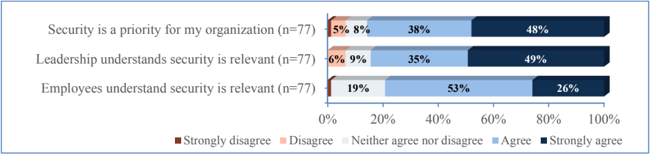
100% 積み上げ横棒グラフ（0%〜100%）です。凡例は「強く反対」、「反対」、「どちらともいえない」、「賛成」、「強く賛成」です。各棒の区分に左から次の割合が表示されています。「セキュリティは自組織の優先事項である（n=77）」5% / 8% / 38% / 48%、「経営層はセキュリティが関連することを理解している（n=77）」6% / 9% / 35% / 49%、「従業員はセキュリティが関連することを理解している（n=77）」19% / 53% / 26%。細い区分には割合が表示されていないものがあります。
Figure 30: Agreement for statements about organizational support for security
図 30: セキュリティに対する組織の支援に関する記述への同意
No statistically significant differences were found between groups.
原本PDFの抜粋画像
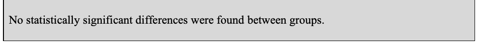
グループ間に統計的に有意な差は見られませんでした。
Security is a priority for my organization: A large majority of survey respondents (86%) agreed or strongly agreed that security is a priority for their organizations. Only 6% disagreed or strongly disagreed.
セキュリティは自組織の優先事項である: 調査回答者の大多数（86%）が、セキュリティは自組織の優先事項であることに賛成または強く賛成しました。反対または強く反対したのは6%のみでした。
As reflected in the survey, most focus group participants believed security was a priority for their organization. For example, a security awareness program lead commented:
調査に見られたように、フォーカスグループの参加者のほとんどは、セキュリティは自組織の優先事項だと考えていました。たとえば、あるセキュリティ意識向上プログラムの責任者は、次のようにコメントしました。
“We've built a security culture over the past– what, since 2003, when GISRA [Government Information Security Reform Act] and FISMA first came out and security awareness training was a requirement. I've seen changes.” (N11)
「GISRA［政府情報セキュリティ改革法］と FISMA が最初に出て、セキュリティ意識向上トレーニングが要件となった2003年以来、私たちはセキュリティ文化を築いてきました。変化を見てきました。」（N11）
However, one participant felt that security was not valued in his Department:
しかし、ある参加者は、自分の省ではセキュリティが重視されていないと感じていました。
“In our organization, our mission does not incorporate security in the same way a lot of other agencies do. So, it's not a priority.” (D05)
「当組織では、他の多くの機関のようには、ミッションにセキュリティが組み込まれていません。そのため、優先事項ではありません。」（D05）
My organization’s leadership understands how/why security is relevant to them: When asked to indicate whether their leadership understands how security is relevant to them, 84% answered affirmatively. Only 6% disagreed, with no participants strongly disagreeing.
自組織の経営層は、セキュリティが自分たちにとってどのように／なぜ関連するかを理解している: 経営層がセキュリティが自分たちにとってどのように、またはなぜ関連するかを理解しているかを尋ねたところ、84%が肯定的に答えました。反対したのは6%のみで、強く反対した参加者はいませんでした。
A few participants remarked that their management valued security:
参加者数人は、自組織の経営陣がセキュリティを重視していると述べました。
“We have great support for our security and privacy program as well, and that matters…If you hear management talking about security and privacy in various conversations, then you know that the word is kind of out and that people are on board with it. So, that's kind of what I listen for.” (N11)
「セキュリティとプライバシーのプログラムにも大きな支援があり、それは重要です。…経営陣がさまざまな会話でセキュリティとプライバシーについて話しているのを耳にすれば、そのことがある程度周知され、人々が賛同していると分かります。ですから、私はそうした話が出るかどうかに耳を傾けています。」（N11）
“Strong leadership by example” (Q51)
「模範によって示される力強いリーダーシップ」（Q51）
The employees in my organization understand how/why security is relevant to them: As compared to leadership’s understanding of the importance of security, slightly fewer (79%) participants thought the employees in their organizations understand the relevancy, while more (19% vs 9%) were neutral. Only 1% strongly disagreed.
自組織の従業員は、セキュリティが自分たちにとってどのように／なぜ関連するかを理解している: セキュリティの重要性に対する経営層の理解と比べると、自組織の従業員が関連性を理解していると考えた参加者はやや少なく（79%）、中立の参加者は多くなっていました（19%対9%）。強く反対したのは1%のみでした。
Participants stressed the importance of ensuring the information is viewed as personally relevant to employees and their specific roles within the organization:
参加者は、情報が従業員個人と、組織内での従業員の具体的な役割にとって関連のあるものと見なされるようにすることの重要性を強調しました。
“Making sure that when we do pick content or that we're doing some training, that we bring it home for people so they can relate to it. So, we give a lot of examples of things that actually do happen. Some of these things are kind of crazy, but they do happen in the real world.” (N04)
「コンテンツを選ぶときやトレーニングを行うときは、人々が自分のこととして捉えられるように、身近に感じさせるようにしています。そのため、実際に起きていることの例を数多く挙げます。中には突飛なものもありますが、現実の世界では起きていることです。」（N04）
“My advice would be to try to make it fun and try to make it relatable to the agency's mission, as well as to the person. So, we like to tie in examples of, ‘Hey, you lock your home door. Lock your computer. You're protecting agencies' employee data. If there's a breach, that's your mom's data. That's your data.’ Really trying to personalize it to make them feel the connection, and how them following proper guidance is really making our agency safe.” (N01)
「私のアドバイスは、楽しく、機関のミッションにも、その人個人にも関連付けられるようにすることです。たとえば、『家のドアには鍵をかけますよね。コンピュータにも鍵をかけてください。あなたは機関の職員のデータを守っているのです。侵害があれば、それはあなたのお母さんのデータであり、あなたのデータです。』といった例を結び付けるのが好きです。個人に引き寄せて、つながりを感じてもらい、適切なガイダンスに従うことが機関の安全をいかに確保するかを実感してもらおうとしています。」（N01）
“I want to be able to where, hey, an individual, regardless of where they're at, when they see something, the first thing they think of, ‘Ooh, how's this going to impact my privacy? How's this going to impact my security? How's this going to impact my network?’…It's like, ‘Is it relevant to my general users?’ Obviously, for my more technical or more in-depth people, yes, I do need to give you more details from a technical standpoint. But for my everyday Joe Schmo sitting in front of the computer, just getting the job done, what is relevant to them and having them have more of a cybersecurity mindset?” (N10)
「個人が、どこにいても、何かを見たときに最初に考えるのが、『これは自分のプライバシーにどう影響しますか。セキュリティにどう影響しますか。ネットワークにどう影響しますか。』…『一般のユーザーに関連がありますか。』となるようにしたいのです。もちろん、より技術的な人やより深く関わる人には、技術的な観点からもっと詳細を伝える必要があります。しかし、コンピュータの前に座って普通に仕事をしている普通の人にとって、何が関連があり、どうすればよりサイバーセキュリティを意識した考え方になってもらえるのか、ということです。」（N10）
“Help people see the connection between the requirements and their daily work. Provide real life examples of how this helps the organization better execute its mission and operational needs. With ‘buy-in’ from people at all levels, then you don't have to carry the total burden − people develop pride in their own areas of expertise and self-govern the necessity of incorporating cybersecurity (and other areas of security) into their routines, processes, and workforce.” (Q38)
「要件と日々の業務とのつながりを、人々が理解できるようにしてください。それが、組織がミッションと運用上のニーズをよりよく遂行するうえでどう役立つかを示す、実例を提供してください。あらゆるレベルの人々の『賛同』があれば、全責任を負う必要はありません。人々は自らの専門分野に誇りを持ち、日常業務、プロセス、従業員にサイバーセキュリティ（およびセキュリティの他の分野）を組み込む必要性を自ら管理するようになります。」（Q38）
Others expressed concern that not all employees took responsibility for security or saw the relevance of security in their day-to-day work:
すべての従業員がセキュリティに責任を持っているわけではない、あるいは日々の業務でセキュリティの関連性を理解していないという懸念を示した参加者もいました。
“One of the hurdles that I have to try and get past is where people might think that the [the organization] network is more secure, and therefore, a person can do other things on the network that they might not try elsewhere or at home or in the public. So that's just one sort of myth.” (N11)
「乗り越えなければならない障害の一つは、［組織の］ネットワークはより安全だと考える人がいて、そのため、他の場所や自宅や公共の場では試さないようなことをネットワーク上でしてしまう可能性があることです。これは、いわば一つの神話です。」（N11）
“One of the biggest challenges that I see is no one's really understanding the risk, understanding what the risk is and being able to convey that to the business units and the business operations side. So, from an education standpoint, again, we're back to people are taking the required annual training, but they're not seeing how it impacts their work on a daily basis and how they need to apply what they're learning to what they're doing every day.” (N10)
「最大の課題の一つは、誰もリスクを本当に理解しておらず、リスクが何かを理解して、それを事業部門や事業運営側に伝えられないことだと考えています。教育の観点からは、やはり、人々は必須の年次トレーニングを受けているものの、それが日々の業務にどう影響するか、学んでいることを毎日の業務にどう適用する必要があるかが見えていない、という話に戻ります。」（N10）
“Organization-specific security awareness training is hard if you don't have a team that can provide the level of specialization is needed. Or else it's the generic training that isn't necessarily useful your role at work.” (Q84)
「組織固有のセキュリティ意識向上トレーニングは、必要な水準の専門性を提供できるチームがなければ困難です。そうでなければ、一般的なトレーニングとなり、職場での自分の役割に必ずしも役立つとは限りません。」（Q84）
6.2 Organizational Support for the Security Awareness Program
6.2 セキュリティ意識向上プログラムに対する組織の支援
Participants rated their level of agreement for two statements about perceived support for the security awareness program. Figure 31 shows the agreement percentages.
参加者は、セキュリティ意識向上プログラムに対して認識されている支援に関する2つの記述への同意度を評価しました。図 31 に同意の割合を示します。
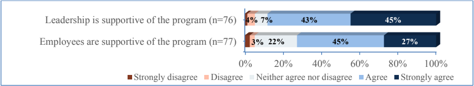
100% 積み上げ横棒グラフ（0%〜100%）です。凡例は「強く反対」、「反対」、「どちらともいえない」、「賛成」、「強く賛成」です。各棒の区分に左から次の割合が表示されています。「経営層はプログラムを支援している（n=76）」4% / 7% / 43% / 45%、「従業員はプログラムを支援している（n=77）」3% / 22% / 45% / 27%。細い区分には割合が表示されていないものがあります。
Figure 31: Agreement for statements about organizational support for the security awareness program
図 31: セキュリティ意識向上プログラムに対する組織の支援に関する記述への同意

グループ間に統計的に有意な差は見られませんでした。
My organization’s leadership is supportive of the security awareness program: A large majority (88%) thought their leadership was supportive of their program. Only 5% disagreed or strongly disagreed.
自組織の経営層は、セキュリティ意識向上プログラムを支持している: 大多数（88%）が、自組織の経営層が自分たちのプログラムを支持していると考えていました。反対または強く反対したのは5%のみでした。
When asked what advice they would provide to their colleagues, gaining leadership support was the one of the most frequently mentioned topics:
同僚にどのような助言をするか尋ねたところ、経営層の支持を得ることが、最も頻繁に言及された話題の一つでした。
“Make sure you have management support so that you can ensure that you have the visibility within the agency so people understand that this is not something that you just ignore. This is something that's required, and this is something that is important to the work and to the protection of our agency.” (N12)
「経営陣の支援を必ず得て、機関内での認知度を確保し、これが無視してよいものではないと人々に理解してもらってください。これは求められていることであり、業務と機関の保護にとって重要なことです。」（N12）
“My first advice would be to establish and maintain a good working relationship with senior management because their support can make or break your program.” (N09)
「最初のアドバイスは、上級管理職と良好な協力関係を築き、維持することです。彼らの支持が、プログラムの成否を左右するからです。」（N09）
“If you aren't getting support from your direct supervisor, speak to others within your organization who might be able to go to bat for you. I was able to get a full-time contractor support this way.” (Q23)
「直属の上司から支援を得られない場合は、自分のために力になってくれそうな組織内の他の人に相談してください。私はこの方法で、常勤の契約職員による支援を得ることができました。」（Q23）
“Upper management support is a must and the key to success!” (Q58)
「上級管理職の支援は必須であり、成功の鍵です。」（Q58）
Several participants cited the strong leadership support they had as one of the most successful aspects of their programs:
参加者数人は、得られている力強い経営層の支持を、プログラムの最も成功している側面の一つとして挙げました。
“I would say we have good support from our management and executives. They seem to give us a lot of flexibility. If we want everyone to have a phishing exercise, they give us a little leeway to do so. If we draft a newsletter or a poster or something, they'll send it out to the user population agency-wide.” (S07)
「経営陣や幹部から、良い支援を受けていると思います。彼らは私たちに大きな柔軟性を与えてくれているようです。全員にフィッシング演習を受けさせたいと言えば、そのための少しの裁量を与えてくれます。ニュースレターやポスターなどの案を作成すれば、機関全体のユーザーに送ってくれます。」（S07）
“Now with management support, with the tying into people's performance evaluation plans, so that there is visibility and consequences if folks don't complete their set security awareness training or role-based training. So, the management support and the upper level of support in the tie into HR [human resources] performance plans has really helped us to achieve a higher, I think, a completion rate within our agency, for at least for federal employees.” (S08)
「現在は経営陣の支援を得て、人事評価計画に組み込むことで、所定のセキュリティ意識向上トレーニングや役割別トレーニングを修了しなかった場合に、そのことが明らかになり、結果も生じるようになっています。人事（HR［human resources］）の業績計画との連携に関する経営陣や上層部の支援は、少なくとも連邦職員について、当機関のトレーニング修了率を高める助けになったと思います。」（S08）
However, some were vocal about the perceived lack of leadership support for the program:
しかし、プログラムに対する経営層の支援が欠けていると感じていることを、はっきり述べた参加者もいました。
“I don't think management would do it unless it was mandated by law…At least every few years, I have to quote the legal basis for delivering this required training.” (D05)
「法律で義務付けられていなければ、経営陣はやらないと思います。…少なくとも数年ごとに、この必須トレーニングを実施する法的根拠を引用しなければなりません。」（D05）
“Security awareness training is definitely not a priority. They've got a lot of other things going on in the organization, and training just is not a priority.” (S10)
「セキュリティ意識向上トレーニングは、間違いなく優先事項ではありません。組織内ではほかに多くのことが進んでおり、トレーニングは優先事項ではないのです。」（S10）
“Anything that was done in the past was personal initiative. I've done newsletters, websites, tried to get Hollywood movies regarding security shown with discussion afterwards, tried to get a "security game" (I was told that was insulting). Management just didn’t care.” (Q34)
「過去に行われたことはすべて、個人の主導によるものでした。ニュースレターやウェブサイトを作成し、セキュリティに関するハリウッド映画を上映してその後に議論することや、『セキュリティゲーム』の実施を試みました（それは侮辱的だと言われました）。経営陣はまったく関心を示しませんでした。」（Q34）
A few survey participants expressed the need for more leadership support for their program to be successful:
調査参加者数人は、プログラムが成功するには、経営層のさらなる支援が必要だと述べました。
“More support from senior leadership outside of the IT/CIO office.” (Q88)
「IT／CIO 室以外の上級経営層からの、さらなる支援。」（Q88）
“Full support from upper management at the Department level. If the Department were to emphasize the importance of security awareness programs, it would trickle down to the Components.” (Q23)
「省レベルでの上層部の全面的な支援。省がセキュリティ意識向上プログラムの重要性を強調すれば、それは構成組織にも浸透するでしょう。」（Q23）
The employees in my organization are supportive of the security awareness program: Seventy-two percent of survey participants thought that employees were supportive of their program. Just 6% disagreed/strongly disagreed.
自組織の従業員は、セキュリティ意識向上プログラムを支持している: 調査参加者の72%が、従業員は自分たちのプログラムを支持していると考えていました。反対または強く反対したのは6%のみでした。
When asked about successful aspects of their program, some participants commented on employee engagement and interest in the program:
プログラムの成功している側面を尋ねたところ、参加者の中には、従業員のエンゲージメントとプログラムへの関心についてコメントした人もいました。
“Popular with the people encouraging engagement and behavior change.” (Q56)
「人気があり、エンゲージメントと行動変容を促しています。」（Q56）
“Participation and enthusiasm of employees.” (Q58)
「従業員の参加と熱意。」（Q58）
“Feedback from staff; the care they pay the training materials.” (Q83)
「職員からのフィードバックと、トレーニング資料への関心。」（Q83）
“I did see an increase in that to where people were stopping before they took the action versus saying, ‘Oops, I did something wrong’…It's like, is it really sinking in…If something kicked off in the news, I'd have individuals come back and say, ‘Hey, I heard this on the radio’ or, ‘I saw this in the news. Does this impact us?’ or…‘How can I can protect against it?" So, people are definitely more aware of what was going on and then asking the right questions.” (N10)
「行動を起こす前に立ち止まる人が増えたのを実際に目にしました。『しまった、間違ったことをした』と言うのではなく、です。…本当に身に付いているのだろうか、という感じです。…ニュースで何かが起きると、人々が戻ってきて、『ラジオでこれを聞いた』とか、『ニュースでこれを見ました。私たちにも影響がありますか』とか…『どうすればそれから身を守れますか』と尋ねるのです。人々は何が起きているかを明らかに以前より意識し、適切な質問をするようになっています。」（N10）
However, others remarked that some employees lack the time or motivation to engage with security awareness information or activities:
しかし、従業員の中にはセキュリティ意識向上の情報や活動に関わる時間や意欲がない人もいる、と述べた参加者もいました。
“We get so many emails of just users that they just don't have the time.” (D06)
「ユーザーから、単に時間がないという趣旨のメールが非常に多く来ます。」（D06）
“The expectation is that we know all this information, but we don't have the time to really learn it.” (D01)
「これらの情報を知っていることが期待されていますが、本当に学ぶ時間がありません。」（D01）
“A lot of times we'll find that sometimes our users aren't engaging with the message, or they may delete it, or they don't report it the way that we want them to.” (N01)
「ユーザーがメッセージに反応していないことや、メッセージを削除してしまうこと、また私たちが望む方法で報告していないことが、よく分かります。」（N01）
6.3 Resources for the Security Awareness Program
6.3 セキュリティ意識向上プログラムのリソース
Survey participants indicated their level of agreement about three statements about whether the security awareness program has adequate resources in the form of funding, staff, and technology. Figure 32 shows the results.
調査参加者は、セキュリティ意識向上プログラムに資金、人員、技術の形で十分なリソースがあるかどうかに関する3つの記述について、同意度を示しました。図 32 に結果を示します。
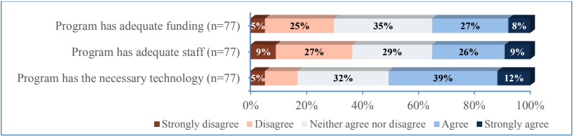
0%〜100%の100%積み上げ横棒グラフ。凡例：「Strongly disagree」、「Disagree」、「Neither agree nor disagree」、「Agree」、「Strongly agree」。左から右へ、区分に表示された割合：「Program has adequate funding (n=77)」：5%、25%、35%、27%、8%；「Program has adequate staff (n=77)」：9%、27%、29%、26%、9%；「Program has the necessary technology (n=77)」：5%、32%、39%、12%。細い区分には割合ラベルがないものがあります。
Figure 32: Agreement for statements about adequacy of resources for the security awareness program
図 32: セキュリティ意識向上プログラムのリソースの十分性に関する記述への同意
We have adequate funding for the security awareness program: Only a little over one third of participants (35%) agreed/strongly agreed that their security awareness program has adequate funding, with 30% disagreeing or strongly disagreeing.
セキュリティ意識向上プログラムに十分な資金がある: セキュリティ意識向上プログラムに十分な資金があることに賛成または強く賛成した参加者は、3分の1強（35%）にとどまり、30%が反対または強く反対しました。
For “Program has adequate funding,” there were statistically significant differences between: very small and large teams (z = -2.445); and small and large teams (z = -2.925). For very small teams (n = 22), 32% disagreed/strongly disagreed with the statement and 23% agreed/strongly agreed (the remainder were neutral). For small teams (n = 19), 47% disagreed/strongly disagreed and only 16% agreed/strongly agreed. In contrast, large teams (n = 12) were more likely to agree/strongly agree that they had adequate funding (67%).
原本PDFの抜粋画像
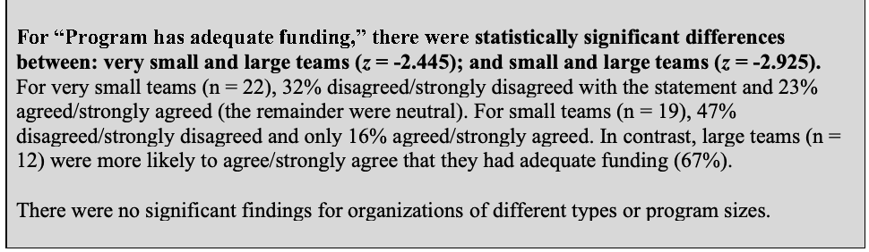
「プログラムに十分な資金がある」については、極小のチームと大規模なチームの間（z = -2.445）、および小規模なチームと大規模なチームの間（z = -2.925）に、統計的に有意な差がありました。極小のチーム（n = 22）では、32%がこの記述に反対／強く反対し、23%が賛成／強く賛成しました（残りは中立）。小規模なチーム（n = 19）では、47%が反対／強く反対し、賛成／強く賛成は16%のみでした。これに対し、大規模なチーム（n = 12）では、十分な資金があることに賛成／強く賛成する割合が高くなっていました（67%）。
There were no significant findings for organizations of different types or program sizes.
組織の種類やプログラムの規模が異なる組織については、有意な結果はありませんでした。
When asked what could help their programs be more successful, more funding was a common response:
プログラムをより成功させるのに何が役立つかを尋ねたところ、資金の増額が一般的な回答でした。
“Resource is always one of the biggest challenge in recent years. With limited resource, the focus is to accomplish other priority missions instead of this program.” (Q69)
「リソースは近年、常に最大の課題の一つです。リソースが限られているため、このプログラムではなく、他の優先ミッションを達成することに重点が置かれます。」（Q69）
“Funding and spending flexibility. There is no lack of high production quality, impactful, continuously updated content from commercial sources available at reasonable prices due to economies of scale. Finding content is not the problem– getting funding/approval to purchase it is the problem.” (Q43)
「資金と支出の柔軟性です。民間の提供元には、規模の経済により手頃な価格で入手できる、制作品質の高い、影響力のある、継続的に更新されるコンテンツが不足していません。コンテンツを見つけることは問題ではなく、それを購入するための資金／承認を得ることが問題です。」（Q43）
“We have a very small budget for our cybersecurity awareness program. I've seen some products in the private sector that are very slick and customizable, but they're also expensive. I also might ask for a travel budget, so we could provide some in-person training. We have facilities throughout the country and to hit each one would be quite expensive.” (S06)
「サイバーセキュリティ意識向上プログラムの予算は非常に小さいです。民間部門には、非常に洗練されていてカスタマイズ可能な製品もありますが、高価でもあります。また、対面のトレーニングを提供できるように、出張予算も求めるかもしれません。全国に施設があり、すべてを回るのはかなり費用がかかります。」（S06）
We have adequate staff dedicated to the security awareness program: When asked about program staffing, 35% agreed/strongly agreed that they had adequate staff, while 36% disagreed/strongly disagreed.
セキュリティ意識向上プログラム専従の十分な人員がいる: プログラムの人員体制について尋ねたところ、十分な人員がいることに賛成／強く賛成したのは35%で、反対／強く反対したのは36%でした。
For “Program has adequate staff,” there were differences between: very small and large teams (z = -2.198); and small and large teams (z = -2.758). While a large number of participants with very small and small teams did not think they had adequate staff (45% and 58%, respectively), only 8% (one) participant in a large organization disagreed with the statement.
原本PDFの抜粋画像
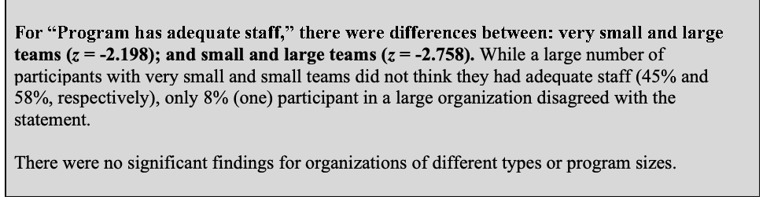
「プログラムに十分な人員がいる」については、極小のチームと大規模なチームの間（z = -2.198）、および小規模なチームと大規模なチームの間（z = -2.758）に差がありました。極小および小規模なチームの参加者の多くは、十分な人員がいるとは考えていませんでした（それぞれ45%と58%）が、大規模な組織でこの記述に反対したのは、参加者の8%（1人）にとどまりました。
There were no significant findings for organizations of different types or program sizes.
組織の種類やプログラムの規模が異なる組織については、有意な結果はありませんでした。
Staff resources were closely related to perceived lack of funding. Participants often discussed needing more staff to improve their programs:
人員というリソースは、資金の不足という認識と密接に関連していました。参加者は、プログラムを改善するために、より多くの人員が必要だと述べることが多くありました。
“I think we have all the pieces that we need to build on…It's just having the staff to support it. At my Department, there's one federal employee who is responsible for the program for the entire Department. There [are] contractors that supplement that work but definitely could use more resources, more so on the federal side.” (D01)
「基盤とするために必要な要素はすべてそろっていると思います。…足りないのはそれを支える人員だけです。当省では、省全体のプログラムを担当する連邦職員は1人です。その業務を補う請負業者はいますが、特に連邦職員の側で、リソースがもっとあれば確実に役立ちます。」（D01）
“We have a robust program. We are need [sic] more staff to execute efficiently and effectively.” (Q44)
「堅牢なプログラムがあります。効率的かつ効果的に実行するには、さらに人員が必要 [sic] です。」（Q44）
“Additional staff/SMEs to help create content other than only myself.” (Q74)
「私一人ではなく、コンテンツの作成を手伝ってくれる追加の人員／SME（専門家）。」（Q74）
“Actually having the ability to have dedicated training staff to write and update the training, make them more interactive here, and help determine better and more efficient knowledge checks in there.” (S01)
「トレーニングを作成・更新し、よりインタラクティブにし、より優れた効率的な知識確認の設計を支援する、専従のトレーニング担当者を実際に置けることです。」（S01）
“I would like to just have more creative staff available to work with to maybe stand up a specialized website for security training with the resources. But since we have so much problem just maintaining courses, I can't imagine trying to stand up an engaging website at this point either.” (D05)
「セキュリティトレーニング用のリソースを備えた専門のウェブサイトを立ち上げるなど、一緒に仕事ができる創造的な人員をもっと確保したいです。ただ、コースの維持だけでも非常に苦労しているので、現時点では魅力的なウェブサイトを立ち上げることなど想像もできません。」（D05）
The fact that most security awareness team members were part-time and had other duties also contributed to the staffing shortage:
セキュリティ意識向上チームのメンバーの大半が兼任で、他の職務も持っていたことも、人員不足の一因でした。
“The team…who perform the security-related operations for our network, they're the same team that helps create and manage the training. So, if we have an issue or a series of issues, sometimes we may have to either delay training or make a lighter version of training.” (N07)
「ネットワークのセキュリティ関連の運用を行うチームが、トレーニングの作成と管理を支援する同じチームです。そのため、問題や一連の問題が起きると、トレーニングを遅らせたり、トレーニングの簡易版を作ったりしなければならないことがあります。」（N07）
“I have one person who it's not a full-time position for them because we were doing performance metrics as well, both for training as well as other metrics related to security. So, I'd like to be able to put more staff power to it. And that also goes for resources into maintaining our websites, the SharePoint sites, investigating and finding new information, new newsfeeds or what have you to be able to put out there on a timely, updated, routine basis.” (N08)
「トレーニングの指標だけでなく、セキュリティに関するその他の指標も扱っているため、その担当者は専任ではありません。ですから、この業務にもっと人員を割けるようにしたいと思います。ウェブサイトや SharePoint サイトの維持、調査、新しい情報やニュースフィードなどを見つけ、適時に更新し、定期的に発信するためのリソースについても同じです。」（N08）
Lack of staff was not the only issue; staff turnover was also viewed as a disruption for programs:
人員不足だけが問題ではなく、人員の入れ替わりも、プログラムの妨げと見なされていました。
“Frequent staff turnover, including CISO and CIO positions decrease the long-term success of a program because ideas, funding and priorities change and ultimately limit program strength and growth opportunities. Meaning you can't build a great house, if you keep ripping up the foundation every year or two.” (Q24)
「CISO や CIO のポストを含む人員の頻繁な入れ替わりは、アイデア、資金、優先事項が変わるため、プログラムの長期的な成功を損ない、最終的にはプログラムの強さと成長の機会を制限します。つまり、1〜2年ごとに土台を壊し続ければ、立派な家は建てられません。」（Q24）
“We have a high turnover in this industry in security and security awareness. And for instance, we just lost about, I'd say, a third of our workforce in our CISO organization due to financial cutbacks. A lot of our contract staff has been eliminated.” (N05)
「この業界では、セキュリティとセキュリティ意識向上の人員の離職率が高いです。たとえば、最近、財政削減により、CISO 組織の人員の約3分の1を失いました。契約職員の多くが削減されました。」（N05）
“I think the biggest issue that I run into is we've had a lot of turnover in our contract staff. So, I haven't had anyone supporting me consistently for a while now.” (S04)
「最大の問題は、契約職員の入れ替わりが多かったことだと思います。ここしばらく、継続的に私を支えてくれる人がいません。」（S04）
We have the necessary technology to support the security awareness program: Over half of survey participants (51%) agreed/strongly agreed that they have adequate technology for their security awareness program. Just 17% disagreed/strongly disagreed.
セキュリティ意識向上プログラムを支える必要な技術がある: 調査参加者の過半数（51%）が、セキュリティ意識向上プログラムに十分な技術があることに賛成／強く賛成しました。反対／強く反対は17%のみでした。
For “Program has the necessary technology,” there were significant differences between: very small and small teams (z = 2.871); small and medium teams (z = -2.586); and small and large teams (z = -2.534). Whereas only 21% of small teams agreed/strongly agreed that they had adequate technology, significantly more agreed for very small, medium (n = 10), and large teams (55%, 60%, and 75%, respectively).
原本PDFの抜粋画像
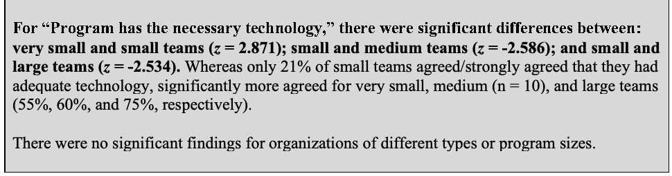
「プログラムに必要な技術がある」については、極小と小規模のチームの間（z = 2.871）、小規模と中規模のチームの間（z = -2.586）、および小規模と大規模のチームの間（z = -2.534）に有意な差がありました。十分な技術があることに賛成／強く賛成した小規模なチームは21%のみでしたが、極小、中規模（n = 10）、大規模なチームでは、有意に多くが賛成していました（それぞれ55%、60%、75%）。
There were no significant findings for organizations of different types or program sizes.
組織の種類やプログラムの規模が異なる組織については、有意な結果はありませんでした。
A few participants mentioned various technologies as being positive contributors to the success of their programs:
参加者数人は、さまざまな技術がプログラムの成功に好影響を与えていると述べました。
“Having an automated tool to be able to pull which employees have completed the security awareness program.” (Q71)
「セキュリティ意識向上プログラムを修了した従業員を抽出できる自動化ツールがあること。」（Q71）
“There's been innovation to improve how those things are viewed through different means, putting things on SharePoint and making them so that they can be navigated.” (D03)
「それらの見え方を、さまざまな手段で改善するイノベーションがあり、SharePoint に載せて、ナビゲートできるようにしています。」（D03）
However, others noted various technologies or tools that they needed but currently lacked:
しかし、必要としているにもかかわらず現在は持っていない、さまざまな技術やツールを挙げた参加者もいました。
“More robust interactive system, allow real world like simulations.” (Q25)
「より堅牢なインタラクティブシステム。実世界に近いシミュレーションができるもの。」（Q25）
“Automated measurement tools with defined metrics.” (Q64)
「定義された指標を備えた自動化された測定ツール。」（Q64）
“Personnel management system that syncs with the Learning Management System.” (Q24)
「学習管理システムと同期する人事管理システム。」（Q24）
“The Department hasn't had a spear phishing exercise for, I think, nearly two years because of a lack of a tool.” (D03)
「省では、ツールがないため、ほぼ2年間、スピアフィッシング演習を実施していないと思います。」（D03）
7 Key Takeaways
7 主な要点
In this section, we summarize key findings from study results related to security awareness approaches and challenges.
本章では、セキュリティ意識向上のアプローチと課題に関する研究結果から得られた主な知見をまとめます。
7.1 Required Training
7.1 必須トレーニング
Two-thirds of represented organizations develop at least some required training content in-house, with 80% saying they update content at least once a year. Sub-components often receive training from their Departments, with most being mandated to use what is provided without modification.
対象となった組織の3分の2は、必須トレーニングのコンテンツの少なくとも一部を組織内で開発しており、80%は少なくとも年1回コンテンツを更新すると答えました。下位組織は所属省庁からトレーニングを受けることが多く、その大半は、提供されたものを変更せずに使うことを義務付けられています。
Less than a quarter of organizations were challenged to find required training course materials or struggled with lack of guidance on what to include in required training. This was particularly problematic for independent agencies who do not receive training materials from a parent organization. To address this challenge, multiple participants expressed the need for standardized government training and guidance that allows customization for the unique needs of the organization.
必須トレーニングのコース資料を見つけることに苦労した、または必須トレーニングに何を含めるかに関するガイダンスの不足に苦労した組織は、4分の1未満でした。これは、親組織からトレーニング資料を受け取らない独立機関にとって、特に問題でした。この課題に対処するため、複数の参加者が、組織に固有のニーズに合わせてカスタマイズできる、標準化された政府共通のトレーニングとガイダンスが必要だと述べました。
Automation was viewed as essential for efficient tracking of employees’ completion of training. But some organizations lack this automation, especially when tracking contractors, who may not have access to organizations’ learning management systems.
従業員のトレーニング修了状況を効率的に追跡するには、自動化が不可欠だと考えられていました。しかし、特に、組織の学習管理システムにアクセスできない場合のある請負業者を追跡する際などに、この自動化が欠けている組織もあります。
When dealing with individuals who do not complete their training by the deadline, many organizations disable accounts of non-compliant employees, resulting in higher compliance numbers. Still, almost half said that getting employees to complete the required training was challenging. Employees are busy, have to complete other mandatory training, and may find the training boring or irrelevant to their work roles.
期限までにトレーニングを修了しない人への対応として、多くの組織は、非準拠の従業員のアカウントを無効にしており、その結果、準拠率が高まっています。それでも、ほぼ半数は、従業員に必須トレーニングを修了させることが困難だと答えました。従業員は多忙で、他の必須トレーニングも修了しなければならず、トレーニングを退屈だと感じたり、自分の職務に無関係だと感じたりする場合があります。
7.2 General Approaches
7.2 全般的なアプローチ
The majority of programs address well-known security topics (e.g., phishing, passwords, malware) in addition to privacy topics, with many organizations incorporating information that employees can also use in their personal lives. Recently, organizations have introduced additional topics relevant to teleworking.
大多数のプログラムは、プライバシーのトピックに加えて、フィッシング、パスワード、マルウェアなどのよく知られたセキュリティトピックを取り上げており、多くの組織は、従業員が私生活でも使える情報を取り入れています。最近、組織は、テレワークに関連する追加のトピックを導入しています。
Phishing simulations were used by most represented programs and were often described as being one of the successful aspects of the security awareness program. While many focus on phishing click rates to gauge learning, others also view reporting rates as indicators that employees’ behaviors are being positively impacted.
フィッシングのシミュレーションは、対象となったほとんどのプログラムで用いられており、セキュリティ意識向上プログラムの成功している側面の一つだと説明されることが多くありました。学習の度合いを測るためにフィッシングのクリック率に注目するプログラムが多い一方で、報告率も、従業員の行動に好影響が及んでいることを示す指標と見なすプログラムもあります。
Most programs hold a variety of security awareness activities throughout the year in addition to the mandated annual training, including speaker events, instructor-led sessions, webinars, and interactive activities such as escape rooms. However, smaller programs are less likely to offer additional activities.
ほとんどのプログラムは、義務付けられた年次トレーニングに加えて、講演イベント、講師による講習、ウェビナー、脱出ゲームのような対話型のアクティビティなど、さまざまなセキュリティ意識向上活動を年間を通じて実施しています。しかし、規模の小さいプログラムは、追加の活動を提供する傾向が低くなっています。
Programs utilize a wide range of other communication channels, such as email, newsletters, posters, and videos. However, they may be challenged in several ways. Especially for interactive approaches, programs struggle with ensuring materials are Section 508 compliant. They also have difficulty providing security awareness information in an engaging way and customizing security awareness information to a diverse workforce with different needs and levels of security knowledge.
プログラムは、電子メール、ニュースレター、ポスター、動画など、他のさまざまなコミュニケーションチャネルを活用しています。しかし、いくつかの点で課題に直面する場合があります。特に対話型のアプローチでは、資料が Section 508 に準拠していることを確保するのに苦労しています。また、セキュリティ意識向上の情報を魅力的な形で提供することや、ニーズやセキュリティ知識のレベルが異なる多様な従業員に合わせて情報をカスタマイズすることにも困難があります。
Finally, about half do not take advantage of the benefits of positive reinforcement as they do not recognize employees for practicing good security behaviors.
最後に、約半数は、優れたセキュリティ行動を実践した従業員を称賛しておらず、正の強化の利点を活用していません。
7.3 Collaboration
7.3 連携
Programs frequently collaborate with other groups in the organization, most commonly other cybersecurity and IT teams. However, less than half partner with their communications team, despite the importance of communication knowledge and skills as highlighted in NISTIR 8420B “The Federal Cybersecurity Awareness Workforce.”
プログラムは組織内の他のグループと頻繁に連携しており、最も多い連携先は他のサイバーセキュリティチームと IT チームです。しかし、NISTIR 8420B「The Federal Cybersecurity Awareness Workforce」で強調されているコミュニケーションの知識とスキルの重要性にもかかわらず、コミュニケーション担当チームと連携しているプログラムは半数未満です。
While just over a quarter of survey participants expressed challenges collaborating or sharing information with other federal security awareness professionals, focus group participants frequently highlighted their wish lists for greater government collaboration. For example, they expressed a desire for a central repository of materials or ongoing working groups or forums. While there are government working groups focused on training (e.g., the Interagency Information Security Training Working Group or FISSEA), it may be that many participants are not aware of existing groups or prefer another type of group (e.g., real-time, online forum).
他の連邦政府のセキュリティ意識向上の専門家との連携や情報共有に課題があると答えた調査参加者は4分の1強にとどまりましたが、フォーカスグループの参加者は、政府によるより大きな連携への要望を頻繁に強調しました。たとえば、資料の中央リポジトリ、継続的なワーキンググループ、フォーラムを望むと述べました。トレーニングに焦点を当てた政府のワーキンググループ（たとえば、Interagency Information Security Training Working Group や FISSEA）はありますが、多くの参加者は既存のグループを知らないか、別の種類のグループ（たとえば、リアルタイムのオンラインフォーラム）を好むのかもしれません。
7.4 Sources of topics and approaches
7.4 トピックとアプローチの情報源
Programs use a variety of internal resources to inform security awareness topics and approaches. Most are taking into account employee and leadership feedback to inform their program as well as looking at security incidents within the organization to drive topics or areas of emphasis.
プログラムは、セキュリティ意識向上のトピックとアプローチに情報を提供するために、さまざまな内部リソースを活用しています。ほとんどは、従業員と経営層のフィードバックをプログラムの参考にするとともに、組織内のセキュリティインシデントを見て、トピックや重点領域を決めています。
Programs also utilize external government and non-government sources, although government resources were more popular. Teams often pull from hot topics in the news and industry security incident reports.
プログラムは、外部の政府および非政府の情報源も活用していますが、政府のリソースの方が多く用いられていました。チームは、ニュースで話題になっていることや、業界のセキュリティインシデント報告書から取り上げることがよくあります。
7.5 Measuring Success
7.5 成功の測定
Over three quarters of survey participants rated their security awareness programs as moderately or very successful. Training completion rates were the most common measure of effectiveness. Behavior based measures (phishing click rates, reporting of phishing emails or other incidents) were utilized by over half.
調査参加者の4分の3超が、自組織のセキュリティ意識向上プログラムをある程度または非常に成功していると評価しました。有効性の指標として最も一般的だったのは、トレーニング修了率でした。行動に基づく指標（フィッシングのクリック率、フィッシングメールその他のインシデントの報告）は、半数を超えるプログラムが用いていました。
Less than a half try to correlate organizational security incident trends with behaviors learned or reinforced through security awareness information. Not surprisingly, this data integration was seen as very or moderately challenging by just under half of participants. In contrast, managers listed security incident data as the measure of effectiveness most preferred for helping them make decisions about the security awareness program, while training completion and phishing click rates were mentioned by much fewer.
組織のセキュリティインシデントの傾向を、セキュリティ意識向上の情報を通じて学習または強化された行動と関連付けようとしているのは、半数未満です。当然ながら、このデータの統合は、参加者の半数弱が非常にまたはある程度困難だと見なしていました。これに対し、管理職は、セキュリティ意識向上プログラムに関する意思決定を行ううえで最も望ましい有効性の指標としてセキュリティインシデントのデータを挙げ、トレーニング修了率やフィッシングのクリック率を挙げた人ははるかに少数でした。
Just under half of represented programs thought that determining what and how to measure was moderately or very challenging. Participants desired more guidance on measures of effectiveness, including more government-specific data for benchmarking their own program.
対象となったプログラムの半数弱は、何を、どのように測定するかを決めることがある程度または非常に困難だと考えていました。参加者は、自組織のプログラムをベンチマークするための政府固有のデータを含め、有効性の指標に関するガイダンスをより多く求めていました。
Over half of survey participants think their leadership views compliance as the most important indicator of program success, with slightly fewer having the same opinion themselves. However, in qualitative remarks, many focus group and survey participants disagreed with this compliance focus, instead emphasizing that the real purpose of security awareness is to affect employees’ security behaviors; therefore, success should be measured in ways beyond training completion rates.
調査参加者の半数超は、自組織の経営層がコンプライアンスをプログラムの成功の最も重要な指標とみなしていると考えており、参加者自身が同じ意見だった割合はやや少なくなっていました。しかし、定性的な意見として、フォーカスグループと調査の多くの参加者は、このコンプライアンス重視に同意せず、セキュリティ意識向上の真の目的は従業員のセキュリティ行動に影響を与えることであり、したがって成功はトレーニング修了率以外の方法でも測定すべきだと強調しました。
7.6 Program Support
7.6 プログラムへの支援
Large majorities (at least 70%) thought that security is a priority for the organization, that security is understood by leadership and employees as important, and that leadership and employees supported the security awareness program. However, despite the claimed organizational support, only about a third thought the program had been provided adequate funding and staff.
大多数（70%以上）は、セキュリティが組織の優先事項であること、セキュリティが重要であると経営層と従業員に理解されていること、経営層と従業員がセキュリティ意識向上プログラムを支持していることを認めていました。しかし、組織の支援があると主張しているにもかかわらず、プログラムに十分な資金と人員が提供されていると考えたのは、約3分の1にとどまりました。
8 Moving Forward
8 今後に向けて
Based on our findings, we offer the following suggestions and potential opportunities to address the most significant issues identified in our study.
私たちの知見に基づき、研究で特定された最も重要な問題に対処するための提案と、その潜在的な機会を示します。
For those developing government-wide guidelines, policies, and sharing platforms:
政府全体のガイドライン、方針、共有プラットフォームを策定する人々に向けて:
•Explore the potential of developing or purchasing standard government training that relieves the burden of content development but allows for some customization to accommodate organizations’ unique missions.
•コンテンツ開発の負担を軽減しつつ、組織固有のミッションに対応するための一定のカスタマイズを可能にする、標準的な政府共通のトレーニングを開発または購入する可能性を検討します。
•Provide updated guidelines to help organizations in the various aspects of their security awareness programs, for example: how to implement and enforce required training; topics to address; development of engaging communication materials and methods; measures of effectiveness; use of positive reinforcements; collaboration with internal and external groups; and how to gain support and resources for the security awareness program. A planned update to NIST SP 800-50 and SP 800-16 will likely address many, if not all, of these issues.
•組織がセキュリティ意識向上プログラムのさまざまな側面を進めるのを支援するため、更新したガイドラインを提供します。たとえば、必須トレーニングの実施と徹底の方法、取り上げるトピック、魅力的なコミュニケーション資料や方法の開発、有効性の指標、正の強化の活用、内部および外部のグループとの連携、セキュリティ意識向上プログラムへの支援とリソースの獲得方法などです。計画されている NIST SP 800-50 と SP 800-16 の更新は、これらの問題の全部ではないにしても、多くに対処すると見込まれます。
•Develop guidance to improve the interpretation of phishing simulation click rates. For example, the NIST Phish Scale seeks to help organizations rate phishing detection difficulty by incorporating contextual elements in addition to traditional phishing cues [STEVES].
•フィッシングのシミュレーションのクリック率の解釈を改善するためのガイダンスを策定します。たとえば、NIST の Phish Scale は、従来のフィッシングの手がかりに加えて、文脈的な要素を取り入れることで、組織がフィッシングの検知難易度を評価するのを支援することを目指しています [STEVES]。
•Provide tools to help programs produce more engaging materials in a variety of formats. Allow alternative formats to appeal to different learning preferences without the requirement for Section 508, as long as similar compliant material is available in another format.
•プログラムが、さまざまな形式で、より魅力的な資料を作成できるよう支援するツールを提供してください。同等のSection 508準拠資料が別の形式で利用できる限り、異なる学習の好みに応じた代替形式を認め、その代替形式にはSection 508への準拠を求めないでください。
•Expand marketing of the FISSEA conference/seminar series. Consider the creation of a real-time, online forum to encourage ongoing collaboration among federal security awareness professionals.
•FISSEA のカンファレンス／セミナーシリーズの宣伝を拡大します。連邦政府のセキュリティ意識向上の専門家の間で継続的な連携を促すため、リアルタイムのオンラインフォーラムの創設を検討します。
For organizations with security awareness programs:
セキュリティ意識向上プログラムを持つ組織に向けて:
•Automate the training tracking process and develop systems that can handle both federal and contractor employees. Integrate other systems (e.g., HR) as necessary.
•トレーニングの追跡プロセスを自動化し、連邦職員と請負業者の両方を扱えるシステムを開発します。必要に応じて、他のシステム（たとえば、HR）を統合します。
•Explore implementing positive incentives to encourage employees to complete training and practice good security habits.
•従業員がトレーニングを修了し、優れたセキュリティ習慣を実践することを促すため、前向きなインセンティブの導入を検討します。
•Consider offering additional ways to complete training beyond the typical online course. Ensure course materials are updated with the topics most relevant to the organization.
•典型的なオンラインコース以外にも、トレーニングを修了する方法を追加で提供することを検討します。コース資料に、組織に最も関連するトピックが反映されるよう、更新を確実に行います。
•Reinforce security awareness information and learning throughout the year, not just via once-a-year training. Utilize a variety of communication methods, including events and interactive activities, to appeal to different learning preferences. Incorporate information that employees can use both at work and at home.
•セキュリティ意識向上の情報と学習を、年1回のトレーニングだけでなく、年間を通じて強化します。異なる学習の好みに訴えるため、イベントや対話型のアクティビティを含む、さまざまなコミュニケーション方法を活用します。従業員が職場でも自宅でも使える情報を取り入れます。
•Emphasize impact on employees’ attitudes and behaviors more than compliance when determining program success.
•プログラムの成功を判断する際には、コンプライアンスよりも、従業員の態度と行動への影響を重視します。
•Ensure leadership support of the security awareness program, including providing adequate resources and allowing program staff to enforce training completion (e.g., by disabling accounts if training is not completed in time).
•十分なリソースの提供や、プログラムの担当者がトレーニングの修了を徹底できるようにすること（たとえば、トレーニングが期限内に修了されない場合にアカウントを無効にするなど）を含め、セキュリティ意識向上プログラムに対する経営層の支援を確保します。
Acknowledgements
謝辞
The authors of this document would like to acknowledge those who have made this work possible. We would like to thank the federal employees who took time out of their busy schedules to participate in the focus groups and survey and provide their valuable perspectives. We would also like to thank the following individuals who provided valuable input and feedback on the study: Rodney Petersen, Marian Merritt, Danielle Santos, Karen Wetzel, Alen Kirkorian, Dan Jacobs, Sarah Moffat, Clarence Williams, and Daniel Eliot.
本書の著者は、この取り組みを可能にしてくださった方々に謝意を表します。多忙な日程の合間を縫ってフォーカスグループと調査に参加し、貴重な視点を提供してくださった連邦職員の皆様に感謝します。また、この研究に貴重な意見とフィードバックを寄せてくださった次の方々にも感謝します: Rodney Petersen, Marian Merritt, Danielle Santos, Karen Wetzel, Alen Kirkorian, Dan Jacobs, Sarah Moffat, Clarence Williams, Daniel Eliot。
References
参考文献
[BADA] Bada, M, Sasse, AM, Nurse, JRC (2019) Cyber Security Awareness Campaigns: Why Do They Fail to Change Behaviour? arXiv preprint. https://arxiv.org/ftp/arxiv/papers/1901/1901.02672.pdf
[BADA] Bada, M, Sasse, AM, Nurse, JRC (2019) Cyber Security Awareness Campaigns: Why Do They Fail to Change Behaviour? arXiv preprint. https://arxiv.org/ftp/arxiv/papers/1901/1901.02672.pdf
[CISA] Cybersecurity and Infrastructure Security Agency (2021) National Cybersecurity Awareness Month (NCSAM). Available at https://www.cisa.gov/national-cyber-security-awareness-month
[CISA] Cybersecurity and Infrastructure Security Agency (2021) National Cybersecurity Awareness Month (NCSAM). 入手先: https://www.cisa.gov/national-cyber-security-awareness-month
[FERTIG] Fertig, T, Schütz, AE, Weber, K (2020) Current Issues of Metrics For Information Security Awareness. European Conference on Information Systems (Online). Available at https://aisel.aisnet.org/ecis2020_rp/184
[FERTIG] Fertig, T, Schütz, AE, Weber, K (2020) Current Issues of Metrics For Information Security Awareness. European Conference on Information Systems (Online). 入手先: https://aisel.aisnet.org/ecis2020_rp/184
[FISSEA] National Institute of Standards and Technology (2021) FISSEA – Federal Information Security Educators. Available at https://csrc.nist.gov/projects/fissea
[FISSEA] National Institute of Standards and Technology (2021) FISSEA – Federal Information Security Educators. 入手先: https://csrc.nist.gov/projects/fissea
[SANS] SANS (2021). 2021 SANS Security Awareness Report: Managing Human Cyber Risk. Available at https://www.sans.org/security-awareness-training/resources/reports/sareport-2021/
[SANS] SANS (2021). 2021 SANS Security Awareness Report: Managing Human Cyber Risk. 入手先: https://www.sans.org/security-awareness-training/resources/reports/sareport-2021/
[STEVES] Steves, M, Greene, K, Theofanos, M (2020) Categorizing Human Phishing Difficulty: A Phish Scale. Journal of Cybersecurity 6(1):tyaa009. Available at https://tsapps.nist.gov/publication/get_pdf.cfm?pub_id=927333
[STEVES] Steves, M, Greene, K, Theofanos, M (2020) Categorizing Human Phishing Difficulty: A Phish Scale. Journal of Cybersecurity 6(1):tyaa009. 入手先: https://tsapps.nist.gov/publication/get_pdf.cfm?pub_id=927333
[STEWART] Stewart, G, Lacey, D (2012) Death by a Thousand Facts: Criticising the Technocratic Approach to Information Security Awareness. Information Management & Computer Security 20(1):29-38.
[STEWART] Stewart, G, Lacey, D (2012) Death by a Thousand Facts: Criticising the Technocratic Approach to Information Security Awareness. Information Management & Computer Security 20(1):29-38.
[WILSON] Wilson M, Hash J (2003) Building an Information Technology Security Awareness and Training Program. (National Institute of Standards and Technology, Gaithersburg, MD), NIST Special Publication (SP) 800-50. https://doi.org/10.6028/NIST.SP.800-50
[WILSON] Wilson M, Hash J (2003) Building an Information Technology Security Awareness and Training Program. (National Institute of Standards and Technology, Gaithersburg, MD), NIST Special Publication (SP) 800-50. https://doi.org/10.6028/NIST.SP.800-50
[WOELK] Woelk, B (2015) The Successful Security Awareness Professional: Foundational Skills and Continuing Education Strategies. EDUCAUSE Center for Analysis and Research. Available at https://library.educause.edu/~/media/files/library/2016/8/ erb1608.pdf
[WOELK] Woelk, B (2015) The Successful Security Awareness Professional: Foundational Skills and Continuing Education Strategies. EDUCAUSE Center for Analysis and Research. 入手先: https://library.educause.edu/~/media/files/library/2016/8/ erb1608.pdf
Appendix A—Acronyms
付録 A—略語
Selected acronyms and abbreviations used in this paper are defined below.
本書で使用している主な略語を以下に定義します。
CIO Chief Information Officer
CIO 最高情報責任者
CISO Chief Information Security Officer
CISO 最高情報セキュリティ責任者
FISSEA Federal Information Security Educators
FISSEA 連邦情報セキュリティ教育者
FTE Full Time Equivalent
FTE 常勤換算
IT Information Technology
IT 情報技術
LMS Learning Management System
LMS 学習管理システム
NICE National Initiative for Cybersecurity Education
NICE サイバーセキュリティ教育のための国家イニシアチブ
NIST National Institute of Standards and Technology
NIST 米国国立標準技術研究所